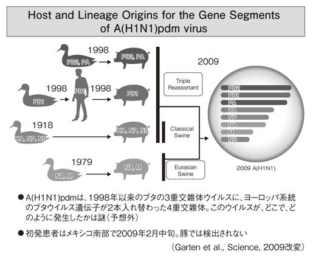

| 強毒型インフルエンザ (PHP新書) | |
| 岡田晴恵 | |
| PHP研究所 (2011) | |
強毒型インフルエンザ
岡田晴恵
２００９年春、豚インフルエンザ由来のウイルスが新型インフルエンザとなって流行を起こしたのは記憶に新しい。豚インフルエンザというが、これはそもそも鳥インフルエンザが豚に感染して、豚の中で維持されて豚型ウイルスとなり、人社会で流行するようになったものだ。幸いこの豚インフルエンザは弱毒型で病原性も低く、ほとんどの成人が交叉性の基礎免疫を持っていたこともあって、大きな健康被害を出さずに済んだ。しかしこれ以降、「新型インフルエンザはたいしたことはない」「これでパンデミックは済んだ」との楽観的な誤った印象が強く国民に残っている。
その結果、これまでその危機が叫ばれ続け、ワクチンや抗インフルエンザ薬等の備蓄、発生時の行動計画の策定等、不完全ながらも、国をはじめ各分野で進められてきたＨ５Ｎ１型強毒型鳥インフルエンザからの「強毒型新型インフルエンザ」への対策が大きく後退している現状である。
鳥インフルエンザ問題の本質は、鳥ウイルスが遺伝子の突然変異を起こして、人の中で流行する人型ウイルスに変化し、「新型インフルエンザ」となって、世界的大流行（パンデミック）を起こすことにある。そもそもこのＨ５Ｎ１型強毒型鳥インフルエンザからの「強毒型新型インフルエンザ」への対策が国家危機管理として叫ばれてきたはずである。現状、国民の意識の中でそれが消え去ってしまっているのは本末転倒の事態ではないのか。では、現在、Ｈ５Ｎ１型鳥インフルエンザはどうなっているのか？ 鳥インフルエンザの危機は、本当に去ったのか？
２０１０年秋以降、島根県の養鶏場、鳥取県、富山県の白鳥、鹿児島県のナベツル等の強毒型Ｈ５Ｎ１型鳥インフルエンザの感染事例に加え、隣国、韓国でもより大規模な流行事例の報告が相次いでいる。いずれも、北から越冬のために南下してきた渡り鳥に関連した感染事例であり、ウイルス学的にも特定の遺伝的系統に属していることから、シベリア等の北極圏の営巣地帯に強毒型ウイルスが定着したことが強く示唆されている。今後、毎年冬季に恒常的に強毒型鳥インフルエンザが日本で発生を繰り返し、感染が拡大することが強く懸念されるのだ。
さらにこの強毒型鳥ウイルスは、インドネシアや中国では豚での不顕性感染も報告され、豚は人と鳥の両方のウイルスに感染できることから、豚の体内でウイルス遺伝子の交雑による新型インフルエンザ出現への可能性も指摘されている。また、人への偶発的な感染例、死亡者の報告も後を絶たず、２００９年には再び増加傾向に転じている。患者から分離されたウイルスの遺伝子解析の結果によると、鳥型から人型に徐々に変化しつつある兆候も認められており、いつ強毒型新型インフルエンザに転じて大流行してもおかしくはない。
現在のＨ５Ｎ１型鳥ウイルスは、特に病原性の強い強毒型ウイルスであり、人に対しても全身感染や多臓器不全を起こす。これに由来した新型インフルエンザの大流行では、人でも５～15％の高い致死率が想定されている（国立感染症研究所インフルエンザウイルス研究センター長田代眞人氏）。このような強毒型インフルエンザは、これまで我々が知っている呼吸器感染症のインフルエンザとはまったく別物の、「全身感染の新しい重症疾患」となることが想定されるのだ。この点を広く理解していただくため、本書のタイトルを特に『強毒型インフルエンザ』とした。
このような「強毒型インフルエンザ」のパンデミックが起これば、その健康被害、社会的影響は甚大で、２００９年のパンデミックとはまったく比較にならないものとなる。このため、早急な対策の再開と推進が強く要望されるところである。本書で取り上げられている２００６年より政府が行ってきたプレパンデミックワクチンの国家備蓄も、強毒型インフルエンザに特化した対策であり、通常の弱毒型のインフルエンザではありえない。このように強毒型インフルエンザと弱毒型のそれとでは、新型インフルエンザとしての健康被害、対策もまったく異なるのである。
今、Ｈ５Ｎ１型強毒型新型インフルエンザ問題を再認識し、現状を共有するとともに、為すべき政策を提言することを目的に本書を緊急に出版することにした。このまま、強毒型インフルエンザ問題が忘れ去られ、本来、できうるはずのワクチンや薬等のさまざまな対策が済し崩しのまま、Ｈ５Ｎ１型強毒型新型インフルエンザの襲来を受けることは何としても防がねばならない。
今回、東京都はもとより日本の新型インフルエンザ対策に重大な関心をお寄せ頂いている石原慎太郎都知事には様々な御協力を賜った。また、東京都都議会議員時代に石原都知事にＨ５Ｎ１型強毒型インフルエンザの危険性を訴え、その対策に今も奔走されている田代ひろし氏には、対策を一歩前に進めるための具体的かつ貴重なご助言とご協力を賜った。ここに出版に到ることができたことを心より御礼申し上げる。
また、国立感染症研究所インフルエンザウイルス研究センター長田代眞人先生には、御指導を賜り心より感謝している。
Ｈ５Ｎ１型強毒型インフルエンザの問題は、科学的な様々な裏づけによって「想定された危機」であり、決して「想定外」の事態ではない。さらに、現在の医学と医療技術によって、ワクチンや薬、感染予防対策も含め有効な手段が多くあり、事前準備が可能な危機管理である。今、国民的な理解と世論をもって、強毒型インフルエンザという災害が大きく減災される対策が再開されることを願い、本書を世に送り出す。
２０１１年４月
21世紀政策研究所シニア・アソシエイト 岡田晴恵
強毒型インフルエンザ 目次
目次
※図表、資料は田代眞人国立感染症研究所インフルエンザウイルス研究センター長講演より転載
鳥インフルエンザはなぜ蔓延しているのか
２０１０年秋以降、日本各地で野鳥や鶏の鳥インフルエンザの感染の報告が相次いだ。まさに、Ｈ５Ｎ１強毒型鳥インフルエンザウイルスの感染事例である。その中でも記憶に強く残るのが、天然記念物のマナヅルの事例かもしれない。鹿児島県の出水市はその貴重種の一大越冬地でもあり、観光の目玉である鶴が湖沼で鳥ウイルスに感染して死亡した報告は、人々を震撼させた。また、環境省や自治体担当職員をはじめ、多くの市民に大変な心労を課すことにもなったのである。
このニュースを聞いた人の中には、「鳥インフルエンザを環境省が担当するの？ 農林水産省じゃないの？」という疑問を持った人もいたのではないか。
鳥インフルエンザと言えば、養鶏場の周囲に真っ白な石灰を撒き、担当者が頭からすっぽりと身を包むような防御着を着てニワトリを殺処分している衝撃的な映像が浮かぶ人も多いだろう。このとき自治体とともに中心となって対応するのが農林水産省の職員であるからだ。そんなこともあって、鳥インフルエンザ問題は、農水省の仕事という印象があるのかもしれない。
しかし、実際は、同じ鳥インフルエンザウイルスでも、野鳥が感染すれば環境省の所管、養鶏場などの家禽（ニワトリ、ウズラ、シチメンチョウ、アヒルなど）で発生すれば農林水産省、もし万一、人に感染する事態になれば、医療を所管する厚生労働省が対応する、というように担当が変わる。こうした縦割りの行政が様々な連携すべき緊急時の対応の壁となっているのが実態なのである。果たして、鳥インフルエンザへの対処は、これでいいのだろうか。
現在のＨ５Ｎ１強毒型鳥インフルエンザは、カモやハクチョウなどの水鳥に感染した場合には３割程度の致死率であるが、鶏に感染した場合には数日内に１００％を殺す、典型的な強毒型の鳥インフルエンザウイルスである。
死んだ野鳥などから分離されたＨ５Ｎ１型鳥インフルエンザウイルスの遺伝子の解析結果でも、鳥に全身感染を起こす、強毒型ウイルスの典型的な遺伝子の配列が確認されている。そう考えれば流暢なことは言っていられないのだ。
そもそも自然界の鳥インフルエンザには、これまで強毒型Ｈ５Ｎ１型ウイルスのような毒性の強いウイルスは存続していなかった。本来の鳥インフエンザウイルスは弱毒型であり、鳥に感染しても、呼吸器と消化管表面の上皮細胞の局所感染に留まり、病気すら起こさない。カモや鶏、そのほかの野鳥が感染しても、発症したり、死んだりするようなことはなかった。
これに対して、強毒型のＨ５Ｎ１型鳥ウイルスは、野鳥や鶏などに感染すると、血中にウイルスが入り、血流で巡って全身感染を起こす、病原性の強い致死性のウイルスなのだ。そして今、この強毒型Ｈ５Ｎ１鳥インフルエンザウイルスは、世界の広い地域の鳥の中で、すでにパンデミック（世界的大流行）を起こしている。
それもあって天然記念物の鶴に感染した事例が出たことがわかったとき、環境省の職員がその種を維持するためにも、鳥インフルエンザ対策に対して神経をとがらせたのは、職務上、当然のことだったろう。さらに、この鳥ウイルスが近隣地域に拡大するのを防ぎ、養鶏業の鶏舎に持ち込まれることを何としても阻止するためにも、防疫対策が緊急に取られることにもなった。
ちなみにこの鶴の事例があった直後に、絶滅危惧種であるトキの感染を心配して、トキの餌にタミフルを予防的に混ぜて摂取させておくのはどうであろうか、などの質問まで舞い込んできたのである。
以降、このＨ５Ｎ１型鳥インフルエンザは野鳥だけでなく、養鶏場にも侵入し、鶏の大量感染死が認められ、そのたびにあちこちで、感染鳥のみならず、周囲の感染疑いの鳥の殺処分や周辺地域の消毒がなされてきた。また、国内の発生地点の周辺10キロ圏内での鶏や鶏卵の移動制限などの処置が取られたのは、誰もが知るところとなっている。
では、この鳥インフルエンザはどこから来たのだろうか？
２０１０年秋以降、Ｈ５Ｎ１型鳥インフルエンザは、日本だけでなく、東アジア、東南アジアの広範囲な地域で拡大、感染事例も野鳥、養鶏場ともに多数発生している。
日本では、国内の感染事例の報道が中心であったが、海外に目を向ければ、中国、韓国、モンゴル、ベトナム、カンボジア、ミャンマー、バングラデシュ、ネパール、インドネシアなどでも発生している。中でも隣国の韓国では、大規模な感染事例が重なり、５００万羽以上という、これまでにない多数の鳥の殺処分が実施されていた。
この鳥インフルエンザウイルスは感染した渡り鳥によって、これらの地域に持ち込まれたと考えられる。だが問題は、この鳥ウイルスを運んできた渡り鳥が、どこから飛来してきたのか、ということである。そのルートが、感染死した鳥や病鳥の調査から明らかにされている。
感染死した鳥や病鳥からはウイルスが分離され、その遺伝子の詳細な解析が行われているからだ。遺伝子を検査した結果、シベリアなどの北方から越冬のために温暖地域、亜熱帯地域に飛来した各種の渡り鳥が、Clade ２・３・２系統（Cladeとは、Ｈ５Ｎ１ウイルスのＨＡ遺伝子に基づく系統樹から区別されるグループの呼び名）のＨ５Ｎ１ウイルスを保持しており、各地の家禽にウイルスを伝播させたことが判明している。ちなみに系統樹とは、生物を相互の類縁関係をベースに配列し、枝分かれした樹木のような形で示すことを言う。
では、「北方から冬を越すためにやってきた渡り鳥」が、鳥インフルエンザを持って飛来してくるということは、いったい何をわれわれにもたらすのだろうか？
そもそも鳥インフルエンザは、カモのような水鳥を自然の宿主（微生物などが共生する生物）として、カモの腸管内に共存している。カモの腸管で増殖したウイルスは、糞便中に大量に排泄され、水場を汚染する。この水を飲んだひな鳥が新たに感染を受けることとなる。カモなどの水鳥は、シベリアやモンゴルなど北アジアの池や湖沼の水場で春夏に産卵。ヒナを育てて、秋には越冬地である南の地域に渡って越冬する。
その夏季にヒナを育てる北アジアの営巣地帯の湖沼の水が、この系統の強毒型Ｈ５Ｎ１ウイルスで汚染されていることが強く懸念されているわけだ。今後、営巣地帯で生まれる水鳥のヒナが、Ｈ５Ｎ１型鳥インフルエンザウイルスに汚染された水を飲んで次々と感染していく。感染すれば、強毒型ウイルスにより発症して病気になって死ぬ個体も出てくることになる。
問題なのは生き残った鳥が強毒型の鳥ウイルスを持ったままに、今後、秋冬にかけて、日本をはじめ越冬地に繰り返しやってくる可能性が高いことである。
なぜか？
越冬地に降り立った感染鳥が越冬地の水場などで糞をすれば、その糞中のおびただしい数の強毒ウイルスが湖水の水を汚染する。その水場などを共有する野鳥にウイルスが感染し、やがてそれらの野鳥が家禽へのウイルス伝播の汚染源となる可能性があるためだ。
北極圏などの営巣（巣を作る）地帯の湖や池は、冬季は厚い氷に閉ざされているであろう。だが、そもそもインフルエンザウイルスは低温では安定的で感染性が保持されやすいので、氷に閉ざされたからと言って死ぬことはない。実験室でも、ウイルスはマイナス80などのディープフリーザー（冷凍ケース）で保管されるほどだ。このようにして、北の地域で安定的に保存されたＨ５Ｎ１強毒型鳥インフルエンザウイルスは、次の春夏シーズンには湖水に溶け出し、また新たなヒナに感染を繰り返して、子孫ウイルスを増やしていく。
感染した渡り鳥が、再び秋冬になると越冬地である南アジアに、強毒型ウイルスとともにやってくる。いったん、北の営巣湖沼が汚染されると、毎年これを繰り返していくことは容易に想定できるだろう。こうして恒常的にＨ５Ｎ１強毒型鳥インフルエンザが日本をはじめ東アジア、東南アジアへ襲来してくる可能性が、高くなっていくことになる。
このようにＨ５Ｎ１型鳥インフルエンザを深刻な問題ととらえるのは、これが今年だけで終わる一過性のニュースではないこと、楽観視できない問題であることを懸念してなのである。
私がなぜ、２０１０年秋以降の鳥インフルエンザ感染事例の広がりを危惧しているのかを、少しはご理解いただけたのではないだろうか。
今後、日本各地だけでなく、東南アジアの広い地域で鳥インフルエンザの発生が多発し、鳥インフルエンザの流行が繰り返されると、鶏やアヒルなどの家禽に感染がおよぶリスクがまた増大する。さらに、家禽に感染すれば、これらを飼育している人や養豚場にも、感染のリスクがおよぶことになる。
こんな話をすると鳥インフルエンザが、鳥以外にも感染するの？ 人に感染するの？ という素朴な疑問がわいてくるだろう。そこでここからは鳥インフルエンザ問題の本質につながる人に感染する可能性について、順を追って考察していくことにしよう。
鳥インフルエンザが人に感染するのかについて説明する前に、Ｈ５Ｎ１型インフルエンザの現状を説明しておきたい。
２００３年後半以降から２０１１年４月の現在まで、このＨ５Ｎ１型鳥インフルエンザは東南アジアからシベリア、中東、ヨーロッパ、アフリカに至るまで世界の広い範囲で鳥の中で流行している。そして、それは鶏などの家禽のみに限らず、多くの水鳥や野鳥にも致死的な全身感染を起こしている。
これまでの強毒型鳥インフルエンザウイルスは、鶏やシチメンチョウなどの家禽に対しては激烈な症状と高い致死率を示すが、カモ、アヒル、ガンなどの水鳥や野鳥ではほとんど症状を出さない不顕性感染であった（この理由はまだ解明されていない）。しかし、Ｈ５Ｎ１型強毒型鳥インフルエンザでは、家禽以外にも様々な種類の鳥に対しても致死性の強い病原性を示す点が、これまで経験してきた他の強毒型ウイルスとは異なっている。
現在までのところ、問題となっているＨ５Ｎ１型強毒型鳥インフルエンザは、ニワトリ、アヒル、カモ、シチメンチョウ、ウズラなどの家禽以外にも、ハクチョウ、ガチョウ、カラス、様々な野鳥を含む多くの鳥類のほか、トラ、ヒョウ、ネコ、ネズミ、イヌ、フェレット、ウサギ、テン、ジャコウネコ、アライグマ、ロバなどの哺乳類にも致死的な感染をしており、50種を超える様々な感受性動物が確認されている。後で説明するが、ヒトも哺乳類として決して例外ではない。
このような多くの哺乳類にも、鶏と同様に致死性の全身感染を起していることが判明している一方で、不思議なことに、豚には症状を出さない不顕性感染を起こしている。このことは、後でくわしく触れるが、この豚の感染事例が非常に深刻な問題を引き起こしている。
タイのバンコクにはトラの動物園があるが、２００４年にここで起こったことはまさに、残念ながら、哺乳類がＨ５Ｎ１型強毒型鳥インフルエンザに感染することを証明することとなった。このトラ動物園では約３００頭のトラを飼育していたのだが、何頭かのトラに、Ｈ５Ｎ１型鳥インフルエンザウイルスに感染していた鶏肉を餌として与えたところ、Ｈ５Ｎ１型鳥インフルエンザにそのトラが感染したのである。これらのトラは全身感染を起こして発症・死亡したが、さらにほかのトラにもウイルスを伝播して、結果として80頭がＨ５Ｎ１型鳥インフルエンザの全身感染で死んだのだった。多くのトラは、呼吸器からの喀血を伴っていた。
このニュースが世界に流れたとき、多くのインフルエンザ研究者は一様に驚愕したものだが、この感染事例の意味するところが非常に重大であったからだ。
それはまず、鳥型のインフルエンザウイルスが、「種の壁」を越えて哺乳類に直接に感染したということ。さらに餌として与えた感染した鶏（トラの餌であるから非加熱で生の状態であった）を食べたことで感染が成立したこと。つまり、経口感染が起こったことであった。
そして、のちの詳細な調査によって、トラからトラへの飛沫感染によるウイルスの伝播も起こったこともわかったのである。その後、ヒョウや家ネコなどでも同様のＨ５Ｎ１型鳥インフルエンザの感染事例が報告された。
つまり、この事例は図らずもＨ５Ｎ１型鳥インフルエンザが哺乳類へ感染する動物実験となってしまった。その後、実験的には、家ネコ等のネコ科の動物は一般にＨ５Ｎ１型鳥インフルエンザウイルスに対する感受性が高く、致死的な全身感染を起こすことがわかった。トラもヒョウもネコ科の動物である。
では、感染する可能性があるのは、ネコ科だけなのだろうか。ほかの哺乳類はどうなのか、そんな疑問がわいてくる。
たとえば、豚はＨ５Ｎ１型鳥インフルエンザに感染はするが、ほかの動物で見られるような重症な全身感染症状は出ないことがわかっている。実際に中国やインドネシアでは、豚に感染した報告もあり、豚から豚へ感染が広がったことも強く疑われている。
また、２００４年、京都にある養鶏場でＨ５Ｎ１型鳥インフルエンザの大きな感染事例があった。発見と報告、さらに対応が遅れたために被害を拡大した事例である。このとき、周囲のカラスなどの野鳥がＨ５Ｎ１型鳥ウイルスに感染して死亡。ハエなどの昆虫からもウイルスが検出された。鶏糞中のウイルスがハエに物理的に付着したからで、その対応が研究者の間では議論された。このときに、鶏糞を食べて腸管内にウイルスを持ったカラスの事例も見つかっている。
さらに、感染して死んだ野鳥や弱った病鳥は野生の動物に捕食されるので、これを介して、次の動物に感染を広げる危険性もある。
最近は、日本の各地で野生化したアライグマが見つかっているが、このアライグマの一部がＨ５Ｎ１型鳥インフルエンザに感染しているという報告もある。以前、アニメーションのブームでアライグマをペットにする人も多かったが、飼育しきれずに野外に放したり、逃げ出したりした個体が、日本の風土に適応して生息地を広げているという。そんなアライグマが、今後、感染した野鳥などを捕食する中でＨ５Ｎ１ウイルスに感染するケースが増えることも、想定される。
このほかに２０１０年秋以降、日本全国のあちこちで報告された野鳥の感染事例では、ハヤブサなどの肉食系の野鳥も見つかっている。ハヤブサが感染した死鳥、病鳥を捕食して感染した可能性もある。
本題に入ろう。果たして鳥インフルエンザは、人に感染するのであろうか？
ズバリ結論をいうと、「鳥インフルエンザは、人に感染する」。大量のウイルスに暴露するなどした場合には、感染することがある。だが、鳥ウイルスが人に感染することは、稀ではある。であれば、どのような場合に感染するのか？
たとえば、Ｈ５Ｎ１鳥ウイルスに感染した病鳥や死鳥を直接、素手で触ったり、さばいたりした場合に感染することが、海外から多数、報告されている。日本では、家庭で鶏をさばいて料理するという習慣はないが、東南アジアなどのマーケットでは、今も日常的に生きた鶏やアヒルなどの家禽が売られている。それを各家庭でさばいて食材にする食文化は、いまだ広く残っている。感染鳥をさばいたり、料理したりしている間に人に感染する可能性が出ている。目で見て、病気だったり、死んでいる鳥であったりすれば、さばく人間も警戒心を持つだろうが、ここに落とし穴がある。ここで覚えておいていただきたいのは、アヒルなどは、Ｈ５Ｎ１型鳥ウイルスに感染していたとしても、明らかな症状を出さない場合もあるということだ。
さらに問題なのは、東南アジアの一部の国で、家禽がウイルスに感染しないようにと、鳥用のＨ５Ｎ１型鳥インフルエンザワクチンを接種していることであろう。これらのワクチンは、ウイルスの感染を完全には防ぐことができないが、感染した鶏が全身症状を示したり死亡するのを、ある程度予防できる。ヒナのときに鳥用の鳥インフルエンザワクチンを接種した家禽の場合、たとえ感染していても症状が出ない。そのため市場などで売られている鳥が、感染しているかどうか見分けがつかない、そんな事態が海外では現実に起こっている。
もし、知らないうちにＨ５Ｎ１型鳥ウイルスに感染していれば、その家禽は発症していなくても強毒型の鳥ウイルスを持っていることとなる。それを知らずに人が食材として買って行くことになる。またお察しの通り、感染した家禽の糞の中にも莫大な鳥インフルエンザウイルスが排泄されていて、ほかの鳥や動物への感染源にもなっていく。無症状の家禽であれば、鳥インフルエンザへの警戒心も起きない。このように、ワクチンを使用している地域では、知らないうちに、人の周りにウイルスが潜んでいることもありえるわけだ。
日本では、Ｈ５Ｎ１型鳥インフルエンザの感染事例の報告があれば、有無を言わさず殺処分などのウイルスの封じ込め対策とともに、周囲での卵や鶏の移動制限が強く行われる。こうした厳しい処置によって卵や肉の安全性が保たれている。しかし、これは経済的な補償などの裏づけがあるからこそ、可能な措置とも言えるのだ。
また、日本では通常、鶏などの家禽に鳥用のインフルエンザワクチンを接種することも禁止されているので、鶏におけるＨ５Ｎ１型強毒型鳥ウイルス感染の発生は、すぐに探知される。さらに感染事例が発生すれば、10キロ圏内の卵や肉の移動制限もかかる。従って、現行の対策がきちんと取られている限り、日本国内の市場に感染した鳥の卵や肉が流通することはない。国内で卵や肉を食べて、鳥インフルエンザに感染する可能性は極めて低い、と結論づけることが可能だ。
しかし、海外の鳥インフルエンザ発生国ではそうはいかない。多くの途上国の中には、日本等の先進国のように、鳥インフルエンザの発生に対して、即座に家禽を感染疑いの鶏まで含めてすべて殺処分をし、ウイルスを根絶して封じ込めるという根本的な対応を取れるような、経済的な余裕のない国もあるためだ。
また、国によってはアヒルの生の血液・血餅を使用した料理（ブラッドプディングと呼ばれる）を食べるが、感染したアヒルのこうした料理を人が口にしたり、汚染された家禽の肉を不十分な加熱調理のままで食べたときなどに、経口感染が考えられると報告されている。また、鳥の生血を宗教的儀式に使用する地域もある。
では、海外に出かけたときに、経口感染しないようにするためにどうすればいいのか？
注意点としては、海外旅行などに出発する前に、インターネットで外務省や厚生労働省、検疫所のホームページなどで、渡航先の国の鳥インフルエンザの発生状況を確認する。もしくは、インターネットが手元になくても、空港などには、海外渡航情報が掲示されているからそれを必ずチェックすることであろう。
もし、出かける国が鳥インフルエンザの発生が確認されている地域であれば、鶏肉や卵はよく加熱してから食べること。目玉焼きは両面焼きにし、肉は内部にもピンク色の部分がないように注意し、すべての部分が70以上に十分加熱されているか、確認することは必須である。
一部の報道で、「感染した鳥の卵や肉を食べて、感染した事例は世界的にもありません」との発言やニュースの解説などがあったが、それは間違いである。
感染している家禽の肉などを生や不十分な加熱で食した場合には人への感染例も報告されているので、十分注意したい。また、海外への旅行などの際には、むやみに鳥が売られているマーケット（特に生きた家禽が売られるライブマーケット）には出かけないなどの注意も必要だ。内閣府の食品安全委員会からもそれらの情報が出ているので、ぜひ、参考にしていただきたい（前頁表）。
残念ながら２０１０年秋以降、日本では野鳥の感染事例が各地で多数報告されている。そこでここでは、感染を予防するための注意点を挙げておくこととする。
まず、病鳥や死鳥を発見した場合には、手を触れずにおき、保健所はじめ自治体の担当部署に連絡するようにしたい。もちろん、素手で触るのは避けることだ。
特に子供たちが病鳥を見つけた場合、動物愛護の気持ちから弱っている鳥を保護しようとすることも考えられるので、病鳥には触らないことや近づかないことはきちんと親が子供へ説明しておこう。
また、小学校や幼稚園などでは、鶏、アヒルなどを飼育している場合も多い。鳥インフルエンザが発生している国内の現況では、教職員が排泄物の清掃や動物の飼育にあたること。また、病鳥を発見した場合は、教育委員会などを通じて自治体担当部署へすみやかに連絡し、適切な処理を促すべきである。
もちろん、鶏やアヒルの鳥インフルエンザ感染が疑わしいうちは、病鳥、死鳥の出た鶏小屋には近づかないよう子供たちに注意する。特に小さい子供は、かわいがっている鶏が病気になれば、どうしても助けたいという気持ちが働き、世話を買って出ることも十分に想定される。
私は養護教諭の研修などで講演を依頼されることも多く、教育現場に出向くと、そのような子供たちの行動を心配する先生方や保護者の声もよく耳にする。こんなときは親や教師が、鳥インフルエンザは人にもうつることがあるので注意が必要であることを、よく子供に言って聞かせることが必要であろう。国内での鳥インフルエンザの発生事例の増えている今、学校で鳥インフルエンザの予防教育を地道にやっていくことの重要性を強く感じている。
海外では感染した闘鶏の世話をしたり、病鳥や特に症状を示さない感染したアヒルと遊んだことを原因とする感染の報告もされている。稀なケースではあっても、注意を怠らないことが、感染の危険性をシャットアウトする最も有効な手段であろう。
養鶏場でＨ５Ｎ１型鳥インフルエンザの感染報告が遅れると、鶏舎内で感染が速いスピードで拡大してしまい、大量の鶏が次々と死んでいく。このように強毒型鳥インフルエンザは、鶏での感染力が非常に強いため、報告の遅れは致命的な感染拡大を許すことになる。
一夜にして、鶏舎が全滅するほどの感染伝播力を持つことが、Ｈ５Ｎ１型強毒型鳥インフルエンザの怖さなのである。感染した鶏が増えれば、それに連動しておびただしいウイルスが産生され、体外に排泄される鶏糞や血液、体液中のウイルス量が爆発的に増大する。そうなれば、鶏舎内に莫大な鳥インフルエンザウイルスが産生、存在することになる。
２００４年の京都での発見、報告の遅れた養鶏場での殺処分は、まさにそんな状況下であった。そのような中で、殺処分に関わった作業員の血液抗体の調査が行われた結果、作業員のうちの４名にＨ５Ｎ１型ウイルス抗体陽性が確認された。作業中に、同鳥ウイルスに感染していたことが判明したのである。
作業員らは抗インフルエンザ薬であるタミフルを予防投与されていたために、発症こそ免れていたが、ウイルスの感染は受けたのである。当時、このニュースは新聞などに大きく取り上げられたが、感染が拡大すればウイルスは連動して激増し、またその作業者の周囲に莫大なウイルスが飛散することになりかねなかった、際どい事例であったと言えよう。
こうなることを防止するためには、ウイルスを早期発見し、感染している鶏がまだ少数である間に徹底した殺処分を行い、ウイルスを封じ込めること。ここが肝心であろう。この点は、日本では農水省や自治体から業界業者に向けて、かなり徹底されていると考えている。
さらに作業にあたる人たちは「人に感染する危険性のあるウイルスである」ことを十分に認識の上、緊張感を持って立ち入ることである。そうすることが感染事故を未然に防ぐことにもなるだろう。過酷な作業が長時間におよべば、疲労も重なり、集中力が落ちることも十分に想定される。
さらに十分な教育、研修を受け、鳥の取り扱いに慣れた専門の職種の人間のみが、処分作業に従事するわけではないことも忘れてはいけない。鳥インフルエンザの殺処分などの作業は、突然、多くの職員に緊急対応を要請せざる得ない危機対応となる。まったく、関係のない事務職の人々に作業が要請されていることもあるという。絶対に感染しないように、防御着の着脱や手順の打ち合わせなど、本年の秋冬が来る前に事前訓練する研修や予行演習などを、あらかじめ自治体が広く職員教育を行っておくことをぜひ提案したい。
２０１１年３月の時点では、「鳥インフルエンザは人には感染しないから大丈夫」という誤解が社会に広がっている印象をぬぐいきれない。今後、Ｈ５Ｎ１型鳥インフルエンザの襲来が、秋から冬にかけて毎年のように繰り返されることも十分考えられる。農水省、環境省、総務省、地方自治体の教育、要請を受けた場合の自衛隊の隊員の方々への訓練などの事前対応が、それまでに取られることを強く望みたい。
感染した鶏の糞便中には、１グラム当たり１０００万個の感染性ウイルスが排泄される。また、糞便中ではウイルスは長く安定することができ、37では１週間程度、４では36日程度も生存している。
鳥インフルエンザが発生したときに、その地域での車のタイヤの消毒が行われたのは、このためである。車のタイヤや人の靴底に付着した感染鳥の糞などからのウイルスの汚染、拡大を防止したものだった。
鶏糞は東南アジアなどの農村部では、肥料として畑にまいたり、養魚の餌として養魚用水に大量に散布され、それがウイルスの汚染を拡大させる結果ともなった。糞は乾燥すれば塵芥となって舞い上がり、それらの微粒子を大量に吸い込めば感染の危険性も出てくる。このようなことも、Ｈ５Ｎ１型鳥ウイルスが拡大する誘因として指摘されている。
また、Ｈ５Ｎ１型鳥インフルエンザは、アヒルなどの家禽にも感染する。アヒルやカモは、症状を出さない場合もあるため、外見からは感染しているかどうか判断できない。
むしろ、症状が見えないので、人はこれらの鳥に不用意に接触する場合も多くなる。感染するとほぼ１００％が発症・死亡する鶏よりも、むしろ危険性が高いともいえよう。普通の私たちの生活では、野鳥に直接、手を触れたり、接触する機会はほとんどないと思われる。万が一、野鳥に素手で触れたら手洗いを念入りに行うなどは、確実に守りたいことの一つであろう。病鳥や死鳥は、素手では触れないことも大切である。
２０１１年３月末現在、ＷＨＯ（世界保健機関）は、２００３年11月以降に確認しているＨ５Ｎ１型鳥インフルエンザの発症者数を５３６人（うち死亡者３１６人 致死率59％）と公表している。これは、ＷＨＯがウイルス学的検査によってＨ５Ｎ１型ウイルスの感染を確認できた症例のみの数字である。
途上国の多く、特に都市から離れた地域では、患者が発生したり、死亡してもウイルスを分離したり、その遺伝子からウイルスを同定することはむずかしい。したがって、このＷＨＯの報告の数字は氷山の一角であると評価せざるをえない。おそらくこの10倍以上の患者数、死亡者数があると考えるほうが妥当であろう。
左の地図にあるように、アジア、中東、アフリカの広いエリアに患者、犠牲者が出ている。
アジアでは、インドネシア（１７５人発症者うち死亡者１４４人）、ベトナム（１２０人発症者うち死亡者60人）をはじめ、中国、タイ、カンボジア、パキスタン、ラオス、ミャンマー、バングラデシュとなっている。
中東では、エジプト（１３０人発症者うち死亡者44人）、トルコ（発症者12人うち死亡者４人）、アゼルバイジャン、イラク。アフリカでは、ジプチ、ナイジェリアとなっている。
報告をＷＨＯにあげるシステムが未整備の地域もあるため、報告がないところでも、発症者がいないとはいい切れない。多くの発生国の中には観光立国もあり、観光客の混乱や旅行者の数が減るのを恐れ、報告しにくい背景もあるだろう。また、豊富な労働力の確保もあって、発生国の中には多くの多国籍企業が工場誘致などの進出をしている地域もある。
いずれにせよ、鳥インフルエンザの人感染事例は、それらの経済活動には負のイメージにもなりかねない。様々な思惑や複合的な都合の中で、特にＨ５Ｎ１型強毒型鳥ウイルスが人に感染した事例や症例が把握しきれないことが、非常に心配される。ＷＨＯによる正式な報告は過小評価であること、またこの数字を以って、流行動向を正確には判断できない状況にあることに留意すべきである。
鳥インフルエンザが人の新型インフルエンザに変化して大流行する
そして、このように偶発的に人に感染していた鳥インフルエンザが、人への感染を繰り返している間に、人から人へ連続して感染するようなウイルスに変化することがある。また、人の中で毎年流行している人の季節性インフルエンザウイルスと、鳥のインフルエンザウイルスの遺伝子が混ざり合って、鳥インフルエンザが人に感染しやすい性質を持ってしまうこともある。こうなると鳥インフルエンザが、突然、人の社会で大きな流行を起こすことになり、その新しい人型になったウイルスは「新型インフルエンザ」と呼ばれることになる。これまで流行していた人の季節性インフルエンザに換わって、新型インフルエンザは新しく流行するニューフェイスのインフルエンザであるためだ。このように鳥インフルエンザは、人の社会で新しく流行する〝新型インフルエンザ〟に変身して、大流行を起こす危険性がある。そして、Ｈ５Ｎ１型鳥インフルエンザのような毒性の強い鳥インフルエンザからの新型インフルエンザ発生となれば、人での致死率も高く、強い病原性を持つウイルスの人社会での大流行となるリスクが高い。そのために、このような強毒性の新型インフルエンザの発生を未然に防ぐためにもＨ５Ｎ１型強毒型鳥インフルエンザが発生すると、鶏の殺処分がすぐに行われて、ウイルスの拡大や変異を阻止する対策がとられているのだ。鳥インフルエンザの最大の問題は、このような新型インフルエンザの変化をどう遅らせるかにあるようだ。
ゼロからわかるインフルエンザウイルス
インフルエンザウイルスは、内部タンパクの抗原性の違いによって、Ａ型、Ｂ型、Ｃ型に区別されるが、新型インフルエンザとして問題になるのは、Ａ型インフルエンザのみである。そこで、この章ではＡ型ウイルスについて、取り上げていくこととしよう。
Ａ型インフルエンザウイルスは、遺伝子として８本のＲＮＡ分節を持ち（ウイルスの遺伝子は一重鎖のマイナス鎖ＲＮＡであり、これが８つの分節に分かれている）、これらの遺伝子ＲＮＡとウイルス内部タンパクの結合体（ヌクレオカプシドという）を、宿主細胞の細胞膜と同じ構成の脂質二重層（エンベロープという）が包んだひも状、楕円状の構造である。
この脂質膜から外側に、２種類の糖たんぱくがスパイク状に並んでいる。その一つがＨＡ（ヘマグルチニン、赤血球凝集素）であり、ウイルスが標的細胞に感染するときに、細胞表面のウイルスレセプターに特異的に結合する役割を持つ。もうひとつのスパイクは、ＮＡ（ノイラミダーゼ）と呼ばれる酵素で、感染細胞内で複製されたウイルスが感染細胞の細胞膜から飛び出る際に、ウイルスレセプターである糖鎖を分解して、放出されやすく働く。さらに、Ｍ２タンパクという感染初期に重要な働きをする小さな分子が、ウイルス膜（エンベロープ）を貫通してイオンチャンネルを形成している。
Ｈ５Ｎ１などの亜型は、このＨＡとＮＡの亜型（抗原的に区別される種類）を示したものである。Ａ型インフルエンザウイルスでは、ＨＡには16種類の亜型（Ｈ１～Ｈ16）とＮＡには９種類の亜型（Ｎ１～Ｎ９）が存在し、様々な組み合わせを持ったウイルスが多くの宿主によって維持されている。
インフルエンザウイルスは、遺伝子のＲＮＡとタンパクしか持たないシンプルな構造のため、自身だけでは子孫ウイルスを作ることができない。そこで動物の細胞に侵入してその機能を乗っ取り、細胞にウイルス自身の遺伝子を複製させ、また自分自身のタンパクを合成させて、自分と同じウイルスを増殖させて、子孫を作るわけだ。これが感染である。われわれにとっては、迷惑な感染も、インフルエンザウイルスにとっては、子孫ウイルスを作るための死活問題なのである。ウイルス遺伝子が複製される際に、８本の各ＲＮＡ分節は互いに独立して複製されるので、２種類の異なる亜型のインフルエンザウイルスが同時に感染すると、遺伝子分節の交雑（組み換え）が起こり、互いに混ざりあった新しい亜型を持つウイルスが誕生することもある。もしもこれが人から人に感染伝播しやすい性質を持ち、人の世界に入って流行すれば、新型インフルエンザの出現ということになる。
実はこのＡ型インフルエンザだが、元来は鳥のウイルスであり、上で述べたすべての亜型のウイルスは、鳥の中で伝播維持されている。これらの鳥由来のウイルスが、長いときをかけて、ブタ、ヒト、ウマ、アザラシ、クジラなどのそれぞれの動物に適応して、これらを自然宿主として、地球上で繁栄しているのだ。各動物に適応したインフルエンザウイルスは、種の壁を越えて、人の他にも異なる動物種にも感染する場合もある（人獣共通感染症という）。この際に、鳥や豚のウイルスと人のウイルスの遺伝子分節が交雑すると、新型インフルエンザウイルスの出現となる。強毒型のＨ５Ｎ１型鳥ウイルスに由来する新型ウイルスが人の世界で大流行した場合の大きな健康被害を考えると、流行を鳥インフルエンザの段階に留めて、人型への変化を何としてでも阻止する必要があるのだ。
何故Ｈ５Ｎ１型鳥インフルエンザ問題がマスコミにも大きく取り上げられ、また養鶏場などで発生した場合には、徹底した殺処分などの厳しい対策が取られるのか。ここにその理由があると言えよう。
前述と少し重複するが大切な点なので、ここで詳しく解説する。上の図に示したとおり、Ａ型インフルエンザは、地球最大規模の人獣共通感染症である。野鳥や人だけではなく、クジラにもアザラシにもＡ型インフルエンザは感染する。ここで注目していただきたいのが、この図の最上部の中心にカモなどの水禽がいることだ。
実はカモの腸管の中には、すべての亜型（Ａ型の中でさらに抗原性の違いによって少しずつ種類が違う）が組み合わさった様々なインフルエンザウイルスが感染している。これが、鳥インフルエンザウイルスだ。しかし、カモなどの水禽（水鳥）はインフルエンザウイルスに感染しても、病気にはならない（Ｈ５Ｎ１型強毒型鳥インフルエンザは、例外で発症したり、死亡したりすることもある）。
なぜなのか？
症状を出さない不顕性感染（ウイルス感染は起こっているが、臨床症状を示さないもの）なのである。他者の細胞を使って（感染して）、子孫を増やさねばならない宿命を持つインフルエンザウイルスにとって、このように自然宿主である動物を持ち、その動物に障害を与えずに共生することは、自分の子孫を安定的に増やし、自己保存をするために好都合である。
インフルエンザウイルスは、おそらく長い年月をかけて、宿主の繁栄のためにカモと共存するように適応してきたものと考えられる。
ウイルスと共存しているカモは、腸管の細胞で増やしたインフルエンザウイルスを糞と一緒に湖沼の水の中などに排泄する。糞が湖沼で融ければ、おびただしいウイルスも、水中に拡散して広がることとなる。
このようなウイルスで汚染された水を飲んで感染を受けたカモが、冬、越冬地に飛来して、そこの池などに糞をすれば、水場を共有する鶏やアヒル、豚にもこのカモの鳥インフルエンザウイルスが感染していくのである。さらに、家禽である鶏やアヒル、家畜である豚が同様に水場を共有したり、感染した野鳥から感染すれば、それら家禽や家畜を飼育する人間にもこの鳥インフルエンザウイルスと接触する可能性が出てくる。こうして、偶発的ではあるものの、人が感染する事例も出てくるわけである。つまり、豚や人を含むすべてのＡ型インフルエンザウイルスの遺伝子は、カモの鳥インフルエンザウイルスに起源を持つと考えられるわけだ。
こうした経過を経て、鳥インフルエンザウイルスは、偶然とはいえ、哺乳類の豚や人にも感染する機会を得る。鳥インフルエンザは、このような感染を繰り返すうちにウイルス遺伝子の突然変異を蓄積し、豚や人に適応して変化した豚型や人型のウイルスが発生してくる。豚の中で維持された鳥インフルエンザウイルスは、こうした経過で豚インフルエンザと呼ばれるように変化していく。
一方、人から人へ効率よく伝播されるようになった鳥インフルエンザウイルスは、徐々に人型インフルエンザに変化していく。
そして、人型になった鳥インフルエンザは、最初の１、２年間は人間社会の間で大流行を起こすことになるのだが、これが新型インフルエンザと呼ばれる。大流行を起したのち、新型インフルエンザは、さらに人型ウイルスへと少しずつ変化し、適応しながら、季節性インフルエンザとなっていく。
ここで、人型のインフルエンザである季節性インフルエンザと新型インフルエンザの関係を整理してみることとしよう。実は、この両者の関係が整理されていないと、新型インフルエンザ対策における基礎免疫付与の重要性（第３章 ワクチン政策の必要性を参照）が理解しにくくなるのだ。
人のインフルエンザには、日本などの温帯地域では、毎年冬季を中心にやってくる季節性インフルエンザと、数十年おきにやってきて、大流行を起す新型インフルエンザの二つがある。季節性インフルエンザは、四季のある温帯地方では冬に流行し、亜熱帯では雨季を中心に２回の流行の山がある。熱帯地方では、１年を通じて患者が発生する。
日本では、毎年やってくる季節性インフルエンザでも、１シーズンの３カ月位の間に１０００万人以上の人がかかり、少ないときでも数千人、多いときには３万人もの犠牲者が国内で出ている。季節性インフルエンザの犠牲者の多くは、高齢者や乳幼児である。また、肺や腎臓、心臓などに疾患を持つ人、糖尿病などの持病のある人や妊婦等もいる。どの人の場合も、インフルエンザには注意すべきハイリスク状態を抱えた人ばかりだ。
また、季節性インフルエンザの厄介なところは、同じ人が何度もかかるということだろう。麻疹ウイルスは、抗原的には単一で変異しにくい。一度自然感染して発症すると強い基礎免疫を獲得するので、その後、免疫が大きく低下しない限り、一生を通じて再罹患することはない。しかし、インフルエンザはそうはいかない。
では、なぜ、同じ人がインフルエンザに何度もかかるのだろうか？
インフルエンザウイルスが頻繁に起こす遺伝子の突然変異によって、生体の免疫がウイルスを排除しようと攻撃する際に認識する、標的となる抗原構造を少しずつ変化させるからである。そのため、インフルエンザウイルスは、私たちが過去に感染して獲得した免疫記憶（基礎免疫）を巧妙にすり抜けて再感染、体内でウイルスを増殖させ、人の間で毎年流行を繰り返すわけである。遺伝子が変異しやすく、姿形を変化させやすい性質を持つインフルエンザウイルスは、そんな厄介な病原体なのだ。
呼吸器で増殖したインフルエンザウイルスは、患者の咳やくしゃみによって、外部に飛び出す。感染患者の飛沫にはたくさんのウイルスが含まれていて、それが感染源となる。
呼吸によって吸い込まれたインフルエンザウイルスは、まず上気道（鼻やのど）の粘膜に到達し、呼吸器粘膜の上皮細胞で増殖を始める。まず、６～８時間後には、１つの感染細胞から１００～１０００個の子孫ウイルスが産生される。これが感染細胞から飛び出して、さらに周囲の細胞へ感染して感染巣を拡大していく。
１個のウイルスが８時間後には少なくとも１００個となり、16時間後には１万個以上となって、24時間後には１００万個を超える。そして、１００万個の正常細胞がウイルスの感染をうけ、子孫ウイルスをさらに増殖させて放出し、自分自身は死滅していくのである。
このインフルエンザウイルスのやっかいなところは、先にも記述したようにＨＡとＮＡの遺伝子に突然変異が起こりやすい点であろう。これは、ウイルスの遺伝子そのものにその理由の１つがある。
インフルエンザの遺伝子はＲＮＡであり、私たち人の遺伝子はＤＮＡである。ＲＮＡ遺伝子の複製はＤＮＡのそれよりも、およそ１０００倍もエラーを起こしやすい。加えて、ＲＮＡ遺伝子にはそのエラーを修復する機能がない。コピーミスは、そのまま子孫の遺伝子に反映されて行くと言えるわけだ。われわれ人の遺伝子はＤＮＡで、もしもそこにエラーが生じても、それをすみやかに修復して本来の形にもどす機能があるのと対照的だ。
さらに前述のように、インフルエンザウイルスは８時間という短時間で大量の子孫ウイルスが産生され、そのたびにＲＮＡ遺伝子の転写や複製が連動して行われるという高い増殖能力を持つ。こうしてウイルスが、ものすごいスピードで増殖を繰り返すときに、それに応じて遺伝子の突然変異も起こってくる。結果として、元のウイルスとは部分的に変化した突然変異ウイルスが高頻度で生まれてくるわけだ。
こうして突然変異によって抗原性が少しだけ変化したウイルスが次々に出現するわけだが、これは連続抗原変異（小変異）と呼ばれている。イメージ的には、毎年少しずつ行われる乗用車のマイナーチェンジと同じようなウイルスであると考えてもらってよい。
今シーズンにインフルエンザウイルスに感染して免疫を持っても、次の流行期にはそれが十分に働かず、新しいワクチンを接種しなければならない。その理由の１つには、このインフルエンザウイルスが遺伝子を変化させ、次シーズンにはその姿を微妙に変えることを繰り返す性質にある。
マイナーチェンジを繰り返しながら、巧妙にこれまでの免疫記憶をすり抜けて、基礎免疫のはざ間をぬうようにして人の中で毎年流行を起こすのが、季節性インフルエンザウイルスのしたたかさである。
一方、インフルエンザウイルスには、もう一つ、注意すべき性質がある。突然、これまでの亜型から別の亜型へと大きな抗原変異（車のフルモデルチェンジに相当する）を起こして、ウイルスの顔つきをガラリと変えることがある。まったく異なる亜型に変化するので、これを大変異または不連続抗原変異とも呼んで、季節性インフルエンザの小変異（マイナーチェンジ）と区別している。この大変異の場合には、まったく別顔の抗原にとって変わるので、過去のインフルエンザに対する免疫がほとんど働かず、人間社会の中で大流行を起こすこととなる。これが新型インフルエンザ大流行（パンデミック）なのである。
このようなフルモデルチェンジでは、前のシーズンまでの季節性インフルエンザとはまったく異なる別のＨＡやＮＡの亜型を持った新型ウイルスが、人間世界に出現することとなる。

マイナーチェンジの間は、ウイルスはそれほど大きな変化はないので、前のシーズンまでの流行ウイルスに対する免疫が交叉的に働き、ある程度は太刀打ちできる。
しかし、大きくフルモデルチェンジした新型インフルエンザウイルスに対しては、地球上のほとんどの人が免疫を持たないこともあり、ウイルスにさらされれば感染しやすく、また感染すると重症化しやすい。基礎免疫がない状態での初感染だからである。
こうして新型ウイルスは拡大しやすく、多くの人々が同時に感染するような大流行を招き、しかも重症化傾向が高いために、医療機関に大勢の患者が殺到することになるのだ。これが問題なのだ。
この新型インフルエンザの発生源となるのが、先にふれた鳥インフルエンザである。鳥インフルエンザウイルスが人に偶発的に感染すると、インフルエンザは遺伝子を変化させ、新たな宿主である人により適応したウイルスが選択されていく。はじめのうちは鳥インフルエンザが人に感染するのは稀であっても、この偶発的な感染が繰り返され、遺伝子の変化が蓄積されると、いつの日か、人から人に連続的に感染伝播しやすい性質を獲得する。人から人に感染伝播しやすくなったウイルスは、もはや鳥型のウイルスから昇格して、新たな人型のウイルスとなる。
こうして人型に変化した鳥インフルエンザウイルスは、新型インフルエンザとして人間社会にデビューすることとなる。人は基本的に鳥のウイルスに対して免疫を持たないので、世界的な大流行を招く。いわゆるパンデミックである。
鳥インフルエンザ問題の本質は、養鶏業の経済的損失に留まらず、鳥インフルエンザが「人から人に感染する」新型インフルエンザが出現してパンデミックとなる、大流行の前触れであるという点である。
先に触れたように季節性インフルエンザにせよ、新型インフルエンザにせよ、インフルエンザウイルスの伝播経路は、主に飛沫感染とさらに飛沫核による感染である。
感染者の喉や鼻でウイルスが増殖し、その感染局所では炎症が起こって、咳やくしゃみを連発することになる。患者の咳やくしゃみによって粘液のしぶきとともに放出されたウイルスは、空中に飛び出して、やがて重力とともに落下していく。
たとえば、１回の咳で１０００個のウイルスが飛散したとしても、数回、数十回の咳で飛散した数は、おびただしい数となる。日本の冬季における乾燥、低温の環境では、ウイルスの感染力は安定的で、さらに冬季の窓を閉めた換気の悪い状況では、これらの粒子がしばらく浮遊を続け、空気の流れで移動したり、滞留したりする。特に現在の生活環境では、大ぜいの人の集まる場所、バスや電車等の交通機関の閉鎖空間や会社、学校などの室内で飛沫、飛沫核などを吸い込むことによって、インフルエンザウイルスは人の気道に効率よく容易に到達していく。現代の日本社会では、インフルエンザの感染伝播を助長する環境的条件が、いくつも揃っているわけである。これでは、新型ウイルス発生の緊急時において、ウイルスが同時期に多くの人々に感染して、火を噴くことにもなりかねない環境背景を背負っていることになる。
近年、エコという考え方からも、温めた空気や冷やした空気を外に出さずに、空気を循環させる設計がなされた建築物も多い。さらに高層ビルでは窓そのものがほとんど開かない。電車や高速バスなどの車内も空調で管理されている。人が密集しやすい場所でのインフルエンザや結核なども含む呼吸器系の感染症においての感染管理にどう対応していくかは、21世紀の生活環境づくりの大きなテーマとなるに違いない。人口密度が上がり、高速大量輸送時代の大都市のオフィス・生活・居住環境における空間の除菌をどうコントロールしていくかが、今後近々の間に医学や感染症学の分野だけでなく、建築、都市計画等の世界でも議論されるべき点として浮上してくるだろう。その場合には、安全性と有効性の検証をする一方で、行政における空間除菌システムの基準づくりが必要不可欠となる。
さて豚はＨ５Ｎ１型鳥インフルエンザに感染しても、強い症状を出さないと前章で書いた。それは、人を含む多くの動物が致死性の全身感染を起こすのとは対照的である。無症状であるために、豚を飼っている人に気づかれないままに、周囲の豚に鳥インフルエンザの感染を広げている可能性もある。
また、豚は、鳥型インフルエンザウイルス、人型インフルエンザウイルスの両方に感受性を持ち、両方のウイルスの感染を受ける。これは重大なポイントである。では、豚が鳥インフルエンザと人のインフルエンザの両方に同時に感染を受けたらどうなるのだろうか？
先に示した通り、Ａ型インフルエンザウイルスの遺伝子は、独立した８本の分節に分かれている。体内で同時に感染すると、人と鳥の両方のウイルス遺伝子分節が混ざり合うことになる。これが遺伝子の交雑である。簡単に言えば遺伝子が入れ替わって、鳥と人のミックスウイルスが豚の体内で生まれるということだ。こうして人のウイルスと鳥のウイルスがミックスされると、鳥型ウイルスの抗原性（人にとっては新亜型）を持ち、人から人に伝播しやすい性質を兼ね備えた新型ウイルスが生まれてくる場合がある。このような機序により、１９５７年のアジア風邪インフルエンザ（Ｈ２Ｎ２）や香港風邪インフルエンザ（Ｈ３Ｎ２）が出現したのである。
このような交雑ウイルスが連続的に人同士の間で伝播を繰り返すと、さらに人に適応して、新型インフルエンザが発生することになるわけだ。つまり、豚に鳥インフルエンザが感染するということは、その鳥インフルエンザが、また一歩、新型インフルエンザ発生に近づいていると考えられる。
鳥と人の両方のウイルスに対する受容体（レセプター）を持つ豚は、人に飼われている家畜である。東南アジアの農家は、豚、鶏、アヒルなどの家禽を同じ農家が飼育していることが多い。鳥と人の両方と生活の接点を持つ豚が、まさにインフルエンザの交雑ウイルスを生みやすい飼育環境に居るのだ。
Ｈ５Ｎ１型鳥インフルエンザが流行している地域で、人型のインフルエンザが同時に流行すれば、その地域の豚に同時感染する機会も増える。これによってＨ５Ｎ１型鳥インフルエンザと人の季節性インフルエンザの交雑ウイルスが誕生し、人のＨ５Ｎ１型強毒性新型インフルエンザ発生につながる可能性が高くなる。２００９年に発生したパンデミック（Ｈ１Ｎ１）２００９は、広く世界で流行したが、実は今、このウイルスとＨ５Ｎ１型鳥インフルエンザの交雑したウイルスが、Ｈ５Ｎ１鳥インフルエンザ発生国の豚の中で生まれる可能性が、非常に心配されている。
現実に、すでに中国やインドネシアでは、豚の間でのＨ５Ｎ１型鳥インフルエンザの感染が報告されており、このようなウイルスの遺伝子の交雑が起こることが懸念されているのだ。遠い外国の豚の話と考える方もおられるだろうが、飛行機では数時間、ひとたび交雑ウイルスが生まれ、人で効率よく伝播されるようになれば、機内の密閉空間で多くの乗客にウイルスを拡げながら、一週間もすれば、日本に到達してくるのが新型インフルエンザである。
カモの鳥インフルエンザウイルスは、鶏などの家禽に感染したり、家畜の豚に感染すると、人に感染する可能性が生じる。これがカモの鳥インフルエンザウイルスが、人の世界に入る最初の入り口になるわけだ。
この段階では、鳥インフルエンザが人に感染することは稀であり、動物のウイルスが本来の宿主ではない人に偶発的に感染している状態である。しかし、この偶発的感染が繰り返されると、鳥インフルエンザウイルスの遺伝子が突然変異を起こし、それが蓄積されていく。インフルエンザウイルスの遺伝子ＲＮＡは、変異を起こしやすいことから、ウイルスが次々とその性質を変えていくわけだ。
それによって、人から人に連続的に伝播するウイルスが誕生してくる。簡単に言えば、人に感染しやすくなった、人の体内で増えやすくなったウイルスが生まれてくるわけだ。これが新型インフルエンザであり、鳥インフルエンザが変化して生じた新しい人型ウイルスなのである。
もともと鳥のウイルスであって、人間社会で流行したことのない新型ウイルスに対しては、地球上のほとんどの人が基礎免疫（免疫記憶）を持っていない。そのため、これが人での初感染となる。生体に免疫記憶がないために、ウイルスに暴露されれば、感染が成立しやすく、かつ重症化もしやすい。
人間社会は新型ウイルスに対する免疫を持たない集団であり、新型インフルエンザにとっては、感染を広げやすい肥沃な畑であるので、大流行を起こすこととなる。人口密度が高まり、高速大量輸送が一般化している現代では、いったん新型インフルエンザが出現すれば、短期間で流行が拡大して世界でほぼ同時に大流行するに至る。過去のパンデミック（世界的流行）に比べて、短期間で集中的なパンデミックを起こすことが想定されている。
新型インフルエンザにかかって回復した人は、新型ウイルスに対する免疫を獲得するために、新型インフルエンザが１、２年程度にわたって大流行すると、国民の半分以上の人々が免疫を持つことになる。免疫を持った人にとっては、もはや新型のインフルエンザではなくなる。こうやって多くの人々が免疫を持つようになると、流行も収束に向かっていく。こうして、新型インフルエンザが１～２年間大流行している間に、これまで毎年やってきた季節性インフルエンザウイルスは新型ウイルスに取って代わられて、やがて人の社会から消えていく運命になる。そして、新型インフルエンザは大流行を経た後に、今度は季節性インフルエンザとなって、以降次の新型インフルエンザが発生するまでの間、日本などの場合には冬季を中心に毎年流行を繰り返すようになる。そんな構図なのである。
つまり、人の季節性インフルエンザも、もとは鳥インフルエンザが新型インフルエンザとなり、最後に季節性インフルエンザになったもので、その起源はカモなどの鳥インフルエンザウイルスにある。
こうして季節性インフルエンザが繰り返しやってくるようになると、免疫を持つ人が増えて、そのインフルエンザウイルスは人の中で流行しづらくなる。ウイルスは感染することによって人の体内で増殖しなければ生きられない。そのために、変異を繰り返しながら様々な抗原変異を起こした新しいウイルスを発生させ生き残りをかける。
その中で人の免疫記憶からずれた変異ウイルスが、その防御免疫をすり抜けることによって体内で増えることができ、そのような増殖能力の優れたウイルスが選択されて生き残って、次の流行の中心となっていくわけだ。
季節性インフルエンザは、こうした小さな変化（小変異、連続抗原変異）を繰り返しながら、人の免疫記憶をかいくぐって流行を繰り返す。数十年流行すると、小さな変化も積み重なって、当初のウイルスとは抗原性もかなり離れたものになる。しかし、人の社会でこの亜型ウイルスに対する様々な免疫が備わってくると、もはやこの系統のウイルスが流行を続けるのもむずかしい状況に追いこまれてくる。
そうしたとき、再び別の鳥インフルエンザから新たな新型インフルエンザが発生すると、多くの人々が基礎免疫を持たないためにそれが大流行する。この流行の繰り返しの中で、これまで流行してきた季節性インフルエンザは、新型インフルエンザに駆逐されて、地球上から完全に消えていく。非常に興味深い現象だが、この理由はよく解っていない。
発生した新型インフルエンザによって、これまでの季節性インフルエンザは、人の社会から駆逐され、ウイルスが残っている場所は、研究所や大学、病院などの研究機関の保存用の冷凍庫のみとなる。新型インフルエンザの大流行は、人にとっては大変な事態ではあるが、その陰で、季節性インフルエンザウイルスにとっても重大な事態で、結果として、まるで王朝が交代するがごとくに、消えていく運命をたどっているのだ。
カモから家禽、人という宿主を変え自らの姿形を変化させて、インフルエンザウイルスは棲みつく宿主を変えながら、鳥インフルエンザから新型インフルエンザへと変貌していく。さらには季節性インフルエンザとなって何年か流行を繰り返し、やがて人の世界から消えていく。このようにダイナミックに変遷していくのが、鳥インフルエンザの運命なのである。
このように書くと、新型インフルエンザが発生するのは、「自然の摂理、発生するのは仕方ないこと」と、半ばあきらめムードになる人もいるかもしれない。しかし、新型インフルエンザの発生とそれによる大流行、医療体制の破綻や社会混乱、経済への影響、そして何よりも多くの犠牲者の発生は、断固として最小限度に留めなければならない。
もし、新型インフルエンザの発生を止められなくても、事前に「どうしたらいい？」と対応策を考え、それを準備をしておくことによって、人の健康被害をできるだけ小さくすること、社会機能・経済活動への影響を最小限にすることは、可能になるだろう。
まして、強毒型Ｈ５Ｎ１型という病原性の極めて強い鳥インフルエンザが発生し、人への偶発的な感染が数多く報告され、その感染患者から採られたＨ５Ｎ１型鳥ウイルスが人型に近づきつつある遺伝子の変化を起しているという事実が、科学的に探知されてもいる。現状では、その対策を行政に呼びかけるのは科学者として当然のことではないか。
このような「Ｈ５Ｎ１型強毒型鳥インフルエンザ」から「強毒型新型インフルエンザ」へと変わっていく中で、きちんとした事前準備と対策をとり、危機管理対策を用意しておく必要がある。さらに抗ウイルス薬やワクチンなど、有効な新型インフルエンザパンデミックに対抗できうるカードも今の世の中には複数存在している。また流行のスピードを抑え、流行拡大を遅らせるような公衆衛生的な介入手段も検討されるべきである。新型インフルエンザウイルスに対しては、これらの打てるべき有効な複数の対策を駆使して事前に準備して対応すべきであり、ここに本書を書く目的があると、私は考えている。
インフルエンザウイルスのダイナミックな変遷を知ると、Ｈ５Ｎ１型強毒型鳥インフルエンザの流行拡大や人での感染事例が、次なる新型インフルエンザの発生の兆候と考えざるをえないことが理解できるはずである。
従って、鳥インフルエンザの対策は、養鶏業や食の安全の問題だけではなく、人の新しい病気の発生を遅らせ、その間に対策を施すことで大流行を回避し、国民の健康被害や社会機能、経済への悪影響を最小限に留める、そのための対策にもなるのである。
これまで起こった新型インフルエンザの原因になっていたのは、どんなウイルスだったのだろうか？
これまで記録されているすべての新型インフルエンザウイルスは、弱毒型の鳥インフルエンザウイルスに由来して出現している。弱毒型の鳥インフルエンザは鶏の呼吸器と消化管の表面に限局して感染し、鳥のあらゆる器官が病気に蝕まれるわけではない。これらの弱毒型の鳥ウイルスが、遺伝子変異によって人から人へ次々と感染できる新型インフルエンザウイルスとなった場合には、人においても弱毒性であり、感染は呼吸器の局所感染に留まる。そして、私たちがよく知っているインフルエンザという病気になるわけだ。
過去の新型インフルエンザは、１９１８年に発生し、致死率２％という大きな健康被害を出したスペイン風邪インフルエンザも含めて、もともとは鳥の弱毒型ウイルスに由来していた。
一方、同じ弱毒型の新型インフルエンザであっても、その病原性は大きくばらつくことがわかる。過去最悪であったスペイン風邪インフルエンザ（スペイン風邪）は死亡率２％であり、発生当時（１９１８年当時）18億人の世界人口のうち、４０００万人～１億人が亡くなったという試算もある。
日本では当時、人口５５００万人のうちの少なくとも42％が感染、発症し、45万人が犠牲になったことが、歴史人口学的研究から明らかとなっている（速水融著『日本を襲ったスペイン・インフルエンザ』藤原書店刊）。
１９５７年のアジア風邪インフルエンザは０・５％の致死率でやってきて、世界で２００～４００万人の犠牲者が発生。その後、１９６８年に香港風邪と呼ばれる新型インフルエンザが出現、その致死率は０・１％で、世界で約１００～２００万人が亡くなったとされる。
一方、２００９年の豚由来のパンデミックウイルスＨ１Ｎ１ pdm09 は、致死率０・０１％未満、犠牲者は世界で10万人程度ではないかと推定されている。ちなみに、季節性インフルエンザにおいては、世界で年間50万人程度が死亡すると推定されており、日本でも、年によって５０００人から３万人程度が死亡している。（Ｈ１Ｎ１）２００９パンデミックでは、日本国内で２００人程度の死亡報告数（公式に確認された数）であり、全体とすれば季節性インフルエンザよりも健康被害は低かったことになる。
このように弱毒型新型インフルエンザでも、その病原性と被害には大きな幅があるわけだ。２００９年の豚由来のパンデミックウイルスＨ１Ｎ１ pdm09 は、特に日本では、「新型インフルエンザ」という感染症法で定義された（それは、必ずしも科学的ではない）法律用語に踊らされた感があるが、根本的な問題は、単に致死率の比較だけではなく、どのような病原性を持つウイルスで、どの程度の感染伝播力を持ち、どの程度の健康被害をもたらすのかというリスク評価を押さえておくことが肝心だ。
病原性の低いウイルスによるパンデミックでは、患者の大半は軽症であり、医療への過剰負荷や犠牲者は少なくてすむ。これに対して、病原性の高いウイルスによるパンデミックとなった場合には、入院を必要とする重症患者の割合が増えるので、医療体制はもとより社会機能が大混乱する大災害に発展しかねない。
一方、強毒型の鳥インフルエンザに由来した新型インフルエンザの発生となると、その被害想定はスペイン風邪インフルエンザをはるかにしのぐことが十分に想定される。
現在危惧されている強毒型の新型インフルエンザは、２００３年以来、世界の広い地域で鳥の中ですでに世界的大流行となっているＨ５Ｎ１型強毒型鳥インフルエンザに由来する新型インフルエンザである。
すでにカモなどの野鳥だけでなく、広い地域で鶏などの家禽にも広がり、豚や猫などの哺乳動物でも感染が確認され、人での感染確認事例も５３０人を超え、その約６割が死亡している。患者から分離されたウイルスの遺伝子検査の結果、鳥型から人型への変化が徐々に進行していることが認められている。したがって、このＨ５Ｎ１強毒型鳥ウイルスから新型インフルエンザが発生するリスクは、今も引き続き高まりつつある危険な状態と言えよう。
このＨ５Ｎ１強毒型鳥ウイルスから発生する新型インフルエンザは、人においても、多くの哺乳動物と同じように致死性の全身感染を起こす可能性が想定され、その致死率は５～15％（先進国では約７％、途上国では約12％）程度と推定（田代眞人国立感染症研究所インフルエンザウイルス研究センター長）されている。
本来、自然界におけるすべての鳥インフルエンザウイルスは弱毒型である。しかし、Ｈ５型とＨ７型の鳥ウイルスでは、養鶏場等にウイルスが侵入し、鶏の間で感染伝播を繰り返すうちに、半年程度で弱毒型から強毒型に変化する可能性が高い。これまでも、このような変化が世界各地で報告されている。そこで、Ｈ５型とＨ７型のウイルスについては、たとえ弱毒型であろうとも、すべて潜在的な強毒型（高病原性）と考えて、養鶏場等においては殺処分などの厳しい対応が執られているのだ。
鳥インフルエンザウイルスは、主として水鳥のカモを自然宿主として自然界に維持されていることはすでに説明したが、本来の鳥インフルエンザは、すべて弱毒型（低病原性）のウイルスであった。
弱毒型ウイルスの感染は鳥の腸管と気道に限られ、感染した鳥は通常は無症状のままである。鶏やシチメンチョウ、ウズラなどの家禽に感染した場合でも、腸管と呼吸器の局所感染に留まり、感染した鶏などでは若干、産卵効率が低下するのみで、無症状に留まる不顕性感染に終始する。
弱毒型鳥インフルエンザウイルスでは、感染を受けた鶏は無症状であるため、養鶏場でも発見されにくく、弱毒の鳥インフルエンザの流行が検出され、報告されることは少ない。
一方、Ｈ５型とＨ７型のウイルスでは、鶏の間で感染伝播を繰り返すうちに、半年程度で弱毒型から強毒型に変化する可能性が高い。
強毒型の鳥インフルエンザウイルスは、鶏やシチメンチョウに非常に強い病原性と伝播力を持つ。いったん感染すると、腸管などから血液中にウイルスが侵入して全身をめぐり、ウイルス血症を起こす。血管壁や様々な臓器で全身感染を起して、48時間以内に鶏をほぼ１００％殺してしまう。このように、鶏舎の鶏を１、２日で全滅させてしまうほどの感染伝播力と病原性の強さから、以前は「家禽ペスト」と呼ばれていたほどだ。
さらに、強毒型ウイルスが厄介なのは、感染鳥の糞中や体液中にもウイルスが大量に存在するので、これらが感染源となって短期間に次々と感染を広範囲に広げることである。鶏糞で汚染された地面を靴で歩いたり車で通過しただけで、大量のウイルスを遠くまで拡散させてしまい、流行を広げることになる。その結果、家禽における壊滅的な被害が出て、養鶏業に大きな打撃をあたえる事態となるために、世界的にも厳しい監視と早期報告、それに応じた家禽の大量殺処分や移動制限、消毒などの緊急対応が執られることになっている。これら家禽の健康対策に加えて、これらの強毒型鳥ウイルスは人にも感染して高い致死率を持つ重篤な病気を起こすこと、さらに強毒型の新型インフルエンザをもたらす可能性があることから、鳥インフルエンザの制圧・封じ込めは、人の健康にとっても重要な意味を持つことになる。
このような理由から、強毒型の鳥ウイルスに対しては、世界レベルで監視・報告するサーベイランス（感染症発生動向調査）の体制が整っている。さらに報告された感染事例からウイルスが検出され、その遺伝子の検査結果などから遺伝子の変異や交雑などのデータが採られることとなる。
この貴重なウイルスのデータから、鳥におけるウイルスの遺伝子変化やその病原性などに関する基本的情報が積み重ねられ、その解析結果から、Ｈ５Ｎ１型強毒型鳥ウイルスから人型の新型インフルエンザ出現のリスク評価が行われている。さらに、これに基づいて、事前準備と緊急対応計画の策定・実施の必要性が強く訴え続けられているのである。
１９８０年代以来、鳥インフルエンザにおける病原性の違いを規定する分子機構が、多くの研究によって解明されている。次頁の図に現在、鳥の中で流行中のＨ５Ｎ１型鳥インフルエンザウイルスの遺伝子の特徴を示した。
これまでのウイルス学的研究によって解明されてきた病原性を規定する遺伝子の特徴に照らしてみると、現在鳥の間で流行を広げているＨ５Ｎ１型鳥インフルエンザウイルスは、強い病原性のすべてを兼ね備えた最悪の強毒型ウイルスであることがわかる。
ここで注目すべきは、強毒型を規定する遺伝子である。鳥インフルエンザウイルスでは、ウイルス表面に存在するＨＡタンパクのある１カ所の部位の構造の違いによって、ウイルスが体内のどこで増えるかが規定されている。弱毒型の鳥ウイルスは鳥の呼吸器や消化器でのみ増えて局所感染にとどまるが、強毒型のウイルスは全身の細胞で増えて全身感染を起こす。弱毒型か強毒型かは、ウイルスが感染増殖する場所で決まるわけである。
インフルエンザウイルスが標的細胞に感染するには、まず、ウイルスが標的細胞の表面にある受容体（レセプター）に結合しなければならない。このときウイルスの表面にスパイク状に並んで突き出たＨＡ（ヘマグルチニン、赤血球凝集素）というタンパク質が、細胞上の受容体に結合する。ウイルスのＨＡがうまく結合することができる受容体を持たない細胞には、ウイルスは感染できない。
鳥型ウイルスは、鳥型のレセプターに結合し、人型ウイルスは人型のレセプターに結合しやすい。鳥では、鳥の全身にあるほとんどの細胞が、鳥型インフルエンザウイルスに結合する鳥型レセプターを持っている。一方、人では、人の全身にある細胞のほとんどが人型インフルエンザウイルスに対するレセプターを保持している。そのため、鳥型ウイルスは鳥の細胞に感染しやすく、人には感染しにくいのだ。これが、鳥型のインフルエンザウイルスが種の壁を越えて他の動物に感染しにくい理由の一つとなっている。
しかし、鳥型レセプターと人型レセプターでは構造がほんの少しだけ異なるだけなので、効率は悪いものの、鳥型ウイルスでもある程度は人型レセプターにくっついて、人の細胞に感染することはできる。さらに、人においても、目の結膜や肺の深いところにある肺胞上皮細胞と呼ばれる細胞には、鳥型のレセプターが存在しているので、これらの細胞には鳥型ウイルスが感染しうる。
一方、豚の呼吸器の細胞は、鳥型レセプターと人型レセプターの両方を持つので、鳥型ウイルスと人型ウイルスの両方を感染させることができる。従って、豚では、両者のウイルスによる同時感染が起こりやすく、その結果、遺伝子の交雑も起こりやすい。すなわち、先に説明したように、豚の中で鳥ウイルス由来の人の新型インフルエンザウイルスが誕生しやすいのである。
では、なぜ、全身にあるほとんどの細胞にレセプターがあるのにも関わらず、弱毒型の鳥型ウイルスは鳥の呼吸器と消化器の上皮細胞のみに感染し、人の弱毒型インフルエンザウイルスは人では上気道などの呼吸器のみに感染を起こすのであろうか。
ウイルス粒子表面のＨＡタンパクを介して細胞の受容体にくっついたウイルス粒子は、細胞膜に包みこまれて細胞内に取り込まれる。その後、ウイルスの膜と細胞膜が膜融合を起して、ウイルスの内部の遺伝物質であるＲＮＡが細胞内に放出されて、ウイルスの遺伝子の転写や複製がはじまる。これが感染に必要なステップである。このように膜の融合を起こさせて、遺伝子を細胞内部に放出するのが、ＨＡタンパクの２つ目の役割である。
ウイルスが感染した細胞の中では、新たに子孫ウイルスのＨＡタンパクが作られていく。しかし、この合成されたてのウイルスのＨＡには、２番目の役割である膜融合活性はない。膜融合活性がないので、ウイルスは細胞に感染することはできない。膜融合活性を獲得し、感染できるようになるためには、ＨＡタンパクの特定の部位のアミノ酸が、タンパク質分解酵素（プロテアーゼ）によって、加水分解されて切れる（開裂する）必要があるためだ。
プロテアーゼでＨＡタンパクの特定部位が切れると、ＨＡは膜融合活性を持つようになり、同時にウイルスは感染性を獲得する。鳥インフルエンザウイルスは、弱毒型（呼吸器と腸管の上皮細胞の局所感染に留まるウイルス）と強毒型（致死的な全身感染を起すウイルス）の２種類がある。弱毒型の鳥ウイルスでは、ＨＡのその特定部位（開裂部位）には、アルギニンという塩基性アミノ酸が一つだけ存在する。
このような構造を持つ開裂部位を加水分解するプロテアーゼは、呼吸器と消化管のみに局在するので、弱毒型ウイルスのＨＡはこれら組織でしか、開裂を受けられない。つまり、呼吸器と消化管でのみ子孫ウイルスは感染性を獲得でき、ウイルス増殖を繰り返すことが可能なのである。一方、これ以外の臓器においては、子孫ウイルスは開裂部位を切るプロテアーゼが存在しないため、感染性を獲得できず、感染の拡大は起こらない。その結果、プロテアーゼの存在する臓器（呼吸器と消化器）での局所感染に留まり、他の臓器では感染は成立しないのである。

一方、強毒型ウイルスのＨＡの開裂部位は、アルギニンやリジンという塩基性アミノ酸が６～８個並んだ塩基性の構造を持っている。このような構造を持つ開裂部位を加水分解するプロテアーゼは、すべての細胞のゴルジ体に普遍的に存在する。
従って、強毒型ウイルスのＨＡは、すべての細胞のプロテアーゼで開裂を受けて感染性を獲得することができる。その結果、すべての臓器の細胞で増殖した子孫ウイルスは、次々と全身のプロテアーゼで開裂を受け、感染症を獲得、感染を繰り返して感染巣を拡大し、全身感染を起こすことになる。
繰り返すが、弱毒型のウイルスは、呼吸器上皮以外の臓器に感染しても、子孫ウイルスは感染性を獲得できないので、それ以上の感染を広げることはできずに終わり、病原性は示さない。強毒型のウイルスは、全身の臓器で多段階での感染を繰り返すことで、感染を全身に拡げ強い病原性を発揮するのである。
実験的にＨＡの開裂部位の構造を変えると、鶏での病原性も並行して変化することが証明されている。また、先に、弱毒型のウイルスが養鶏場で流行を続けると、半年くらいで強毒型のウイルスに変化すると説明したが、これらの場合にも、ＨＡの開裂部位の構造がアルギニン１個の弱毒型構造から、アルギニン、リジンが６～８個並んだ強毒型の構造へと変化したことが報告されている。
このような遺伝子の突然変異は、ウイルスの増殖回数に応じて増加する。従って、数万羽単位で鶏が大量に飼育されている鶏舎において、ウイルスの感染が繰り返される状況下では、強毒型ウイルスの出現の可能性が自然界に比べて著しく高まることとなる。
弱毒、強毒を決めるメカニズムがおわかりいただけたのではないだろうか？
このように、鳥インフルエンザウイルスでは、たった１カ所のＨＡの開裂部位の構造が変化することによって、呼吸器や消化管のみの局所感染に留まっていた弱毒型ウイルスが、全身の臓器で多段階増殖、即ち全身感染を起こす強毒型ウイルスに変化する。
強毒型ウイルスは、体内の多くの組織において、弱毒型ウイルスによる局所感染とは比較にならない規模で急激に増殖する。細胞内で増殖したおびただしい数のウイルスは細胞から飛び出して、新たな細胞に結合し、侵入する。ウイルス遺伝子を細胞内に吐き出し、遺伝子が転写、複製され、さらに大量の子孫ウイルスを作り出す。その結果、莫大な感染細胞を産み、次々と繰り返されるウイルスの感染によって、正常細胞の機能を破壊、やがて感染した細胞を死滅させていく。
ウイルスが感染した細胞を含む臓器や組織は、破壊されてその機能を失い、その局部で炎症反応が起こってくることとなる。
Ｈ５Ｎ１型鳥インフルエンザウイルスが感染した鶏は、血管や組織細胞に損傷が起こり、出血傾向が強い。腹腔での内臓出血が起こり、炎症が強く、鶏冠はチアノーゼで紫色となり、足には皮下出血が認められる。ウイルスは血流に乗って回り、脳炎を起こしている。これに対して、弱毒型の鳥ウイルス感染では、感染は呼吸器と消化管の表層にある上皮細胞に限局するので、これらの臓器での病変は、比較的軽度である。
Ｈ５Ｎ１型強毒型鳥インフルエンザウイルスの遺伝子の解析結果によると、塩基性のアミノ酸の連続した典型的な強毒型のＨＡ開裂部位の配列を取っている。弱毒型、強毒型というと、致死率の低い、高いという病原性のイメージを持ってしまいがちであるし、ここを誤解してコメントしている専門家や報道も多い。確かに強毒型新型インフルエンザでは致死率も高くなり、注意しなければならない。だが、全身感染を起こした鳥が出血することで、血液中に含まれるウイルスが感染源になる危険性も大事なポイントである。
鳥インフルエンザ問題、さらにそこから発生する新型インフルエンザ問題では、弱毒型か、強毒型なのかが、その被害想定、リスク評価において最も重要な点になる。人の世界において、これまで強毒型のインフルエンザは存在していなかったと考えられている。しかし、これまで野鳥の間では流行しえなかった強毒型鳥ウイルスが野外で発生し、世界の広い地域の鳥で感染が拡大し、また、豚や人への感染も起こっている。それに続き、強毒型の新型インフルエンザが、人間社会に初めて出現する可能性が徐々に高まっていることが、ウイルスの遺伝子などの科学的知見で明らかとなっている。
季節性インフルエンザは、毎年国民の１割程度がかかる国民的な病気である。ワクチンがあって、それを毎年接種し、さらに毎年１０００万人以上の受診患者を伴う流行を起こして、高齢者や様々な基礎疾患を持つ慢性患者を中心に数千人から万単位の死者を出す。しかも、これが毎年のように繰り返される。このような感染症はインフルエンザしかない。季節性インフルエンザであっても、国民の健康管理を考えれば、決して「風邪と同様のもの」として、侮ってはいけない疾患なのだ。
季節性インフルエンザは、毎年、小変異（マイナーチェンジ）をして、ウイルスの姿形を微妙に変化させながら流行する。季節性インフルエンザでは、ある程度の基礎免疫の記憶が交叉性に働くため、感染をうけても体力のある人であれば、発症しないことも多い。
これまでインフルエンザに暴露して、感染後に獲得した免疫記憶が類似のインフルエンザに対しても、交叉免疫としてある程度は感染防御、発症阻止に働く。
２００９年、豚インフルエンザ由来のパンデミック（Ｈ１Ｎ１）２００９の流行では、20歳以下の若年層に多くの患者が発生した。「季節性インフルエンザにおけるハイリスクとされる高齢者に患者がほとんど出なかったのはなぜ？」、「新型インフルエンザにかかった子供を看病したのに、親がうつらなかったのはなぜ？」という質問を講演などで頻繁に受けたものだ。
２００９年のパンデミックＨ１Ｎ１ pdm09 ウイルスは、それまでの季節性インフルエンザであったＨ１Ｎ１型ソ連型ウイルスと同じＨ１亜型のウイルスである。成人層のほとんどは、これまで季節性インフルエンザに何度も感染したり、発症したりして獲得した基礎免疫（免疫記憶）を持っていた。その免疫記憶がこのパンデミックウイルスにも交叉的に働いて、発症を防いだと考えられる。過去に類似のウイルスに感染した記憶免疫が成人や高齢者では功を奏したのだ。
一方、過去に季節性Ｈ１Ｎ１型ウイルスに感染した経験の少ない小児、若年層においては、これらの交叉性免疫レベルが低かったために、患者発生や重症化症例が多かったのであろう。今回のパンデミックは、日本においては新型インフルエンザと呼ばれている。これが、法律用語と混同されて、様々な誤解と混乱を招いたことは前に述べた。
しかし、多くの成人・年長者が、交叉性の基礎免疫を持っていたという点では、成人の多くにとって初めての経験となる新型インフルエンザとは言いにくいものであった。「新型インフルエンザもどき」とでも言うべきものであり、新型インフルエンザとしては、亜流のウイルスなのである。
成人と比べて、若年層では、過去に様々なウイルスにさらされた機会も少ないし、今回が初感染となるウイルスも多い。従って、交叉性の基礎免疫を持つ割合は低いと考えられる。さらに、幼稚園や保育園、小学校で流行が起こりやすいのは、この免疫レベルの低い世代の子供たちが集団で生活することにもある。
２００９年のパンデミックＨ１Ｎ１ pdm09 ウイルスについては、健常成人の多くが、過去の季節性Ｈ１Ｎ１ウイルスに対する基礎免疫を持っており、これが交叉免疫として働いたことで、成人、高齢者の多くは感染・発症を免れ、20歳以下を中心とした小児・若年層での流行に留まった。また、このウイルスは、典型的な弱毒型のウイルスであって、強い病原性を規定する遺伝子を持ち合わせておらず、ほとんどの患者においては、季節性インフルエンザ程度の軽い症状であった。致死率も０・０１％未満と、季節性インフルエンザに比べても低かったために、健康被害も小さくてすんだと言えよう。これらの要因は、事前準備や緊急対応とは関係ない事象であり、健康被害が小さくすんだのはまさに幸運が重なったとしか言いようがなかったのである。
「新型インフルエンザに対しては、ほとんどの人が基礎免疫を持たないんです。だから、ウイルスに暴露すれば感染が成立しやすい。しかも初感染なので、重症化しやすいんですよ」というような話をすると、「普段から免疫力をつける工夫をしています」という答えが即座に返ってくることが多い。
心強い言葉であると言えよう。
そもそも免疫には大きく二つの種類がある。一つ目は、生体が生まれながらに持ち合わせている「自然免疫」。二つ目が、各自が病原体に感染したり、ワクチンを接種したあとに誘導されてくる「獲得免疫」だ。両者ともに大事な生体防御機能であるが、普段から気をつけて増強させているのは、自然免疫を中心としたものである。
そこで二つの免疫について、ここで整理してみることとしよう。
自然免疫は特定の病原体に向けてではなく、一般の外来微生物に対して非特異的に働く免疫機能で、感染を受けた場合に最初に働く免疫反応である。ここではインフルエンザウイルスだが、そのほかの病気の原因となる病原体も含めて、それら病原微生物が体内に侵入してくる以前から体内に備わり、働いている免疫であると理解してよい。
自然免疫は、病原体が体内に侵入して感染を起こすと、その病原体を異物として認識し、その侵入を感知して、感染している場所で病原体が増えるのを抑える働きをする。これに関わるのは、マクロファージや好中球といった貪食細胞や、ナチュラルキラー細胞（ＮＫ細胞）と言ったリンパ球の一種である。さらに、ウイルスの増殖を抑える物質として、インターフェロン（ＩＮＦ）などで代表される様々なサイトカインという生理活性物質が分泌され、感染局所の封じ込めをしようとする。一方で、別の種類のサイトカインの中には、発熱や炎症等を起こして、生体防御応答を促すものもある。これらの作用によって、インフルエンザにかかると、急激な発熱、筋肉や関節の痛み、倦怠感などがもたらされる。
このような初期に速効性を持って働く自然免疫は、次の獲得免疫へウイルスなどの病原体の情報を届ける役割も担う。貪食細胞（微生物や沈着物など外来物――病原体を食する細胞）であるマクロファージは、ウイルスなどの病原体を飲み込んだあとに、サイトカインという物質を産生（細胞で物質が合成、生成されること）して、その病原体に特異的に感染防御に働くＴ細胞（骨髄で生成されたリンパ球が胸腺で成熟したもの）や特異的抗体産生をするＢ細胞（骨髄で生成されたリンパ球が骨髄の内側で発達したもの）が作られるように指令を促す。
自然免疫が感染初期に非特異的に働くのに対して、獲得免疫はその情報伝達に基づいて、連動して病原体に特異的に働く二の矢になる。非特異的な自然免疫を突破して感染が成立してしまった場合には、次の防御線であるインフルエンザウイルスに特異的な抗体や細胞障害性Ｔ細胞が新たに作られ、対抗することになる。
Ｂリンパ球は、このウイルス抗原に対して特異的な抗体を産生して防御作用に働く。いったん産生された抗体は、再度同じ抗原に出合うと、それに結合してその働きを抑えたり、排除するように他の免疫機能を活発化してより強力に働いていく。
このようにして抗体は、インフルエンザウイルスを異物として認識して、これに特異的に結合して排除するための機能系を活発化するタンパクである。免疫グロブリン（Ｉｇ抗体としての分子構造を持つタンパク質の総称。抗体としての構造と機能を持つ）にはサブタイプがあり、ＩｇＡとはサブタイプＡを示す。
通常のインフルエンザウイルスは、鼻やのどの上気道の粘膜に取りついて感染するので、最初に、その粘膜上で自然免疫と分泌型のＩｇＡ抗体の獲得免疫が感染を防御する方向で働く。次に、血液中のＩｇＧ抗体が下気道で続いて働く。
粘膜上皮へのインフルエンザウイルスの感染を阻止するためには、分泌型ＩｇＡ抗体を中心とする、気道局所の分泌性の免疫が重要であることは動物実験でも示されている。しかし、ＩｇＡ抗体の半減期は短く、感染防御の持続期間も感染後３カ月程度であるので、インフルエンザワクチンで誘導されたＩｇＡ免疫は、来シーズンまでは効果が期待できない。それが、ウイルス側の連続抗原変異とともに、毎年のようにインフルエンザ感染が繰り返される宿主側の原因の一つであり、また毎年ワクチンが接種される理由の一つになっている。
一方、Ｈ５Ｎ１型鳥インフルエンザから由来する新型インフルエンザは、人においても全身感染を起こす強毒型となることが想定される。その場合には、粘膜上のＩｇＡ抗体に加え、血中のＩｇＧ抗体が、より重要な生体防御の働きを担うことと考えられる。
あとで詳説するが、Ｈ５Ｎ１型強毒型新型インフルエンザ用のプレパンデミックワクチンは、季節性インフルエンザワクチンのように毎年接種する必要はなく、10年以上その免疫効果があることがわかっている。
ワクチン（予防接種）は、前もって弱毒化したウイルスなどの病原体（弱毒化生ワクチン）や不活化した病原体（不活化ワクチン）、あるいはその成分（成分ワクチン）を体内に接種し、あらかじめ特異的な免疫を作っておく予防方法である。それによって感染症の発症や重症化を防ぐことを目的とする。ワクチン接種後には、生体は免疫を獲得するので、この免疫が持続する限りは、同じ病気に二度とかかることはなく、もしかかっても軽くすむ。
インフルエンザワクチンに期待されることは、インフルエンザウイルスの感染を防ぎ、発症を阻止することであろう。しかし、そもそも毎年のように流行して感染を受け、何回も発症を繰り返すインフルエンザという疾患に、自然感染後でも感染防御免疫は働いているのか？ ワクチンによるインフルエンザ予防は不可能ではないのか？ という疑問がわいてくる。そこでこの点について、考えてみることにしよう。
 通常の弱毒型インフルエンザウイルスの感染は、侵入部位である呼吸器の粘膜上皮に限局した局所感染である。体内ではウイルスは血流を介しては広がらず、侵入局所の気道粘膜の感染がそのまま発症につながる。よって、あらかじめ、血中に抗体を持っていたとしても、重症化阻止には効果が期待できるが、感染防御効果は低いと考えられる。
通常の弱毒型インフルエンザウイルスの感染は、侵入部位である呼吸器の粘膜上皮に限局した局所感染である。体内ではウイルスは血流を介しては広がらず、侵入局所の気道粘膜の感染がそのまま発症につながる。よって、あらかじめ、血中に抗体を持っていたとしても、重症化阻止には効果が期待できるが、感染防御効果は低いと考えられる。
 そのほかのリンパ球による細胞性免疫が働きだすには、数日以上かかる。したがって、感染、発症後の重症化防止には有効であろうが、ウイルスの感染防止や潜伏期が短いインフルエンザの発症阻止には間に合わないであろう。
そのほかのリンパ球による細胞性免疫が働きだすには、数日以上かかる。したがって、感染、発症後の重症化防止には有効であろうが、ウイルスの感染防止や潜伏期が短いインフルエンザの発症阻止には間に合わないであろう。
 先に書いたように気道の感染阻止に中心的に働く局所免疫の分泌型ＩｇＡ抗体は、半減期が短く、３カ月程度しかもたない。気道粘膜から気道内腔へ漏れ出した血清中のＩｇＧ抗体も、ある程度局所の感染防御に寄与しているに留まる。
先に書いたように気道の感染阻止に中心的に働く局所免疫の分泌型ＩｇＡ抗体は、半減期が短く、３カ月程度しかもたない。気道粘膜から気道内腔へ漏れ出した血清中のＩｇＧ抗体も、ある程度局所の感染防御に寄与しているに留まる。
これらの点が、インフルエンザに対する感染防御免疫の限界を示している。しかし、現行のワクチンも、ウイルス感染そのものを完全には防御できないが、重症化や肺炎などの合併症を防ぐ効果は広く認められており、高齢者においては死亡のリスクを20％にまで低下させることが期待できる。
Ｈ５Ｎ１型鳥インフルエンザ由来の新型インフルエンザは、全身感染となると想定される。このＨ５Ｎ１型新型インフルエンザウイルスは血中に入り、血流を介して全身にまわるため、通常の弱毒型インフルエンザの気道粘膜上を中心とした局所感染には留まらない。この場合には、血中の抗体は血流中のウイルスを攻撃して、全身の臓器にウイルスが拡がることを阻止できると考えられる。ワクチンの効果についても、新型インフルエンザ大流行時のワクチンの役割についても、季節性インフルエンザと別途に説明する。
鳥インフルエンザは鳥のウイルスであり、高い種の壁があるために、鳥とは種の異なる人には感染しないと、以前は考えられていた。しかし、１９９７年、香港でＨ５Ｎ１型強毒型鳥インフルエンザが人にも感染し、18人中６人が死亡するという衝撃的な事例が起きた。このとき世界中のインフルエンザの研究者たちは、種の壁を越えて感染した強毒型の鳥ウイルスに驚愕したものである。香港政府は、苦渋の決断で人へのウイルスの供給源である家禽すべての殺処分に踏み切り、鳥ウイルスを香港から一掃したのだった。実に年末の３日間で１４０万羽の家禽を殺処分して、これ以上、人へ感染することがないようにウイルスの供給源を断ったのである。この事件が初めて、Ｈ５Ｎ１型強毒型鳥インフルエンザが、鳥から人へ感染した事例であろう。さらに、患者の世話をした医療職員にも２次感染が起こったことが示唆されている。
以前は、人は鳥型の受容体を持っていないため、鳥インフルエンザには感染しないと考えられていたが、この壁が絶対的なものではないことは、先に述べたとおりである。さらに、ウイルスが細胞内に侵入したとしても、ウイルスの増殖に使われる宿主細胞機能との相性も、人と鳥では若干の違いもある。このために、鳥ウイルスは人に直接には感染しにくい。
実験的にも鳥のウイルスは人の呼吸器上皮細胞にはほとんど感染せず、実験的に人から取り出した培養細胞になんとか感染させても、ウイルスの増殖効率は著しく悪い。
しかし、香港のケースのように鳥インフルエンザが鳥型ウイルスのまま、人に感染する事例が次々と報告されている。人型、鳥型というレセプターの違いが、それほど厳密ではないと考えるべきであろう。そのため大量のウイルスにさらされたり、それを吸い込んだりして、体内に入れば、多少の受容体の違いはあっても、鳥型ウイルスは、これを乗り越えて人にも感染が成立する。
また、その後の研究で、人の終末細気管支と肺胞上皮、つまり、肺の深部にも鳥インフルエンザ用のレセプターが存在することが報告されている。肺の奥にあるために、ウイルスを大量に吸い込む場合でなければ、感染しにくいと考えられる。これも、鳥型ウイルスが人に容易に感染しない理由の一つであろう。
Ｈ５Ｎ１型鳥インフルエンザは、２０１１年２月現在において幸いにも、まだ鳥型ウイルスで鳥インフルエンザである。鳥インフルエンザは稀にしか人に感染しないため、これが大流行することはない。
しかし、問題はこの鳥インフルエンザが鳥の中で流行を続け、世界のあちこちで感染を拡げていることであろう。このような状況下では、野鳥から家禽への感染も、豚への感染、または、人への偶発的な感染も続くことになる。鳥インフルエンザウイルスの遺伝子の変異が蓄積され、人が感染する季節性インフルエンザなどのウイルスの交雑も起こってくる可能性がある。
このようにして、もしも「人から人へ」容易に継続的に伝播するようなウイルスが発生し、新型インフルエンザとして、人間社会に出現したときには、大きな流行となり、パンデミックとなるはずだ。それは考えたくないシナリオである。こうなる前に、人が感染するウイルスと混雑する場を作らないことが先決であろう。
鳥型インフルエンザウイルスは人に対する感染効率は低いので、鳥型のままではパンデミックを起こす危険は極めて低いと考えられている。では、鳥型ウイルスが人型ウイルスに変化するには、どのような遺伝子の変異が必要なのだろうか。
インフルエンザウイルスは、遺伝子のＲＮＡとこのウイルス遺伝子から作られる数種類のタンパクだけで構成されている。シンプルな構造なので、自分自身で子孫ウイルスを作ることができない。そこで、子孫を作る方法として、動物の細胞に侵入して、その機能をハイジャックして、宿主細胞に自分の子孫ウイルスを作らせるわけだ。
細胞に侵入するためには、まず、細胞に取りつかねばならない。最初のステップとして、ウイルス粒子表面のヘマグルチニン（ＨＡ）が宿主の細胞の受容体（レセプター）に結合する必要がる。
鳥型ウイルスは、ＨＡ上のレセプター結合部位（２２６ ２２８番目のアミノ酸）の構造がロイシン―セリン―セリンとなっている。人型のウイルスでは、グルタミン酸―セリン―グリシンという違う構造をとっていて異なる。これに対して、宿主細胞のレセプターの構造も、鳥の細胞と人の細胞では、少しだけ異なる。
２２８番目のアミノ酸）の構造がロイシン―セリン―セリンとなっている。人型のウイルスでは、グルタミン酸―セリン―グリシンという違う構造をとっていて異なる。これに対して、宿主細胞のレセプターの構造も、鳥の細胞と人の細胞では、少しだけ異なる。
細かい話になるが、鳥の細胞の受容体は、末端のシアル酸とその手前のガラクトースがα（２３）結合であるのに対して、人の細胞の受容体はα（２６）結合である。結果として鳥ウイルスは、鳥の細胞の受容体にくっつきやすく、人型のウイルスは人の細胞の受容体に結合しやすい。
この２２６２２８番目のアミノ酸に加えて、１９２番目のグリシンがアルギニンに変化することも、人型レセプターへの結合に強く関連するとの報告もある。
人のインフルエンザウイルスが感染を起こしやすい鼻腔や咽頭などの上気道や気管には、α（２６）結合を持った人型レセプターは、多数存在している。また、この人型レセプターは全身の組織にも分布している。人型ウイルスは、特にのどや鼻などの上気道の人型の受容体にすぐに取りつくことができる。
一方、α（２３）結合を持つ鳥型レセプターは、人の上気道にはまばらにしか存在しないため、鳥型ウイルスはのどや鼻などではウイルスが取りつきにくい。しかし、目の結膜や肺の深部の肺胞上皮にはこれらが存在するため、そこまでウイルスが侵入すれば、感染効率は悪いものの、肺胞領域で鳥ウイルス感染が起こることもある。
Ｈ５Ｎ１型鳥インフルエンザでは、小児に感染事例が多い理由の一つとして、子供は気道が短く肺胞までの距離が短いことが挙げられるだろう。
つまり、鳥型ウイルスのＨＡ上のレセプター結合部位（２２６２２８番目のアミノ酸）の構造が人型構造に変化すれば、上気道でも効率よく取りつくことができるようになる。
Ｈ５Ｎ１型鳥インフルエンザにおいて、このようなＨＡのレセプター結合部位が、鳥型ウイルスから人型ウイルスへと変化したウイルスは、すでに多数の報告があり、レセプターの結合特異性の違いという種の壁は、徐々に乗り越えられつつあると言えよう。
ところで、鳥型ウイルスが人の細胞表面に首尾よく取りつくことができても、ウイルスがその細胞の中で効率よく子孫ウイルスを作ることができるようになるには、さらに乗り越えなければならない別の種の壁がある。その壁とは、鳥と人の体温の違いだ。
インフルエンザウイルスの遺伝子はＲＮＡであるが、鳥や人、動物の細胞は、ＲＮＡを鋳型にしてＲＮＡを合成する酵素を持っていない。そのためインフルエンザウイルスの遺伝子の転写や複製には、ウイルス自身の持っているＲＮＡ依存性ＲＮＡポリメラーゼという酵素を使うことになる。
この酵素活性には至適温度がある。鳥ウイルスのＲＮＡポリメラーゼの至適温度は鳥の対応である42付近であり、高温でウイルスは効率よく増殖できる。これに対して、人型ウイルスのＲＮＡポリメラーゼの至適温度は33～36と低い。鳥のウイルスは、人の体温である36～37ではポリメラーゼの働きが鈍く、人に感染してもウイルスの増殖効率は悪くなる。
もしも、鳥型ウイルスの酵素の至適温度が人の体温である33～36に変化すれば、人の呼吸器、特にウイルスの取りつきやすい鼻腔などの温度の低い場所でも効率よく増殖できるようになる。つまり、人型ウイルスとして必要な性質の一つを獲得して、今一歩、人型ウイルスに近づくことになる。
実は、この至適温度の違いを規定しているのは、三つのポリメラーゼ酵素のうちのＰＢ２というサブユニットである。鳥型ウイルスでは、６２７番目のアミノ酸はグルタミン酸であるが、これがリジンに置き換わると至適温度が低温にシフトする。
このようなＰＢ２の６２７番目のリジンに変化したＨ５Ｎ１型鳥ウイルスが人の患者から採られたウイルスから見つかっている。これらのウイルスは33～36の低温でもよく増殖し、また、マウスなどでの感染実験においても、強い病原性を示すので、人型ウイルスへの変化の指標の一つとされている。ＰＢ２の６２７番目のアミノ酸置換以外にも、他の数か所のアミノ酸の置換によっても、同じような至適温度の変化が起こることが示されており、種の壁は当初考えられたほど高くはないことが示されている。
現在までに、受容体への結合部位が鳥型から人型へ変化したのに加え、至適温度が低温に同時に変化したウイルスも、トルコでの家族内伝播の患者（２００６年）などから見つかっている。人型へさらに一歩、近づいたものと危惧されている。幸いにもこの二つの人型への壁を越えたウイルスでも、効率よく人から人へ感染伝播できるような新型インフルエンザにはなっていない。まだ、発見されていない、いくつかの壁があるのだと考えられる。
至適温度の違いは、ＰＢ２の６２７番目のアミノ酸以外にも、７０１番目やそのほか、いくつかの部位におけるアミノ酸の置換によっても、人型への変化が起こることが示されている。これら複数のアミノ酸が同時に置換すると、さらに人型に近づく可能性も現在、指摘されている。
とはいうものの、２００５年に中国の青海湖において、Ｈ５Ｎ１型鳥インフルエンザの水鳥での集団感染死が起こり、大きな問題となった。この青海湖から、水鳥などの渡り鳥は、ヨーロッパやアフリカへと飛翔していく。水鳥は感染しても、鶏のようにそのすべてが死ぬわけではないので、感染した鳥はウイルスを広い地域に伝播拡大させる。青海湖で見つかったＨ５Ｎ１型鳥ウイルスの系統は、その後、中東から北アフリカへと拡大していったが、これらの鳥ウイルスでも、人の体温に近い低温で効率よく増殖させる変化を起して流行していたことがわかっている。
人型のインフルエンザウイルスが最初に感染して増殖する場所は、鼻や喉などの上気道粘膜である。咳やくしゃみで感染患者から吐き出されたウイルスは、鼻水や唾液などの細かい飛沫（しぶき）となって、空中に飛び出し、それを至近距離で浴びた人は飛沫感染をすることになる。
また、乾燥した空気の中では瞬時に周囲の水分が乾燥して、ウイルスが飛沫核となって浮遊するエアロゾルとなり、それを吸い込んだりして感染することもある。
体内に入ったウイルスは、まず、喉や鼻の上皮細胞で増殖する。特に冬季は、外気の冷たい空気と接触するために体温の36より低い温度になる。人型のウイルスは33前後で増殖しやすく、喉などの上気道で増えやすい条件をクリアすることになる。乾燥と低温状態が続くことが、冬季にインフルエンザが流行しやすい一因となっている。
さらに最近では、太陽にあたることで作られるビタミンＤが、インフルエンザのかかりやすさに影響しているという話もある。冬季の日照時間が短いことから、ビタミンＤが体内で作られる量が減って、感染しやすくなるのではないか、とも言われている。
さて、Ａ型インフルエンザウイルスの８本のＲＮＡの遺伝子分節がコードするアミノ酸は、およそ５０００個程度である。頻繁な遺伝子変異を起こし、多くのアミノ酸置換を起こすＨＡとＮＡを除き、比較的安定的な内部タンパクの約４０００個のアミノ酸について、人型ウイルスにのみ共通するアミノ酸と鳥型ウイルスにのみ共通するアミノ酸を示したのが、左の表である。約４０００のアミノ酸のうち、鳥型と季節性人型ウイルスの間で、異なっているものは、約40個程度にすぎない。
右端の列が鳥型ウイルスに共通のアミノ酸で、背景色を白で示した。左端が人型ウイルスにおける共通のアミノ酸で、黒色の背景で示したので参照してほしい。
１９１８年に鳥インフルエンザが変化して発生し、世界的な大流行を起こしたスペイン風邪（スペインインフルエンザ）も（黒と白の混じった）鳥型共通のアミノ酸と人型共通のアミノ酸の混在した配列であった。およそ半分のみが、人型ウイルスのアミノ酸に変化し、残りは鳥型のままだったことがわかっている。
それにも関わらず、人の社会で大流行を起こしたことになる。それはなぜか？
人型ウイルスに共通するアミノ酸のすべてが人型に変化していなくとも、この程度の変化で人から人への効率のいい伝播を獲得でき、パンデミックを起こすのに十分であったことになるからだ。２００９年にパンデミックを起こした新型Ｈ１Ｎ１ pdm09 ウイルスも、このようにいまだ完全な人型とはなっておらず、ほぼ豚型（つまり鳥型）に共通の配列を保持したまま流行したことがわかる。すなわち40個のアミノ酸の約半分は、まだ鳥型共通のアミノ酸のまま人の中で流行を起こしたことになるだろう。
またパンデミックを起こしたスペイン風邪インフルエンザや新型Ｈ１Ｎ１ pdm09 インフルエンザウイルスで生じていた置換のすべてが、人型ウイルスへの変化に必須なものであったとは限らない。これらの変化に必須ではないアミノ酸変異も入っている可能性もある。従って、最大で20個程度、おそらく10個前後のアミノ酸の置換、すなわち遺伝子の突然変異が起これば、人での大流行を起こす可能性が著しく増大すると推定される。この程度の変異は、頻繁に遺伝子変異を起こすインフルエンザウイルスにとっては、特に高いハードルではないのだ。
さらに重要なことは、Ｈ５Ｎ１型鳥インフルエンザである。２００３年以来、鳥から分離されるＨ５Ｎ１ウイルスは、鳥型共通のアミノ酸の配列を持ち、典型的な鳥型ウイルスのままである。しかし、鳥のＨ５Ｎ１ウイルスに感染した患者から分離されたウイルスであるＨ５Ｎ１（human）２００３（表、右から３列目）では、黒の部分、つまり、人型ウイルス共通のアミノ酸への置換が多く起こっていることがわかる。
このように患者から分離されたＨ５Ｎ１ウイルスでは、予想を上回る様々なアミノ酸の置換（遺伝子の変異）が起こっており、人型への変化が徐々に起こっていることを示唆していると言えよう。
残りのうちあといくつ、どのアミノ酸が変化すれば、人から人への効率のいい伝播能力を獲得してしまうのかは現在までのところ不明であるが、Ｈ５Ｎ１型鳥インフルエンザが人型ウイルスに近づきつつあることは、この情報からも客観的に理解できる。Ｈ５Ｎ１型鳥インフルエンザの流行が続き、偶発的であっても、このような人での感染が増え続ける限り、遺伝子の変異が蓄積されることになる。
一方、インドネシアや中国の豚におけるＨ５Ｎ１型鳥インフルエンザの感染事例も、人型への変化の可能性を高めている。日本を含めて多くの国で、豚でのインフルエンザのサーベイランス（監視制度）は未整備のままであるが、今後、人の新型インフルエンザ出現に対するリスク評価や、診断系やワクチンの事前開発などの事前準備を行うためには、豚におけるインフルエンザの監視を早急に検討する必要があるだろう。豚は、Ｈ５Ｎ１型鳥インフルエンザに感染してもほとんど症状を出さない（不顕性感染）ため、その感染が見えにくい。従って、豚の発症を以って監視の指標とすることはできず、方法論の開発も大きな宿題である。
Ｈ５Ｎ１型鳥インフルエンザにかかった場合には、突然の高熱が出て全身の倦怠感や筋肉痛などの全身症状、咳などの呼吸器症状が出る。初期には、このような通常のインフルエンザ様症状のため、季節性インフルエンザとの症状的な区別はつきにくい。また、さらに下痢、嘔吐、腹痛、胸痛をともなう場合もある。
しかし、早期に下気道症状が現れ、急速に重篤な肺炎が進行したり、急性呼吸促迫症候群（ＡＲＤＳ）、多臓器不全に進展することも多い。急速に増悪した場合は、多くの患者で、初診時にすでに一次性のウイルス性肺炎が認められるケースが増える。また、脳炎事例の報告もあり、致死率は平均59％に上る。未治療の場合には致死率はほぼ１００％で、自然回復は極めて困難と考えられる。
しかし、一方、エジプトにおいては、致死率は20％を下回っており、ここで流行しているウイルスの病原性が低くなってきている可能性も指摘されている。また、東南アジア諸国における住民の血清調査によると、Ｈ５Ｎ１型ウイルスによる不顕性感染の可能性も示唆されており、今後の検討が必要である。
２０１１年３月の時点では、Ｈ５Ｎ１型鳥インフルエンザウイルスは幸いにも鳥型ウイルスのままに留まっているため、人への感染効率は低い。しかし、Ｈ５Ｎ１型鳥インフルエンザウイルスが世界の広い地域の鳥の中で拡大するにともない、人へのウイルスの暴露の可能性も増していると考えられるだろう。おそらく、これまでに１００万人レベルの人間がこの鳥ウイルスに暴露されたと考えられるが、現在までに公式には約５３０名の感染患者がＷＨＯ（世界保健機関）で確認されているに留まっている。もちろん、この数字は氷山の一角と考えられるが、現時点での人への感染者数はそれほど多くないと言えよう。しかし、このような偶発的な人への感染事例が増え続ければ、人型ウイルスへの変化に必要な遺伝子変異が蓄積され、すべて揃ってしまうことになる。
ここからはＨ５Ｎ１型鳥インフルエンザウイルスに感染した人の症例を詳細に見ていくことにしよう。
Ｈ５Ｎ１型鳥インフルエンザウイルスだが、現段階では鳥型ウイルスであるため、人の体内では、主として鳥型ウイルスに対するレセプターを持つ肺の深部の組織内で、Ｈ５Ｎ１型鳥インフルエンザウイルスが効率よく増殖をしている。
しかし、これがひとたび人型の新型インフルエンザとなったら、どうなるのか？
ウイルスが人型に変化し、人の多くの臓器に分布する人型レセプターに結合して感染するようになるだろう。さらに、人の体温である36付近で効率よくウイルスを増殖させる能力を獲得した場合には、飛躍的に人体内でのウイルスの増殖効率は上がるであろう。
増殖効率が上がれば、各臓器においてウイルスの多段階増殖が起こる結果、おびただしい数のウイルスが吐き出され、それにともなって莫大な感染細胞が生まれる。それがやがて死滅して、臓器や組織を損傷する。さらに、その周辺に炎症が広がっていく。
また、上気道でも効率よくウイルスが増える結果、咳やくしゃみ、呼気によって、大量のウイルスを外に排泄することになる。その排泄量も増え、他者への感染伝播高率は飛躍的に上がると考えられる。
現段階は鳥型ウイルスであるため、まだこのような性質は獲得していないと言える。
しかし、確認された数は５３０例を超えた程度ではあるものの、鳥型ウイルスに人が感染した事実は重い。それらの症例によると、発病すると38以上の熱発、出血傾向がある。さらに、サイトカインストームによる多臓器不全、咳、血痰、呼吸困難、急速に肺炎の進む急性呼吸促発性症候群（ＡＲＤＳ）に移行する場合が多いと言われている。
また、腸管にも感染を起こすために、腹痛とともに下痢を併発することもある。Ｈ５Ｎ１型鳥ウイルスでは、患者の糞便からも同ウイルスが分離されている。人の腸管感染は、弱毒型インフルエンザでは起こり得ない。しかし、Ｈ５Ｎ１型ウイルスでは、患者が発生した場合には、家族や看護人に感染させないためにも下痢便などの処理の仕方、トイレの清掃の方法などは注意が必要だ。
これについては、後述のＨ５Ｎ１型鳥ウイルスに感染しないための対策で、触れることにしたい。だが、このウイルスは消化器系にも感染が起こることから、栄養や水分の吸収機能が落ちる。また、タミフルなどの経口で飲む薬では、腸管からの吸収が困難になることも心配される。最近、注射による薬も開発されているので、Ｈ５Ｎ１型新型インフルエンザ対応の視点からも、この広い普及が強く望まれるところであろう。
２００８年２月、中国で41歳の男性がＨ５Ｎ１型鳥インフルエンザウイルスに感染した。この男性の症例報告では、発熱、重症肺炎、下痢、意識障害、多臓器不全を起し、第８病日に死亡したという報告がされている。
上気道のみならず、気管、気管支、肺、さらに肺動脈でもウイルスが分離され、回腸、結腸、直腸などの消化器でもウイルスが分離されて腸管感染が確認された。重要な所見として、大脳肺白質、大脳白質、小脳、延髄、視床下部でも同様にウイルスが分離、尿管、リンパ節でもウイルスが分離されている点である。
さらに、ＲＴＰＣＲで遺伝子でのウイルスの検出、臓器の病理組織検査において、ウイルス遺伝子を検出する方法（＋ＲＮＡ、ＮＰ抗原などの独立した別の手法）による別々の手法での解析でも、呼吸器以外のみならず、ほとんどすべての臓器でウイルス感染が認められている結果が出ている。鳥や動物だけでなく、人においてもＨ５Ｎ１型鳥インフルエンザウイルスが全身感染を起こしている症例である。中国で解剖に付された3名の犠牲者においても同様の全身感染の報告がなされており、さらに心筋炎や妊婦での胎盤、胎児感染を起こしている症例の報告もある。
ベトナムの小児にも、脳炎による死亡例がある。通常の季節性インフルエンザでは、脳でウイルスが増えることはない。しかし、Ｈ５Ｎ１型ウイルスの全身感染では脳でのウイルスの感染が起こり、脳炎を起こす場合もあるのだ。
また、Ｈ５Ｎ１型ウイルス感染の合併症としては、呼吸不全、心不全、腎不全などが報告されている。
Ｈ５Ｎ１強毒型鳥インフルエンザウイルス感染患者においては、血液中にもウイルスが見つかっている。通常の季節性インフルエンザの診断検査のための検体採取で行われる咽頭ぬぐい液に加え、肛門ぬぐい液、糞便、尿、血液からもウイルスもしくはウイルス遺伝子が高頻度に検出される。ベトナムの患者の58％の血液中からＨ５Ｎ１型鳥ウイルスが検出されている。いわゆるウイルス血症が起こっているのである。
Ｈ５Ｎ１型鳥インフルエンザウイルスは血液中に入り、ウイルス血症を起こして、全身の臓器に広がることが証明された事例と言えよう。Ｈ５Ｎ１型鳥インフルエンザによる感染は、通常の弱毒型の季節性インフルエンザとは、まったく異なる全身感染の重症疾患なのである。
ウイルスなどの病原体に感染した人の体には、その病原体に対抗するために、様々な生体防御反応が誘導される。発熱もその一つであろう。体温を上げることによって、熱に弱いウイルスの増殖を抑えるために働くのだが、感染部位に炎症がおこり、咳や痰もウイルスを体の外に排出することにも役立つ。
このような生体反応を生じさせる伝達物質が、炎症系サイトカインである。サイトカインとは、免疫システムを担う細胞から分泌されるタンパク性の生理活性物質のことである。このタンパクが特定の細胞にウイルス感染などの情報を伝える。こうして宿主である感染患者の体内で、複雑な免疫反応が組織立って進行することになる。
サイトカインは通常は人にとって有効なものであるが、過剰に産生された場合には、本来守るべき宿主、人の組織や細胞に障害を起こす等の有害な反応をきたすことがある。この炎症性サイトカインの過剰産生をサイトカインストーム（嵐）と呼ぶのだが、これによって、全身の血管壁に障害が起こり、さらに脳、肝臓、腎臓などの多くの臓器の機能障害が起こる。また、脳、肝細胞、血管壁、血液を構成する様々な細胞などにも不可逆的な障害を起こすこともわかっている。その結果、治療困難な多臓器不全となり、最終的には死に至ることもある。
Ｈ５Ｎ１型鳥インフルエンザの人感染例では、患者の95％以上が40歳以下であり、乳幼児から特に10代、20代での重症例や死亡例が多く、この10代、20代の若年成人層を中心とした世代の致死率は７割を超えて高いことが特徴である。季節性インフルエンザで、高齢者に健康被害が高くなるのとは対照的である。これは、サイトカインストームによる影響が一因にあると考えられる。若年層の世代は免疫応答が活発で、サイトカインストームが起こりやすいためである。
私は特にこのリスクの高い若い世代を最優先の対象として考え、また国民の希望者全員への重症化阻止、死亡のリスクを大幅に下げることが見込めるプレパンデミックワクチンの対策を訴えている。その大きな理由の一つは、Ｈ５Ｎ１型強毒型新型インフルエンザ発生時には、次世代を担う若い年代で、このようにサイトカインストームによる重症肺炎、多臓器不全が高頻度に起こると強く想定されるからである。
炎症系サイトカイン（ＴＮＦα、ＩＬ12、ＩＬ６、ＩＦＮα、ＩＬ８）、抗炎症系サイトカイン（ＩＬ10）、ケモカイン（ＩＰ10、ＭＣＰＩ、ＭＩＧ、ＲＡＮＴＥＳ）などの上昇は、自己の臓器、組織に障害を起こし、短期間で多臓器不全になるなど、重篤な症状を誘導するものである。
一方、Ｈ５Ｎ１型鳥インフルエンザウイルス側のウイルスタンパク（ＮＳ１、ＰＢ２など）にも、サイトカインストームに関連するいくつかの部位が明らかとなっている。
ＷＨＯはこれまでの症例報告、治療経験に基づき、Ｈ５Ｎ１型ウイルスの感染患者の治療ガイドラインを公表している。
Ｈ５Ｎ１型ウイルスでは、サイトカインストームが誘導され、多臓器不全や急性呼吸促迫症候群（ＡＲＤＳ）という重症肺炎となる。通常の診療ではＡＲＤＳの患者に対しては、抗炎症剤として副腎ステロイドホルモンの短期大量投与がしばしば行われるが、Ｈ５Ｎ１型ウイルス感染患者では、ウイルスの増殖や二次的な細菌感染が促進されて、かえって病態を悪化させる場合が多い。
したがってＨ５Ｎ１型ウイルス感染の場合、ＡＲＤＳに対しては、細菌感染による敗血症ショックなどを併発していない限り、使用すべきでないと勧告されている。全国の医療関係者においては、治療方針などについて、ＷＨＯのホームページの参照をお願いしたい（http://www.who.or.jp/indexj.html）。
Ｈ５Ｎ１型鳥インフルエンザは、２００３年後半以来、２０１１年３月までに５３５人の感染事例がＷＨＯに報告され、このうち３１８人が死亡している。致死率は59％となる。ＷＨＯは現時点では、人に感染したウイルスは依然、鳥型ウイルスであり、人型には変化していないとしている。人型の新型インフルエンザウイルスが発生すれば、人から人への連続的な伝播が認められるはずであり、このようなケースの早期発見が緊急対応の鍵となる。
その場合には、家族内や同一の集落、地域における集団発生（クラスター）が発生して、それが探知されることになるだろう。これまで報告されている集団発生事例は20例を超えるが、必要なウイルスに関する詳細な検査、解析が十分には行われておらず、人から人への感染が起こったという確実な証明はなされていない。
集団感染が起こった地域では、鳥の感染事例が同時に発生している場合が多く、人から感染したのか、鳥からの感染なのかは判別がつきにくい。
しかし、集団感染、特に人から人への伝播が示唆される事例は、重要なポイントであるので、これまでのいくつかの事例について挙げておくこととしよう。
２００４年、ベトナムで感染
結婚式の祝宴のために鳥肉を調理した新郎が発症して死亡。続いて当日調理を手伝っていた姉妹も発症して死亡した。その後、最初の患者を看病した新婦と姉妹も発症した。ウイルスの検査の結果、４名からはＨ５Ｎ１型鳥インフルエンザウイルスが確認された。最初の姉妹は、鳥から直接感染した可能性と新郎から感染した可能性の両方がある。新婦とあとの姉妹は、鳥との接触歴はなく、新郎を病院で看護する際に感染した可能性が高い。
２００５年、ベトナムで感染
２００５年の正月、ベトナムにおいて兄弟３名が一緒に食事をとった。この際、アヒルの血餅（固まった血、ブラッドプディング）を生のまま摂食。その後、長兄が発症して死亡。数日後、次兄が発症し、死亡。２人ともにＨ１Ｎ１型鳥インフルエンザは陽性だった。時間的なずれから、次兄は長兄を看病したときに感染したと考えられる。
末弟は症状を出していなかったが、ウイルス検査の結果、Ｈ５Ｎ１型鳥インフルエンザウイルスに感染していることが判明した。いずれかの兄から感染した疑いが濃い。
２００５年、タイで感染
タイの農村部で女児が発症。バンコクで働いていた母親が帰郷して娘を看病したところ、母親も発症して死亡。母娘からはＨ５Ｎ１型鳥インフルエンザウイルスが検出されている。母親は娘から感染した可能性が高い。
 ２００５年、トルコで感染
２００５年、トルコで感染
２００５年１月にトルコ東部で、Ｈ５Ｎ１型鳥インフルエンザが流行した際に12名が感染発症して、４名が死亡。このなかで家族内感染が起こったと考えられる。
 ２００６年、インドネシアで感染
２００６年、インドネシアで感染
２００６年４月から５月にかけて、インドネシアのカロ地区で、近親家族８名が感染発症した。37歳の女性患者が10歳の甥に感染させたのを発端として、合計８名が感染、７名が死亡した。インドネシア政府から連絡をうけたＷＨＯは、ただちに現地に調査団を派遣、疫学調査を行なっている。疫学的に人から人へ、さらに次の人へと３代にわたる連続的な感染伝播が強く疑われる。感染者がすべて血縁関係を持つ親族であったことから、何らかの遺伝的な要因が想定される。
この事例では、６株のＨ５Ｎ１型鳥インフルエンザウイルスが分離されて、遺伝子の解析が行われた。遺伝上からは、典型的なＨ５Ｎ１型鳥ウイルスで人型ウイルスへの変化を示唆するような遺伝子変異は起こっていなかった。このとき二次患者が出た段階で、接触者の隔離や抗ウイルス剤の予防投与など、インドネシア政府の強力な封じ込め対策が実施されたため、以後の患者発生は起こっていない。このインドネシア政府の迅速かつ強力な初期対応は評価されている。
このカロ地域での集団感染のケースは、海外マスコミでも大きく取り上げられた。ＷＨＯが新型インフルエンザの出現を認めるのではないかという噂が流れ、インドネシアに進出していた先進国の企業が一斉に自国に撤退した。これによってインドネシア関連の株価が大暴落し、経済にも大きな影響が出た。その後、このクラスターに関連する患者の発生はなかったので、ＷＨＯはパンデミック警戒レベルをフェーズを３のままに据置いたが、インドネシアでは、その後も現在に至るまで、鳥における流行が繰り返されており、人への偶発的な感染が続いている。そのうち、約半数は、鳥との直接的な接触歴が不明であり、監視体制の強化が強く望まれるところである。
現代は高速大量輸送時代である。２００３年に、中国南部の広東省で出現したＳＡＲＳという新しい重症呼吸器感染症が世界を席巻した。広東省で原因不明の患者の治療にあたっていた一人の医師が香港を訪問し、滞在したホテルの宿泊客12名にウイルスを感染させた。これらの宿泊客が、その後航空機に乗って世界各地に移動し、ほんの１週間で、ウイルスを世界全体に拡散させたのである。現代は、地球の一地点で発生した伝染病が、すぐに世界的な地域に拡大して流行する、そんなことが珍しくなくなった。つまり、より急激に、世界同時にパンデミックになり得る背景があるわけだ。
さらに人口の増大によって人口密度が上がり、各地で集会などのイベントも開催されて、大勢の人が集まる機会も増えている。そのような場所にウイルスが侵入すれば、一気に一大伝播地点になりかねない。街のあちこちに人が集まり、ごったがえす人ごみは、感染症の流行に拍車をかけると言えよう。感染症の被害は、病原体と人間のこの二者の関係のみで決定されるわけではない。社会、生活環境等の背景が大きく関与して感染症被害の形態が形づくられる。医学は発達したが、高速大量輸送や人口密度の上昇、自給自足の崩壊、社会機能の高度な細分化等が、連鎖的な負の要因として、一次、二次と多段階的に被害を増強させる可能性がある。
これまで自然界において、強毒型の鳥インフルエンザは野外では存在していなかった。強毒型鳥ウイルスが、世界に拡大しているＨ５Ｎ１型鳥インフルエンザのここ数年来の状況は、おそらく有史以来初めてのケースなのである。
インフルエンザウイルスは、自分自身のみでは子孫ウイルスを作ることはできないので、宿主となる動物の細胞に感染することが必要になる。ウイルスも自らの子孫を増やして安定的に繁栄していくためには、宿主を高率に殺してしまっては、ウイルス自身の存続がむずかしくなる。そこで、インフルエンザウイルスは、長い時間をかけて、宿主と共存できる弱毒型のウイルスが生き残り、宿主と共存する状況を作り上げてきたと考えられる。
インフルエンザウイルスは高頻度で遺伝子の変異を起こしやすいため、もし、鳥の体内で遺伝子の突然変異を起こして強毒型の致死率の高いウイルスが発生しても、その個体を短期間で殺してしまい、野外ではその強毒のウイルスは淘汰されて消えていく。
しかし、ここ数十年、鳥肉や鶏卵が安価で飼育が容易な貴重なタンパク源の食糧であることから、数万から数十万羽の単位で、多数の鶏を狭い鶏舎で密集して飼育する方式が普及し、大規模な鶏舎飼育設備が世界中で作られてきた。
自然界においては同じ種類の動物が、これほど大量の数でこれほどの高密度で密集する環境は存在しない。このような環境に弱毒型のＨ５亜型、またはＨ７亜型のウイルスが侵入すると、突然変異が起こる回数が増え、強毒型ウイルスへの変化の機会も増える。さらに、いったん出現した強毒型ウイルスは、感染した鳥を殺しながら、次々と鶏舎の近距離にいる新しい宿主に伝播して繁栄していける環境が人工的に造られているために、淘汰されずに生き残るのだ。Ｈ５Ｎ１型強毒型鳥インフルエンザは図らずもこのような人工的環境によって発生して来た。これはどういうことを意味するのだろうか？
具体的には、Ｈ５亜型、Ｈ７亜型の弱毒型のウイルスが鶏舎に侵入すると、半年から１年くらい鶏舎の中で流行していく間に、強毒型のウイルスに変化していく可能性が高い。密集して飼われている環境下では、強毒のウイルスがその個体を殺しても、ウイルスはすぐに傍にいる個体に感染伝播してウイルスは効率よく感染伝播を繰り返していくことができる。こうして鶏舎の鶏を絶滅するような恐ろしいウイルスが誕生し、さらに伝播を繰り返してゆく。
過去20年間でも、アメリカ、イタリア、メキシコ、チリなどでも、このような事態が起こってきた。これを参考に日本国内では、たとえ弱毒型のウイルスであっても、Ｈ５型とＨ７型の鳥インフルエンザウイルスが検出された場合であっても、強毒型と同じ取り扱いをして、大量殺処分の厳しい処置が取られ、封じ込めがなされるわけである。日本のような経済的に鶏の大量処分が可能な先進国は、このような封じ込めが可能であるが、多くの途上国ではそうはいかない。鶏の殺処分に対する経済的な補償も容易ではなく、さらに、裏庭などで小規模に飼育している鶏に対しては、監視の目は届かないのが現状である。
冷蔵設備のなかった時代から、東南アジアなどでは、マーケットで家禽が生きたまま売買され、生きた鳥を持ち帰って家庭でさばいて調理するという伝統的な食文化が広く定着している。これにも、感染の背景があると考えられる。
家禽を処理する際にと殺、脱血、羽毛除去、内臓除去、精肉作業などにおいて、感染鳥であった場合には鳥ウイルスの接触感染、飛沫感染などが起こる危険性が高い。
また、鶏肉の調理をする際にも、ほかの食器や食材などにウイルスが付着する可能性もある。これらの一連の作業中にウイルス粒子をふくんだエアロゾルを吸い込む飛沫感染に加え、目の結膜には鳥型ウイルスの受容体が存在することなどからも感染が起こることがある。トルコやエジプトなどの調査では、鶏肉は冷蔵庫に保存しておくと１カ月程度はＨ５Ｎ１型鳥ウイルスの感染性が低下しないとの報告もある。強毒型Ｈ５Ｎ１インフルエンザウイルスでは、感染鳥の生肉の食材はすべて感染源になる可能性がある（日本では、感染した鶏の卵や肉は現行の厳しい対策がきちんと取られている現状では、市場に出ないので心配はない）。人においても、非加熱の鳥肉、血液、鶏卵などを食べて感染したと考えられる症例も報告されている。
東南アジア諸国や中東、アフリカでは、宗教的な理由から豚肉や牛肉を食べない人々もいるが、鳥に関しては比較的制限が少ないように思われる。鶏などは家の裏庭などで、手軽に飼育でき、３カ月程度の短期間で食用に育つ。雌鶏は毎日卵を産み、それらは貴重なタンパク源として人々に役立っている。さらに鶏等家禽の飼育の普及によって、小児の栄養状態が改善されていく状況は、かつての日本でも見られた光景である。
このような生活環境の中に、鳥インフルエンザが侵入しても、なかなかすべての家禽の殺処分には至らない。日本のような損失補償ができるのは、経済的な体力が必要になるからだ。東南アジアなどの多くの国々で家禽の殺処分が完全には進まず、鳥ウイルスの拡大を許してしまう背景には、このような経済的な問題があることは否めず、そこには南北問題が横たわっている。
このような状況の中、２００７年１月、インドネシアはＷＨＯへのウイルス検体の提供を突然停止した。インドネシアとそれに同調する多くの途上国は、加盟国がＷＨＯに提供したウイルスが、無断で先進国のワクチンメーカーや外部の研究者に渡っており、そのウイルスを用いて作られたワクチンが先進国のみで利用されている。さらに、途上国が無償で提供したウイルスを利用したこれらの企業や研究者は、これらを用いて様々な経済的および非経済的な利益を得ている。しかし、途上国ではこれらのワクチンなどは高価で入手できない。そうした先進国のみの経済的利益や研究開発などに利用されることが不公正であるとしているからだ。
これらの不公正な状況が改善され、途上国にも入手可能なワクチンが公平に供給されることが約束されない限り、ＷＨＯへのウイルス提供を停止するとの行動である。
インドネシアはＨ５Ｎ１型鳥インフルエンザの患者報告も１７５名のうち死亡者１４４名と最多である。
プレパンデミックワクチン製造用のウイルス株の選定や変更およびパンデミックワクチン製造株の選定と開発には、現在流行中の鳥インフルエンザウイルス感染患者からの検体から分離されたウイルスが不可欠である。さらに、遺伝子の変異やウイルス遺伝子の交雑の有無、抗原変異、病原性、抗ウイルス剤に対する感受性を検索し、新型インフルエンザ出現のリスク評価も速やかに行わねばならないが、これにはウイルス材料が必須である。
インドネシアの豚では、Ｈ５Ｎ１型鳥インフルエンザの感染が報告されていることから、Ｈ１Ｎ１型人ウイルスとの遺伝子交雑のリスクもある。今後、早期の解決が強く望まれるところである。
２０１１年４月、このＨ５Ｎ１型鳥インフルエンザウイルスの提供、国際的共有化問題が、ＷＨＯ加盟国の間で合意された。インドネシアを中心とする鳥インフルエンザの発生国は、今後、速やかにウイルスをＷＨＯに提供し、またワクチンは低額で先進国から途上国へ提供されることとなる。これにより、ウイルスの解析やワクチンの迅速なる製造を行うことが可能となると考えられる。５月のＷＨＯ総会で正式承認される予定である。
新型インフルエンザにどう対処するのか？
第２章ですでに説明したが、本題に入る前に鳥インフルエンザとは何か、鳥インフルエンザがどのような過程を経て、Ｈ５Ｎ１型新型ウイルスへと変わっていくのかをもう一度、整理しておきたいと思う。
今まで鳥インフルエンザウイルスには、弱毒型ウイルスと強毒型ウイルスがあることを述べてきた。鳥インフルエンザウイルスは、弱毒型ウイルスか強毒型ウイルスかによって、呼吸器・消化管の局所感染をするのか、全身感染するのかが決まっていく。どこに感染するのかは、ＨＡ（ヘマグルチニン、赤血球凝集素）上の開裂部位の塩基性のアミノ酸の構造によって一義的に決まってくると考えてよい。
インフルエンザウイルスが感染性（微生物がその宿主の体内で安定して増殖できるかどうか）を持つためには、このＨＡの開裂部位が宿主のプロテアーゼ（タンパク質の分解酵素）によって加水分解され、二つの部分に分かれる必要がある。
鳥インフルエンザウイルスの産生されたウイルスは、ＨＡを加水分解できるプロテアーゼの存在する場所でしか、感染性を獲得できない。つまり、プロテアーゼの存在しない組織では、ウイルスは多段階に感染を次々に広げていくことは不可能であると言えよう。
弱毒型ウイルスは、呼吸器や消化管の局所感染に留まることは、すでに第２章で説明したが、このＨＡタンパク上のＨＡ開裂部位は１個のアルギニンというアミノ酸の構造を持つ。こうした構造を持つ開裂部位を加水分解できるプロテアーゼは、鳥の呼吸器、消化器の上皮に存在する特殊なプロテアーゼのみである。その結果、増殖したウイルスが感染性を獲得できるのは、呼吸器や消化器の上皮だけなので、ここで局所感染を起こすことになるわけだ。
では、強毒性ウイルスはどうなのか？
強毒型ウイルスは、全身感染を起こす。このＨＡ開裂部位は、アルギニンやリジンといった塩基性アミノ酸６～８個が集積して並ぶ特徴的な構造を持つ。こうした構造のＨＡ開裂部位を加水分解できるプロテアーゼは、すべての細胞内に存在するためである。したがって、全身すべての細胞が増殖したウイルスの感染性を獲得でき、その結果、全身感染を起こしていくわけだ。
では、Ｈ５Ｎ１型鳥ウイルスは、局所感染をするのか、全身感染するのか？
現在のＨ５Ｎ１型鳥ウイルスのＨＡ蛋白は、典型的な強毒型ウイルスの構造を持つ。鳥に全身感染を起こすが、ほかの多くの哺乳類にも感染して致死的な全身感染を起こしている。人も例外ではなく、感染患者には同様に全身感染が起こり、なんと現段階の致死率は60％にのぼる。適切な治療を行わなかった場合には、驚くべきことに１００％との報告もある。
Ｈ５Ｎ１型鳥ウイルス（強毒型）は、季節性インフルエンザ（弱毒型）とは異なって、血流中にウイルスないしウイルス遺伝子が高頻度に検出される。中国における解剖例の多くでも、呼吸器以外のさまざまな臓器、組織でウイルス感染が認められており、妊婦の場合には胎盤から胎児にも、感染が波及していくことがわかっている。
では、このＨ５Ｎ１型鳥インフルエンザウイルスが人型ウイルスになった場合、全身感染を起こす性質は引き継がれるのであろうか？
結論から言えば、全身感染を起こす性質は引き継がれる可能性が高い。
左図を参照してもらいたいのだが、ポイントの開裂部位はＨＡ蛋白上に存在する。一方、Ｈ５亜型の抗原性を担う部位も同じＨＡタンパク上に乗っている。
そのためＨ５型のウイルスから新型インフルエンザが発生する場合、同じＨＡ遺伝子上に存在する開裂部位のシグナルのみが欠落するとは非常に考えにくい。新型ウイルスがＨ５亜型である以上、全身感染を起こす特性を同時に持つと予想できるだろう。
この場合には、全身感染を起こす重症疾患であり、従来のインフルエンザという病気の常識をくつがえす、まったく別の病気として考えなければならない。人においても、弱毒型の鳥インフルエンザウイルスに由来する従来のインフルエンザでは、ウイルス感染部位は呼吸器という狭い範囲に限られている。それに対して強毒型の鳥インフルエンザウイルスが起こす病気は、致死的な全身感染である。規定する遺伝子がＨ５亜型を規定する部位と同じＨＡ遺伝子上に存在するので、Ｈ５亜型である以上、全身感染は免れられない公算が高いのだ。
全身の細胞でウイルスが増えるということは、従来の弱毒型インフルエンザウイルスが呼吸器の上皮部分で増殖していたのとは比較にならないほど、増殖の場が増えることになることは、ご理解いただけたことだろう。
簡単に言えば、ウイルスが体内で一気に増える。感染細胞の数が増えることは、それに反応する生体応答もより強く刺激されることになり、サイトカインストーム（人間の体の中で作られる分泌因子。免疫細胞の働きの強弱を調整するもの）を誘導すると言われる、インフルエンザウイルスの性質に拍車をかけるわけだ。
もちろん、喉や鼻などでもウイルスは増えるので咳やくしゃみを連発し、従来のインフルエンザ同様、強い伝播力をも兼ね備える。
Ｈ５Ｎ１型鳥インフルエンザは、人でも全身感染をする。それゆえ、新型インフルエンザは全身感染を起こす新興感染症（新しく発生する伝染病）に位置づけられる。ところが、一般的にはこの点が曖昧な扱いになっている。たとえば、書店に行けば、多くの新型インフルエンザやインフルエンザの書籍が並んでいるが、なぜか、ここの部分は触れてはならない、まるでタブーであるかのように表記されていないのである。
なぜなのか？
想像するに、ここを論じることは、Ｈ５Ｎ１型鳥インフルエンザへ対する恐怖感をあおりかねない、そんなリスクと背中合わせであるからだろう。「あおる」という周囲から多くの誤解を招きかねない表現で出版物が評価されることを非常に嫌悪した、書き手の心理的なものもあるだろう。
また、この点を曖昧にしたまま新型インフルエンザ対策を国が取っている以上、「国が対策をしていないのだから、表記なんかできるわけがない！」という空気の読み方をする専門家も多い。結果として、「Ｈ５Ｎ１型強毒型鳥インフルエンザからの新型インフルエンザも出てみてからでないとわからない」「強毒型ウイルスは、これまで経験がないため、弱毒型だがこれまで発生して経験した被害の内でＨ５Ｎ１型強毒型対策の被害想定も行なっておこう」という思考停止に陥ってしまう。すると、肝心の事前に準備すべき対策がすべて後送りになってしまう。そして、「やれる範囲での対策をやっておくことにしよう」に留まり、それ以上の強い病原性や高い致死率の新型インフルエンザが発生した場合には「想定外であった」ということになってしまう。その結果は、すべて国民への健康被害としてはね返ってくる。
危機管理において、リスク評価や被害想定を間違えると、行動計画や対策すべてに大きな弊害が生じる。簡単に言えば、被害を低めに見積もって対策計画やガイドライン、指針などを作成しておくと、それ以上の被害が出た場合には、対応能力を超えてオーバーフローして、対応不可能となる公算が非常に高いのだ。
危機管理は最悪の場合を想定して対策を打っておく準備がなければ、いざというときに稼働していかない。これらのことは、国の危機管理担当官であったある方が私に説明してくれたことである。学者は「周りの空気など読む必要はない」「サイエンスにしたがって、想定される内容を淡々と正確に説明する」のが、本来の姿ではないかと思う。官僚の意向を汲み取って、サイエンスを曲げるような会議や発言はしてはならないのだ。
そこに日本社会の高速大量輸送、高い人口密度という社会環境が、感染伝播をより効率化する背景として横たわる。２００８年、国は様々な業種に、新型インフルエンザ発生時の行動計画を作成することを指示し、多くの大企業もそれに対応した。
しかし、２００９年に発生した豚由来の「パンデミック（Ｈ１Ｎ１）２００９」が、結果的に比較的軽微な新型インフルエンザに終始したために、危機意識が薄れ、行動計画の存在すら忘却。そんな新型インフルエンザに対して、精神的にも緩んだ状況が、国民に深く浸透している。そして、２０１１年３月11日の悲惨な東日本大震災と深刻な福島第一原発の事故。国中がこの大災害に疲へいしきっている中で、再度、Ｈ５Ｎ１型強毒型新型インフルエンザ対策をも問題とせねばならないのだ。
しかし、国の対策が科学的論拠なき楽観論にシフトするのを許してはならず、今、再度、Ｈ５Ｎ１型強毒性新型インフルエンザに対する国民の理解を求めなければならない。
インフルエンザの専門家の方から、次のような楽観的ともとれる発言をよく聞く。
「これまで発生した新型インフルエンザでは、最悪のスペインインフルエンザでも致死率は２％程度でした。今のＨ５Ｎ１型鳥インフルエンザは、致死率は確かに60％です。でも、人型の新型インフルエンザとなったときは、最悪２％程度の呼吸器感染症で収まるでしょう。今までの人のインフルエンザも、それが最悪でしたから」
この発言には、科学的な論拠はまったくない。
まず、鳥型（鳥インフルエンザ）ウイルスから人型（新型インフルエンザ、季節性インフルエンザ）ウイルスへ変化するためには、人の細胞表面の人型受容体にうまく結合できるように変化する必要がある。すなわち、ウイルスのＨＡタンパク上にあるレセプター結合部位が、鳥型から人型に構造を変える必要がある。鳥型ウイルスのＨＡがこのように変化すると、人型ウイルスに一歩、近づくことになるということは前章でも述べた。
また、鳥型ウイルスが人の細胞の中で効率よく増殖するためには、ウイルスの持つ遺伝子複製酵素が効率よく働く温度が、鳥の体温の42から、人の体温の36付近にまで低下する必要がある。この変化を規定する部位は、ＨＡとは別のタンパクに存在する。これも前章で説明している。
このような種の壁を越えて人型ウイルスへの変化を規定する遺伝子は、弱毒か強毒かを決める遺伝子とは「別の部位」に存在している。ウイルスの増殖に連動して起こるこれらの遺伝子の突然変異は、それぞれ独立して起こってくる。したがって、鳥型から人型へ変化するのにともなって、自動的にウイルスが弱毒化することは残念ながらない。
一方、病原性の発現、すなわち症状の重症度には、ウイルス感染を受けた宿主の生体応答（環境の変化によって起こる生体の内部環境に、恒常性を維持させるための応答）が大きく関わっているので、局所感染か全身感染かを決めるウイルスのＨＡタンパクの開裂部位のみで、すべての病原性が決まるという単純なものではない。
アポトーシス（生体が不要になった細胞を排除するために、細胞自らがプログラム作動をさせ、細胞死させること）という細胞死や、先にも触れたサイトカインストームを誘導するような遺伝子、生体が病原体に対抗するために放出するインターフェロンという物質に対する抵抗性など、複数の異なる遺伝子がこれらの病原性を規定している。
これまで様々な研究によって得られた病原性を規定している遺伝子部位を検索した結果、現在のＨ５Ｎ１型鳥インフルエンザウイルスは、それらのすべてを保持しており、最悪とも言える凶悪なウイルスである。
これらの病原性遺伝子は、複数の遺伝子分節に分散して存在している。また、鳥型から人型へ変化を規定する遺伝子とは、異なる部位に存在している。したがって、鳥型から人型の新型インフルエンザへ変化するにともなって、これらの病原性を規定する遺伝子が、すべて同時に変異して病原性を低下させるようなことは、まず起こりえない。また、そのような楽観論で、新型インフルエンザの危機管理を評価するべきではない。
もしも、Ｈ５Ｎ１型鳥インフルエンザウイルスが、豚や人の体内で２００９年に発生したＨ５Ｎ１パンデミックウイルスや季節性インフルエンザと重感染を起こし、双方の８本のウイルス遺伝子がミックスされた交雑体ウイルスとなった場合はどうなるのだろうか。
希望的な観測になるが、Ｈ５Ｎ１型新型インフルエンザが出現した場合に、ＨＡが持つ強毒型（全身感染を起こす）の性質は維持されても、ほかの病原性を規定する遺伝子のいくつかは、人のＨ１Ｎ１パンデミックウイルスや季節性インフルエンザの低病原性の遺伝子を受け取って、ある程度病原性が弱まることもありえる。しかし、これは繰り返すが、あくまで希望的観測なのだ。
どちらにせよ、Ｈ５亜型の新型インフルエンザである限り、強毒型である公算は極めて高く、甚大な健康被害をもたらすと考えていいだろう。
現在の国の新型インフルエンザの行動計画では、最大の想定被害は、弱毒型のスペインインフルエンザをモデルとした致死率２％の新型インフルエンザを想定している。これまで説明してきたとおり、スペインインフルエンザは過去の人類が経験した新型インフルエンザにおいては、最悪のケースであったかもしれない。
だが、ウイルスは弱毒型であり、全身感染を起こすことはなかった。現在直面している健康危機としての最悪のシナリオは、Ｈ５Ｎ１型鳥インフルエンザからＨ５亜型の強毒型新型インフルエンザに変化していくことにあるはずだ。医療へのアクセスもよく、先進国で経済的な基礎体力もある日本であっても、５～15％の致死率で大流行を起こすであろうと言われる（田代眞人国立感染症研究所インフルエンザウイルス研究センター長）。
その結果、世界全体で甚大な健康被害が生じ、二次的に社会機能、経済活動に対する大きな影響が出ると想定されている。それゆえに２００４年以来、ＷＨＯをはじめ国連、世界銀行、各国政府はパンデミックへの準備を優先度の高い政策として実施してきているのだ。
「スペインインフルエンザは、最悪のシナリオではない！」という真っ当な意見もある中で、２０１１年２月28日、「新型インフルエンザ対策行動計画に対する新型インフルエンザ専門家会議としての見直し意見」が、厚生労働省のホームページに公表された。
（Ｈ１Ｎ１）２００９パンデミックにおける経験、反省に基づいたとされるこの見直し意見では、「鳥インフルエンザ（Ｈ５Ｎ１）などに由来する病原性の高い新型インフルエンザの場合には、高い致死率となり、甚大な健康被害と深刻な社会・経済活動への影響をもたらすことが懸念される」「病原性の高い新型インフルエンザ発生の可能性に変わりはなく、そのような新型インフルエンザが発生した場合でも、対応できるように必要十分な準備を進める必要がある」「病原性・感染力が高い場合でも対応できる強力な措置を含めて、様々な状況に応じることができるように、対策の選択肢を示す」と明記されている。
それにもかかわらず、流行規模および被害想定は、アジアインフルエンザ（１９５７年発生の通称アジア風邪のこと）など並みの中等度で０・５３％、スペインインフルエンザ並みの重度の場合で２・０％と想定。それ以上の強毒型Ｈ５Ｎ１型新型インフルエンザの想定はなされていない。それにともなって、鳥Ｈ５Ｎ１由来のパンデミックに対する「必要十分な」事前準備、緊急対応計画についてはまったく議論されていない。
すなわち、致死率２％を超えるＨ５Ｎ１などの病原性の高いパンデミックの場合に対する準備・対応は、国としては行わないということである。致死率２％を超えるようなパンデミックが起こった際には、「専門家の意見にしたがって、このような健康被害は起こらないと想定して準備していたので、予想外の事態には責任はない」。そんな言い訳をするためのアリバイ作りと、どうしても勘繰らざるをえない。
行動計画のはじめに書かれた目的と、その間の大きな矛盾があることを平然と記載する専門家会議の担当者の意図は何なのだろうか。
では、現状、新型インフルエンザとなる可能性のある鳥インフルエンザを挙げ、新型インフルエンザになる可能性を様々な角度から比較してみることにしよう。
国の行政は、過去に経験したことのある事象とそこからのエビデンス（検証結果）を持って、その枠組みを決めていく前例至上主義の傾向が強い。すなわち、客観的に物事をとらえて、自分の頭で考えてリーズナブルな将来予測を行い、これに対する事前対応を行うことには、極めて後ろ向きであろう。常に問題が起こってから、後手後手の対応を繰り返すことになる。
さらに国がいったん決めた方向に沿って、地方自治体は行政を執り行う。自治体の新型インフルエンザ対策の会議に同席すると、「国の対応、動きを見守りたい」という発言がよく聞かれる。しかし、新型インフルエンザが発生したときには、自治体が直接、市民や県民の対応に追われることになる。２００９年の比較的軽微なＨ１Ｎ１パンデミックの流行にあっても、保健所はその対応に不眠不休であたっていた。朝礼暮改のような国の通達に振り回されながら、懸命に対応してきたのは、思い起こせば自治体の担当者の人たちではなかったか。
私は自治体の担当職員の方々に呼ばれて、勉強会や講演会への出席をすることが多数ある。そんな場で多くの自治体の責任者から、国が最大被害を国民の25％が罹患し、致死率２％のスペインインフルエンザとしている以上、被害想定を自治体で独自にそれ以上に想定し対応することは不可能とする「２％の壁」を指摘する声が聞かれる。
これまで、強毒型の鳥インフルエンザが野外の鳥類に拡大した例はなく、今回のＨ５Ｎ１型鳥インフルエンザが初めてのケースである。強毒型の新型インフルエンザ大流行はこれまでの経験外の事態である。それを想定して事前対応を執ることは、官僚にはできないのである。
だから、出現が危惧されている強毒型の新型インフルエンザに対する対策も、地球レベルでの社会危機対策であることは認識しつつも、「過去に経験がない」「前例がない」しかも「不確定要素の多い」ことを理由に、曖昧なままである。危機管理の立案・実施を阻む様々な壁が、行政に強固に張り巡らされているのであろう。
しかし、この壁は国の行政の理屈ではあって、サイエンス、科学からかけ離れた議論である。国の専門家委員会でも、この科学とは違う視点で、議論がなされている向きがある。同時に公開されている議事録からも、これらが官僚の意図に基づいて誘導されているように見てとれるのは、非常に残念な事態であることは否めない。
現状の弱毒型新型インフルエンザのみを想定した行動計画のままに、Ｈ５Ｎ１などの病原性の強い新型インフルエンザが発生した場合には、われわれはどうなるのであろうか。
Ｈ５亜型のインフルエンザは、これまで人間社会で流行を起こしたことがないと考えられる。少なくともここ１３０年間は生じていない。したがって、ほとんどの人が基礎免疫を持っていない。２００９年のパンデミックＨ１Ｎ１では、同じＨ１Ｎ１亜型の季節性インフルエンザ（ソ連型）など、過去に流行した類似ウイルスの感染によって獲得されて備わっていた基礎免疫が、この豚由来の新型ウイルスに交叉的に働いて、幸いなことに成人の多くは、発症を免れたり、軽症ですんだ。
（Ｈ１Ｎ１）２００９パンデミックウイルスは、１９１８年に発生したスペインインフルエンザに由来したものであった。このため１９３３年以前に生まれた高齢者においては、若いときにスペインインフルエンザの子孫ウイルスに感染して獲得した免疫記憶が交叉的に働いたために、特に発症者数は非常に少なかったのであろう。
それよりも若い成人においても、同じＨ１Ｎ１亜型であるソ連型ウイルスとの交叉免疫が働いたため、健康被害は比較的軽度に終始したものと考えられる。このような幸運を生む交叉性の基礎免疫は、Ｈ５Ｎ１型ウイルスには見込めない。Ｈ５Ｎ１型新型インフルエンザウイルスにさらされれば、感染が成立しやすく、強毒型ウイルスの感染が成立すれば、重症化するであろう。加えて、ほとんどの人がＨ５Ｎ１ウイルスの初感染であるので、交叉性免疫が欠如している分だけ、重症化にさらなる拍車がかかることになる。
人類にとって未経験の新型インフルエンザであるため感染は拡大しやすい。発生から１週間程度で日本に上陸し、１カ月程度で全国に拡大し流行が大きくなる。特に電車やバス、地下鉄の通勤通学の満員電車でウイルスが拡大、長距離を移動。インフルエンザウイルスは、人から人へ伝播されることによって、増殖しながら維持されて運ばれる。
強毒型ウイルスなので、全身感染を起してウイルスが体内で爆破的に増殖、重症化する。ほとんどの患者は重症なので医療機関を受診せざるを得ず、その多くは人工呼吸器による補助呼吸など、入院を要する重症者である。
流行拡大にともない医療機関が混雑するので、軽症の人は自宅で様子を見てほしいなど、アナウンスされると考えられるが、Ｈ５Ｎ１インフルエンザは、在宅治療が可能な通常の呼吸器感染症インフルエンザではない。
発熱センターや指定病院での受診要請が試されるが、患者の増大にともなって、医療を求めて、人々は近隣の医院、クリニック、病院へと向かう。患者を搬送した救命救急隊員の多くが真っ先に感染を受けて、救急体制が破綻する可能性がある。国内大流行を受けて、厚生労働大臣は全医療窓口を開けて、患者の医療対応を行うよう宣言するだろう。
医療機関に重症の患者がごった返し、待合室からあふれた患者は路上にも列を作る。病院が一大ウイルス伝播場所となる......。想像しただけで、目の前が真っ暗になる。
そして、最初に医師、看護師、受付業務の人などがウイルスに被爆するだろう。
防御着を装着すれば、被爆はまぬがれるんじゃないか？
そんなふうに言う人もいるかもしれない。しかし、現行のＨ５Ｎ１型強毒性新型インフルエンザを想定した対策のアナウンスは、医療現場にはまったくと言っていいほどなされていない。正確には２００８年当時には行動計画などの作成や感染防御の対策も行われたが、今はその緊張感がゆるみ、Ｈ５亜型の強毒型新型インフルエンザは過去の記憶に残るだけというのが現状であろう。その結果、防御着やゴーグル、フェイスカバーも十分には準備されていない。すぐに院内感染も拡大していくのは、想像にかたくない。
医師、看護師に感染者が出れば、医療機能は著しく低下する。さらに入院患者にも感染が拡大していく。そもそも入院患者はインフルエンザにおけるハイリスクの人も多いので、特に重症化しやすい。院内感染もさらに拡大、医療機能の維持が困難となり、医療機能の破綻も想定される。
医薬品、医療機材、酸素ボンベや食糧を配達・運搬する物流にも重大な影響が出る。たとえば、トラックドライバーの方が１、２割寝込んでしまえば、たちまちそれらが届かなくなる可能性がある。薬の卸業務に携わる人たちの罹患もあるだろう。自給自足の崩れた日本の都市社会では、食糧、生活物資の供給が滞れば、餓死者も出る。事実、スペインインフルエンザでは、このような餓えによる犠牲者も出た記録がある。
電気、ガス、水道、ガソリンなどのエネルギー関係、それらに関係する人間の罹患は、ライフラインの維持に直結する。警察関係者に欠勤者が続出すれば、治安が悪くなる。消防職員の欠勤は、火災被害を拡大させる。自治体、たとえば、県職員、市役所職員への感染は、自治体の行政レベルを著しく障害し、新型インフルエンザの対応すら崩壊しかねない。
このような状況下、当然、首長である都道府県知事は、自衛隊に災害要請の救援を要請するであろうが、集団生活の多い防衛省に、ウイルスの集団感染が生じる可能性は極めて高い。スペインインフルエンザの記録でも、感染拡大の起点となったのは、学校と当時の軍隊であった。
治安や国防にも直結する毒性の強い新型インフルエンザの大流行は、もはや医療の問題のみではなく、文字通り社会の安全保障、危機管理の問題である。また、二次被害を十分に想定することが必須である。
このようなＨ５Ｎ１強毒型新型インフルエンザの発生を想定して、危機意識を強く自覚したライフライン関係企業や海外にも進出した多くの企業、団体、報道関係、消防、警察、防衛省、経済産業省、自治体トップなどの方々から私にも様々な相談が寄せられている。講演や勉強会に留まらず、一緒になって行動計画を作ったり、訓練などの参加、相互の交流なども行なっている。
新型インフルエンザの大きな問題点は、同時期に多数の患者が集中的に発生すること。国民の約６割程度が感染するか、ワクチン接種で免疫を持つまでは、流行が終わらないことにある。咳やくしゃみで排出されるウイルスは呼吸によって体内に入る、呼吸をしないわけにはいかないため、人の密集するような環境の多い日本社会では、このような伝播経路の遮断は困難である。
そのため一気に患者数は増える。この同時期に押し寄せる患者に対して、医療機関の対応能力にはそもそも限界がある。次は国の新型インフルエンザ専門家委員会の議事録（厚生労働省のホームページで公開されている）にある文言である。
「たとえばこの致死率、いわゆる重症度、発症率というのは、医療体制の整備にかなり関わってくることが多いと思うんですが、以前ある都道府県で２％の致死率をして、その前段階でどれくらいの人が入院するかというのを順々に計算しましたら、２％であると、ほとんどの都道府県で現状の医療体制を凌駕します。つまり、それ以上になれば、ほとんど現実的ではないような病床数が要求される形になってくるんです」
つまり、２％の致死率を想定した新型インフルエンザ発生を念頭にどれくらいの病床数などが必要かを都道府県で試算したところ、２％でほとんどの医療機関を凌駕し、それ以上は対応できないというのである。
医療対応能力には限りがあるので、患者の発生数の増加にともなって増える過剰の負荷をいかに軽減するのか。逆に言えば、どうやって患者発生数を減らすのか。数だけでなく患者の重症化を防いで軽症化して、感染しても自宅療養で回復することが可能せしめる対策が重要となる。そのために何をすべきかを考え、準備・対応していかねばならない。
特にＨ５Ｎ１強毒性新型インフルエンザの流行では、患者数を抑えるのみならず、重症者をいかに軽症化させ、在宅治療を可能にするかという点に主眼をおくべきであろう。
Ｈ５Ｎ１強毒性新型インフルエンザの流行を抑えるには、医療のキャパシティーの範囲内に患者数や重症者・入院必要患者の発生をおさめること。つまり、医療の破綻を防ぐことが肝心なポイントとなる。
そのために、有効な手段はあるのだろうか？
事前に、予防ワクチンによるＨ５Ｎ１型ウイルスへの基礎免疫を賦与することであろう。新型インフルエンザのワクチンには２種類ある。パンデミックワクチンとプレパンデミックワクチンであるが、とにかく早急に用意することだろう。
何回も繰り返すが、新型インフルエンザ発生時には、医療現場の混乱や社会の混乱が想定されることである。つまり、通常の医療サービスが正常に機能する可能性は低い。特に、Ｈ５Ｎ１型という病原性の強いウイルスによる新型インフルエンザでは、予防ワクチンは医療混乱を回避させるための「危機管理ワクチン」となる。
通常の季節性インフルエンザのワクチンとは、位置づけが異なるということだ。
また、弱毒型ウイルスによる季節性インフルエンザでは、呼吸器の粘膜上皮でウイルス感染が起こるので、粘膜免疫である分泌型ＩｇＡ抗体が防御効果の中心となり、不活化ワクチンの接種で誘導される血清ＩｇＧ抗体は感染防御には効果を上げにくいことについては、第２章で記述した通りである。
しかし、Ｈ５Ｎ１強毒型新型インフルエンザでは、血流中にウイルスが入って（ウイルス血症）全身感染を起こすので、不活化ワクチンによって誘導される血清中のＩｇＧ抗体なども、全身感染の阻止、重症化の回避には有効に働くと考えられる。中国において、Ｈ５Ｎ１感染患者の血清を別のＨ５Ｎ１患者に輸血することにより、重症化を予防し、治療効果があったとの報告も、この可能性を示していると言えよう。
話を戻すと、パンデミックワクチンは、新型インフルエンザが発生した後に、患者から分離したウイルスを使用して製造に取りかかる本格的な新型ワクチンである。今、日本国内で最新の設備を備えた細胞培養ワクチンの製造設備の建設が進められている。
しかし、それが完成しても、新型ワクチンが出荷されるまでに半年はかかる。２００９年のＨ１Ｎ１パンデミックウイルスの流行でも、４月に最初に分離されたウイルスを用いたワクチンが供給されはじめたのは10月を過ぎていた。このときに優先接種順位の議論がよく報道されていたが、広く国民に接種が可能となったのは、正月明けの２０１０年になってからだった。
そのころにはウイルスの流行も山を過ぎ、すでに感染してしまった人々が多かったため、ワクチンの接種率は上がらず、ワクチンがあまる結果となった。結論を言えば、パンデミックワクチンは流行初期には間に合わないのである。
Ｈ１Ｎ１型ウイルスは、弱毒型で病原性も弱く、致死率も０・０１％未満と低く、加えて成人のほとんどが交叉免疫で発症を免れたこともあって、パンデミックワクチンの遅れや不足が、流行時に大きな問題になることはなかった。しかし、強毒型で病原性が強く、致死率が５～15％となるような疾患の大流行では、話はまったく別である。ワクチンを国民全員が熱望することになるだろう。その状況下で間に合わないパンデミックワクチンの空白期間をうめるのが、プレパンデミックワクチンなのである。
プレパンデミックワクチンは、現在のＨ５Ｎ１型鳥インフルエンザウイルスを使用して製造されたワクチンである。このＨ５Ｎ１型鳥インフルエンザから由来した新型インフルエンザが発生した場合には、抗原的に類似のウイルスなので、プレパンデミックワクチンの接種で、Ｈ５Ｎ１新型ウイルスに対する交叉免疫を誘導できる。
新型インフルエンザが出現後に、開発・製造が開始される本格的な新型ワクチンでは、それを供給するまでに半年以上の時間がかかり、緊急対応には間に合わない可能性が高い。あらかじめプレパンデミックワクチンを製造して備蓄しておけば、緊急事態におけるワクチン接種までにかかる時間を大幅に短縮できることになる。国は平成18年からプレパンデミックワクチンの事前製造と備蓄を進めてきた。
この大量に備蓄してあるワクチン原液から接種用の小分け製品を製造し、安全性試験などを実施したのちに供給されるまでには１～２カ月かかる。さらに、基礎免疫のない人に対しては、約１カ月間隔でワクチンを２回接種する必要がある。その後、１週間以上たってから十分な免疫が誘導されるためである。
したがって、事前備蓄してあるプレパンデミックワクチンを計画通りに活用したとしても、パンデミックの最初の２～３カ月は、免疫を持たない状態で新型ウイルスに対応せざるを得なくなる。
一方、プレパンデミックワクチンをパンデミック出現前に接種しておけば、基礎免疫を感染前に獲得することができ、これが免疫記憶として長期間（おそらく終生にわたって）維持される。その後、Ｈ５亜型のパンデミックが出現した場合には、このＨ５亜型に対する獲得免疫が交叉性の基礎免疫として働くこととなる。
接種後に時間が経つと免疫レベルは低下してくるが、免疫記憶が残っているので、ワクチンの追加接種後には、速やかに免疫レベルを高めることができると言えよう。もし、この追加接種が間に合わなかったとしても、ウイルス感染による抗原刺激によって免疫記憶が、すぐに呼び戻されるので、ウイルス感染の拡大を抑えて軽症化することが期待できる。
現在のインフルエンザワクチンの効果には限界があるので、ウイルス感染そのものや発症を完全に阻止することは期待できなくとも、感染患者の重症化を防ぎ、入院や死亡のリスクを大幅に下げる効果が見込まれるのは確かであろう。
そしてなによりも、パンデミック出現早期から、このような効果が期待できることは重要なことなのである。
このようなプレパンデミックワクチンは、現時点ではＨ５Ｎ１強毒型鳥インフルエンザについてのみ存在する。ほかの弱毒型の鳥インフルエンザについては、事前に流行が適切に把握されていないので、その開発は困難である。そもそもＨ５Ｎ１に比べて、健康被害が圧倒的に軽微である弱毒性のパンデミックに対しては、プレパンデミックワクチンの必要性は低い。
インフルエンザの概念を超える高い病原性を持ち、新型インフルエンザとなった場合には、甚大な健康被害と社会的影響を持つ可能性の高いＨ５Ｎ１型だからこそ、危機管理ワクチンとしてのプレパンデミックワクチンが必要になるわけだ。
接種した個人には、重症化を阻止し、入院や死亡のリスクを下げるというメリットがある。感染した場合にも重症化を防ぐことによって、入院の必要が減り、薬をもらって自宅で療養することが可能となる。
特にＨ５Ｎ１の場合には、全身感染を防ぎ、呼吸器の局所感染に留めることができる可能性が高いことが、中国における血清療法や動物実験でも示されている。つまり、弱毒型インフルエンザ程度の症状に、抑えることが期待できる。
免疫がない場合には、多数の重症患者を入院させる必要がある。これらの重症患者の多くを自宅療養が可能とすることは、医療負担を大幅に軽減させることになる。すなわち、入院を必要とする重症患者の発生を、医療対応能力の範囲内に収めることが期待できる。さらに、死亡のリスクを下げることは、致死率の低下に直結する。特に、感染を受けるリスクの高い医療従事者や救命救急士などの職種においては、重症者の入院や犠牲者の激減が見込まれ、これらの重要業務の維持にとって大きな意義を持つ。
国民に広く理解を求め、国民の約７割の人々にこのプレパンデミックワクチンを接種して、広くＨ５亜型の基礎免疫を賦与できたら、感染状況はどう変わるだろうか？
日本国内でのＨ５Ｎ１型新型インフルエンザの大流行は起こらず、季節性インフルエンザ程度の流行に抑えることが可能となるだろう。これについては、数理統計の論文が報告されている。
２００９年、Ｈ１Ｎ１パンデミックウイルスでは成人の多くが、それまで季節性インフルエンザへの暴露、感染、ワクチン接種などによって獲得してきた交叉免疫によって、発症や重症化を免れた。Ｈ１Ｎ１型による基礎免疫は、スペイン風邪ウイルスの子孫ウイルスやソ連型などの季節性インフルエンザの感染によって知らずに培われたものであったが、Ｈ５Ｎ１型ウイルスに対する基礎免疫は誰も獲得しておらず、ワクチン接種によって事前に人工的に賦与していくしかない。
Ｈ５Ｎ１型のような致死率の高い強毒型で、しかも伝播力の強いウイルスにおいて集団で免疫を持つことが、いかに大事であるのか。社会での流行を抑える集団免疫を戦略として、ぜひとも議論していきたい。集団免疫を持つことが大流行回避に結びつく。
Ｈ５Ｎ１型強毒型新型インフルエンザが発生した場合に備えて、医療の対応能力レベルの内側に、その健康被害をできるだけ具体的に落とし込んでいくための事前準備を合わせた政策が、今求められている。
ワクチンは、すべての人が接種を受けられるわけではない。接種したくとも接種できない体質の人もいるし、病気を持っている方もいる。たとえ接種しても、抗体の上昇がしにくい免疫抑制状態の方もいる。さらに、ハイリスクとされる様々な慢性疾患などの持病を持っている方々も多い。妊婦や乳児については、プレパンデミックワクチンの安全性、有効性は必ずしも確立していない。
しかし、社会での大流行を回避できれば、医療提供体制が守られるだけでなく、このようなワクチンでの免疫獲得が困難な方や感染したら重症化しやすい方々にとっても、感染を受けるリスクを大幅に減らす生活環境を構築できるのである。
自分のためにも、そして社会のためにも、Ｈ５Ｎ１型プレパンデミックワクチン、パンデミックワクチンのような危機管理ワクチンの接種対象、接種戦略に関して、適切な情報共有のもとに、国民的な議論がなされて然るべきであろう。
過去の新型インフルエンザの流行形態をみると、国民の６割程度がかかって免疫を持つまで２～３回にわたって波状にやってきている。国民のほとんどが感染して免疫を持つと、季節性インフルエンザとなって、毎年冬季にマイナーチェンジ（連続抗原変異）を繰り返しながらやってくることになる。
たとえば、大流行時にウイルス感染を免れた人がいたとしても、いつかはその人も感染して免疫を獲得していく必要性に迫られる。つまり、新型インフルエンザにかかって免疫を持つか、あらかじめワクチン接種で免疫を持つか、このどちらかしか選択肢はない。理想的には、
事前にプレパンデミックワクチンで、基礎免疫を獲得してパンデミックワクチンが供給されるまでの期間、その感染発症を免れる
パンデミックワクチンの追加接種によって、より強固な新型インフルエンザに対する免疫を誘導して、強毒ウイルスへ対抗する
ことなのである。しかし、現時点でプレパンデミックワクチンの国家備蓄は、２０１１年秋までに使用期限が切れる予定の１０００万人分しかない（最初の２０００万人分の備蓄は、すでに有効期限が切れて、廃棄される予定）。２０１１年３月末までに８９０万人分のプレパンデミックワクチンが追加備蓄される予定であったが、もしもそれが作られていれば２０１１年４月現在約２０００万人分弱のプレパンデミックワクチンがあることとなる。しかも、新型インフルエンザ発生時における接種対象は、社会機能維持者や医療従事者などに限定され、一般の国民分は作られていない。
さらに、このようにプレパンデミックワクチンの備蓄と使用対象、使用時期がごく限定された一部の職種の人でしかない以上、大流行は回避できない。このように本格的なパンデミックワクチンが供給される前に、国民の多くが感染、発症、重症化、犠牲者が莫大に出る可能性は、非常に高い。その結果、医療提供体制は破綻し、２次的な社会機能、経済活動の崩壊という最悪のシナリオの出現も想像にかたくない。
米国では１９７６年に、Ｈ１Ｎ１型豚インフルエンザの感染によって、新兵キャンプの若い兵士が死亡した。米国政府は、これが新型インフルエンザとなってパンデミックを引き起こした場合には、「スペイン風邪の再来」となることを危惧して、全国民に対し、豚インフルエンザワクチンの接種を開始した。
しかし、４０００万人接種した時点で５００人のギランバレー症候群（神経障害により運動筋が弛緩性麻痺する疾患）の発生が報告されたために、接種を中止した。ワクチンとの因果関係ははっきりしていない。しかし、この経験から流行するのか、しないのかがわからない新型インフルエンザの疑いを持つだけのウイルスに対して、新型インフルエンザが発生する前に、副作用がでるかもしれないからと、ワクチンを打つのはいかがなものか、という慎重議論があった。
一方で、Ｈ５Ｎ１型プレパンデミックワクチンについては、米国はすでに全国民分に相当するワクチンタンパク抗原を備蓄している。近いうちに、その一部の有効期限が切れることから、Ｈ５Ｎ１型によるパンデミックの被害の大きさや同ワクチンの臨床試験成績での安全性などから、ワクチンの事前接種による免疫記憶を賦与しておく戦略の妥当性を積極的に検討している。
さらに、Ｈ５Ｎ１型プレパンデミックワクチンの効果的な使用ということから、季節性インフルエンザワクチンに、Ｈ５Ｎ１型プレパンデミックワクチンを加え、それをインフルエンザワクチン接種の際に、毎年、広く国民に対して与えておこうという議論も起こっている。こうしてＨ５Ｎ１型ウイルスに対する基礎免疫（免疫記憶）をつけていこうとする考え方だ。２０１０年９月現在、国防費からのワクチン費用の転用も発表している。
台湾政府も２０１０年秋、備蓄期限が切れかかっていたＨ５Ｎ１型プレパンデミックワクチンを、20万人の接種を希望する接種優先者に対して事前接種を行なった。有効期限が切れて廃棄するよりも、希望者に対して事前に免疫記憶を賦与しておくべきであるとの判断であった。
日本の場合、臨床試験によってプレパンデミックワクチンの安全性有効性が確認され、製造承認も国から降りている。重大な副作用があるとは考えにくい。
もちろん、予想されなかった副反応や有害事象が出現する可能性も否定はできない。だが、すでに必要な試験を経て国の製造承認も下りているワクチンであるので、備蓄だけでなく、米国などが進めている事前接種への検討、実施を進めていかねばならない。
Ｈ５Ｎ１型鳥インフルエンザが拡大し、人の感染事例も増えている現状では、至急行われるべき政策である。具体的には、２００９年に実施が予定されていたものの、Ｈ１Ｎ１パンデミックのために延期されていた備蓄ワクチンの先行接種の再開と、さらなる安全性の確認の実施を急ぐことであろう。
一般の医薬品やワクチンなどとは異なり、プレパンデミックワクチンは、販売承認を受けてもすぐに使用されるわけではない。したがって、安全性に関する市販後調査の実施は不可能である。そこで、これに代わる安全性調査として、２００８年に検疫官、厚生労働省職員、医師等の希望者約６０００人に対して、Ｈ５Ｎ１型プレパンデミックワクチンが接種され、さらに安全性の検証が行われた。ワクチン接種者１０００人に１人の割合で起こる重篤な副作用を検出できる感度の臨床研究であったが、特に問題となる副作用は生じなかった。２００９年３月に厚生労働省より、これに関する報告がなされている。
一般的にワクチン接種では、数百万人に１人程度の割合で、重篤な副反応が生じることがある。２００８年の臨床研究による検証では、検出感度０・１％の感度では有害事象が生じなかったことを示している。この結果は、通常の医薬品の市販後調査（第４相臨床試験）に相当するものであり、このレベルでの安全性が検証されたことになる。
しかし、強毒型のパンデミックが起こった場合には、国民全員がワクチン接種を希望することになると考えられるため、この程度の安全性の保証では不十分と考えられる。そこで、今後さらに接種希望者の数を増やして、まずは10万人、次には１００万人等のレベルでの検証を段階的に行なっていく必要がある。その段階別の結果をすみやかに広く国民に開示し、ワクチン接種への理解と判断を求めていくべきであろう。
国は新型インフルエンザの被害を最大64万人（国民の25％が罹患し、致死率をスペインインフルエンザと同じく２％として算出）の犠牲者が発生するとしている。実は、これは非常に甘い数字である。
国立感染症研究所インフルエンザウイルス研究センター長の田代眞人氏は、国民全体に占める発症者の割合は35～45％、致死率は５～15％と推定している。これは、海外における様々な研究機関や専門調査機関が算出している数字でもあり、米国などで金融機関やマスメディアなどを対象に行われた大規模の予行演習においても、致死率20％前後のシナリオが想定されている。
これらの数字を日本に当てはめると、２２４万から８６４万人もの犠牲者が出ると想定される。さらに医療対応能力の限界レベル（致死率２％）を大幅に超えることになる。当然、今のままでは、医療サービスは破綻することになる。
このような大災害となりうる状況を、国民に説明して理解を求めることが第１段階である。Ｈ５Ｎ１型強毒性新型インフルエンザのウイルス学的な特徴、そこから想定される重篤な新型インフルエンザ発生の想定シナリオ、予想される健康被害、その結果起こる社会生活、経済活動への大きな影響などを知らせる必要がある。
その上で、国、地方、地域、家庭、個人に至るまで、また機関、企業などに対しても、必要十分な準備計画とその実行に関する情報提供を行う必要がある。この際には、プレパンデミックワクチンの副反応のデータなどもすべて透明化して国民に公表すべきである。その上で希望する国民には、事前に接種できるチャンスを与えてほしい。
社会機能維持者や医療従事者にプレパンデミックワクチンを接種しても、致死率が２％を超える強毒型パンデミックとなれば、入院を要する重症患者は膨大な数となる。医療対応能力や医療資源を越えてしまうので、医療機能は著しく低下し、破綻する可能性もある。そうなると、通常の医療行為も不可能となり、健康被害は悪循環に陥って、社会機能の崩壊に至る可能性が高い。
このような事態を回避するためには、国民の多くがＨ５亜型に対する免疫記憶を事前に持つことにより、重症患者の発生数を減らし、重症患者を軽症化して在宅治療を可能にすることが必要である。こうすれば、医療対応能力の範囲内に国民の健康被害を落とし込み、最悪の被害を回避し得るのではないか？
Ｈ５Ｎ１型新型インフルエンザの流行に対するプレパンデミックワクチンの事前接種政策こそ、国民の間でも議論されるべきであり、そのためにあらゆる情報の開示が求められる。
しかし、Ｈ５Ｎ１型鳥インフルエンザの発生事例が、国内の養鶏業や食の安全問題としてのみ理解され、論じられている日本の現状はこれにはほど遠く、悲観的な状況である。日本のワクチン開発、製造技術は世界トップレベルにあり、医療へのアクセスもよい。
今、Ｈ５Ｎ１が鳥型ウイルスに留まっている間に国民的な議論を尽くし、プレパンデミックワクチンや抗インフルエンザ薬の備蓄と、プレパンデミックワクチンの事前接種も含めた実効的な対策を開始すべきである。
Ｈ５Ｎ１鳥インフルエンザウイルスに感染すると、特に10代、20代の若い世代では過剰な生体防御応答、サイトカインストームが起こって、かえって自分自身の様々な臓器、組織に障害を与えて回復不能な状況（多臓器不全）に陥る可能性が高い。この世代での致死率は７割にも達し、ほかの年代層に比して圧倒的に高い。
この若い次世代の子供たちや青年たちに、ぜひともプレパンデミックワクチンの接種のチャンスを与えるべきではないか。現状の国の対策では、医療従事者や社会機能維持者のみにしかプレパンデミックワクチンは接種されない。
この若い世代の人のほとんどは、これに該当しない。この世代にワクチンを打てる可能性を広げるのは、われわれ大人の責任であろう。次世代の社会を担う子供たちへのＨ５Ｎ１型プレパンデミックワクチンの接種チャンスを与えることを科学者として、また人として、強調したい。そのためには、若年層に対するプレパンデミックワクチン接種の安全性、有効性を検証することが、国に課せられた責任ではないだろうか。
現在の強毒型Ｈ５Ｎ１型鳥インフルエンザの流行は、２００３年後半からはじまった。２０１１年で８年目を迎える。この間、主として北半球の冬季を中心に数度の流行の波が起こっている。香港などにおける鶏の流行は、20の気温を下回る冬に多い傾向が認められるが、東南アジアでは必ずしも気温は関係していないようである。感染事例が発生するたびに、世界各国で養鶏場の家禽への対応が取られ、これまで５億羽以上の家禽が殺処分されている。
現在のＨ５Ｎ１型鳥インフルエンザウイルスは、元は弱毒型Ｈ５Ｎ１型ウイルスであったものが、１９９６年頃に中国南部で強毒型へと変異して出現したと考えられている。１９９６年に広東省でガチョウから分離されたウイルスが現時点でたどりつける一番古いＨ５Ｎ１型ウイルスの祖先である。その後、このウイルスの子孫がほかの鳥インフルエンザと交雑を繰り返し、多様なウイルスとなってグループを形成しながら、共存している。
これらのＨ５Ｎ１型ウイルスは、ＨＡ遺伝子の塩基配列の類似性に基づき、いくつかの系統（クレード）に分類されている。そのクレードの中でも、さらに細かく枝分かれをしたサブクレードがある。
臨床試験でベトナム株（クレード１）の試験ワクチンを接種された被験者の血清交代を調べたところ、クレード２に属するウイルスをも強く反応することがわかった。Ｈ５Ｎ１型ウイルス間の抗原性が大きく異なるウイルスに対しても、ある程度感染性を中和できることが示されたのである。
これは、動物実験でも示されている。マウスやフェレットにクレード１のワクチンを接種された動物は、他の系統（クレード）のＨ５Ｎ１型ウイルスによる致死的な全身感染からほぼ完全に防御された。
これらのワクチンには、抗原が免疫応答を誘起する能力（免疫原性）を増強するためにアジュバントという物質が添加されている。この免疫増強剤（アジュバント）は、このようにワクチンの免疫能力を高める効果を持っている。
日本のプレパンデミックワクチンに使用されているアジュバントは、水酸化アルミニウム、リン酸アルミニウムのゲルのアルミアジュバントと呼ばれるもので、これまで国内で三種混合ワクチンや肝炎ワクチンにも長い利用実績がある。
アルミアジュバントは、ウイルス粒子全体を不活化して用いる全粒子のワクチンに添加した場合に、強い免疫増強効果が認められる。アルミアジュバント添加のＨ５Ｎ１型インフルエンザワクチンは、抗原性が大きく異なる別系統（別のクレード）のＨ５Ｎ１型ウイルスにも、かなりの効果を持つことが見込まれる。Ｈ５亜型ウイルス間で、ワクチンが広い交叉免疫を持っているということは、多少の抗原変異にもワクチンの有効性を見込めることができることを意味している。
同様に、２００８年秋にＨ５Ｎ１型プレパンデミックワクチンを約６０００人に接種した場合にも、Ｈ５Ｎ１型ウイルスの異なるクレード間での交叉免疫誘導性が確認されている。
全粒子ワクチンにアジュバントを加えた効果により、日本のＨ５Ｎ１型プレパンデミックワクチンは、幅広い交叉免疫性を誘導し、同じＨ５Ｎ１型亜型であれば、広範囲のＨ５Ｎ１ウイルスに有効性を持つ。この性質は、プレパンデミックワクチンを発生前に接種することができれば、Ｈ５Ｎ１亜型のワクチンとは異なる系統のウイルスからの新型インフルエンザに対しても、獲得したワクチン免疫が働くことを意味する。
事前にＨ５亜型に対して基礎免疫を獲得できれば、もはやその人にとっては、Ｈ５Ｎ１型ウイルスは「新型インフルエンザ」ではない。ワクチン免疫による基礎免疫の免疫記憶によって、感染や発症は完全には阻止できなくとも、重症化の阻止や死亡するリスクを低減させることができる。
動物実験では、Ｈ５Ｎ１型強毒ウイルスの致死性の全身感染を阻止できる結果も出ている。プレパンデミックワクチンの事前接種により、全身感染を阻止し、弱毒ウイルスレベルの症状にまで軽減できる効果が見込める可能性が高い。
１９９７年、香港でクレード３のＨ５Ｎ１型鳥インフルエンザが人に感染を起した際に作製されたＨ５型ＨＡワクチン（スプリットワクチンで、ウイルスをエーテルなどで分解し、必要な抗原のみで作ったワクチン。季節性インフルエンザワクチンなど。これに対して、日本のＨ５Ｎ１型プレパンデミックワクチンは、ウイルスの全粒子で作られている）を被験者に接種したが、抗体の上昇が認められず、失敗ワクチンと評価された。
この結果により、前項で記述した全粒子で前出のアジュバントを添加したＨ５Ｎ１型インフルエンザワクチンの研究、製造に向かった経緯がある。
しかし、同じ被験者にクレード１のベトナム株ウイルスで作製されたワクチンを10年後に接種したところ、１回目の接種直後から高い抗体上昇が認められた（Ｈ５Ｎ１型インフルエンザワクチンでは、免疫記憶がなかった場合には、２回の接種を必要とし免疫の獲得までに通常１カ月半程度を要する）。
この結果は、Ｈ５Ｎ１型ＨＡワクチン接種によって免疫誘導をされた人には、10年後もその免疫記憶が残っており、抗原性の大きく異なる別クレードのＨ５Ｎ１型ワクチンで再免疫をうけることができることを意味する。
つまり、別のクレードのＨ５Ｎ１型ウイルスの感染を受けた場合にも、このウイルスに対する強い交叉防御免疫応答が数日で誘導され（ブースター効果という）、感染防御や重症化阻止に有効に働き、それが少なくとも10年は保たれることを示している。
このようにＨ５Ｎ１型プレパンデミックワクチンは、季節性のインフルエンザワクチンのように毎年、接種を必要とするものではない。
インフルエンザウイルスに感受性が高く、Ｈ５Ｎ１型新型インフルエンザにも大きな健康被害が出ると考えられる人たちがいることは、何度か述べてきた。
たとえば、小児、妊婦、様々な基礎疾患のある人や免疫機能の低下している人、10代～20代世代（Ｈ５Ｎ１型鳥インフルエンザでも特に致死率の高い人たち）、通常のインフルエンザワクチン（スプリットワクチンでアジュバントなし）でも反応の低い高齢者の方々などである。これらの人たちに、現在のＨ５Ｎ１型インフルエンザワクチンの製造方法である全粒子ウイルスを使い、アジュバントを添加したＨ５Ｎ１型インフルエンザワクチンに対する臨床成績は、現在までのところほとんどない。
製造承認時の試験成績と２００８年の約６０００人の接種成績だけでは、これらのハイリスク者のデータはほとんど集積されていない。
「Ｈ５Ｎ１型新型インフルエンザが発生した」という報告があれば、まず、備蓄しているプレパンデミックワクチンを製品化し、準備ができ次第に医療従事者、社会機能維持者に接種していくことになるだろう。
しかし、１０００万人単位で緊急接種を行うための成績も、このように圧倒的に不足している。緊急事態の特別措置ではあっても、事前に安全性の検証をやり、できうるだけの検証をしておくのは、ワクチン行政には必須事項である。
現在のＨ５Ｎ１型新型インフルエンザの発生前のフェーズ３の段階では、それを可能とする時間が残されている。この間にＨ５Ｎ１型プレパンデミックワクチンの安全性の必要な臨床成績を集積し、どのような副反応がどのくらいの頻度でどのような人たちに発生したか否かなどの成績を、いざとなった場合にも接種者に接種前に提示できる用意をしなければならない。
現在、その評価を至急に進めるべきであって、さらにその検証をする努力をしないで、いざ発生時になって、「緊急事態だから」と特別措置として、なんでも見切り発車にしてよいはずがない。
２００８年に６０００人の接種成績を得たのであれば、２０１１年で期限が切れるプレパンデミックワクチンを一部製剤化し、少なくとも10万人程度の接種をして、より多くの臨床接種成績を集めるべきであろう。その成績によって、次回には１００万人単位での接種を考えるべきである。もし、重篤な有害事象などが起これば、それを詳細に検証していくとともに、その結果によってはワクチン対策の大幅な見直しも含めて、新たな対応を考えなおさねばならないからだ。ステップを踏んで検証をしながら、より安全で有効な対策を積極的に思考しながら実践していかなければ、いつまでもＨ５Ｎ１型新型インフルエンザワクチン対策は、停滞と頓挫を続けることになる。
また、新型インフルエンザ発生時に切り札となるパンデミックワクチンは、発生後から製造され、最低でも半年後にしか出てこない。しかし、このパンデミックワクチンもＨ５Ｎ１型ウイルスの場合には、Ｈ５Ｎ１型プレパンデミックワクチンと同様の全粒子ワクチンにアルミアジュバント添加の製造方法で作られる。
もし、Ｈ５Ｎ１型プレパンデミックワクチンが安全性の面で問題が生じるとすれば、このパンデミックワクチンでも、同様の事象が生ずる可能性が高い。パンデミックワクチンは、パンデミックの最中に製造され、感染の火の手の上がる中で供給されてくるワクチンである。
十分な安全性の検証も時間的にもできないまま至急、供給されて多くの人々に集団接種されていくことになる。まさに緊急事態でのパンデミックワクチン接種となるであろう。だからこそ、発生前の現在のうちにプレパンデミックワクチンで、安全性のデータを集積しておく必要があると言えよう。
繰り返すが、ここで重篤な有害事象が発生した場合には計画の変更もいとわず、より安全性・有効性のあるワクチンを開発する舵を切らねばならない。たとえ大きな問題が生じてこなかった場合でも、副反応の内容、頻度を国民に透明性を持って開示しておくべきではないか。
Ｈ５Ｎ１型パンデミック時には、莫大な感染者が出ておびただしい犠牲者が出る状況であろう。ワクチンによる１００万から数百万人に１人の副反応の被害者が、その甚大なパンデミックの健康被害に隠れて見えにくく、検証されにくいと想定して、事前の試験成績の必要性は低いというような政策判断をしてはならない。
病原性別インフルエンザの傾向と対策
新型インフルエンザは、決してひとくくりにまとめて、同一に議論できるものではない。病原性によって、健康被害の内容、大小、社会への影響力なども大きな開きがある。
今後は、Ｈ５Ｎ１型強毒型鳥インフルエンザによる新型インフルエンザ発生の危険性を意識した対策を第一に準備し、その後、それ以下の病原性の新型インフルエンザが発生した場合には、強毒型の対策からどのように落とし込んでいくのかを考えて対策計画を立てて行くべきである。
まず、新型インフルエンザを病原性と致死率によって、４つのランクに分類したので、まず以下に示す。
季節性インフルエンザ（弱毒型）
新型インフルエンザ カテゴリー１、２（弱毒型）
新型インフルエンザ カテゴリー３（弱毒型）
新型インフルエンザ カテゴリー４（強毒型）
では、これらの新型インフルエンザが発生したら、具体的にどのようなことが起こるのであろうか？ 社会や医療現場をはじめ、家庭や学校での状況を新型インフルエンザの病原性別にシミュレーションをした。
特大カテゴリー４の場合 致死率想定５～15％発生
Ｈ５Ｎ１型強毒型新型インフルエンザ
プレパンデミックワクチン 医療従事者社会機能維持者等のみ用意、しかし事前接種はない場合（現行の日本の対策状況）
解説
強毒型Ｈ５Ｎ１型新型インフルエンザ発生（海外で発生、日本に侵入と想定）時から、重篤な高致死率の伝染病の発生という報道がマスコミから流れて、国民に不安が増大する。重症化率、致死率の高い感染症の発生、これから日本でも流行するだろうという不安とそれに向けた対策をしなければならないという思いで、生活必需品や医薬品、水、食糧などを買い求める人々でスーパー等小売店では、混雑し、すぐに品薄になる。ガソリンスタンドには給油の長い列ができる。
→強毒型新型インフルエンザへの対策にあっては、できれば食糧、必需品を２カ月分程度備蓄、自宅療養のための用意等が必要
このＨ５Ｎ１型強毒型ウイルスに対してのみ、国家備蓄されたプレパンデミックワクチンがある（現在は約２０００万人分である）。発生したＨ５Ｎ１型新型インフルエンザウイルスは患者検体から分離されて、詳細な解析後、ワクチン用のワクチン株ウイルスが作製され、ワクチンの製造に取り掛かるが、最初のロットのワクチンが出てくるまでにおよそ半年間がかかる。このため、国家備蓄してあるプレパンデミックワクチン原液が、備蓄タンクから出され、接種できるようにアジュバントを添加され、また必要な検査と試験等を経て、製剤化される。これにおよそ一カ月半はかかる。一カ月半かかるので、すでに国内にはウイルスが上陸し、流行が国内に広がっている状況下でのようやくの供給となる。強毒型インフルエンザのため重症化率、致死率ともに高く、国民すべてが渇望するワクチンであるにも関わらず、ごく一部の人数分しか用意できない。このため、医療従事者や社会機能維持者、国会議員、公務員などの国の取り決めに入った人々のみ接種が開始される。
しかしこの時点で、医療従事者や社会機能維持者は、特にすでに感染、発症してしまっている可能性は極めて高い。また、医療現場は感染患者が殺到する中で混乱を極め、その状況下でのワクチン接種は困難であることは自明である。医療従事者は、最初にウイルスに暴露される職種であるし、ライフライン従事者は感染を防ぐために籠城することも不可能であるので職務を遂行するため感染リスクは高い。これらの人々への感染によって、医療と社会機能は著しく低下する。また、医療現場は、重症者が多く、医療対応できるキャパシティーを超えて、治療が困難になる。薬も不足し、ありとあらゆる医療資源が不足する。物流機能が落ちれば、これら医薬品、食糧、ガソリンや重油などのエネルギー関係も直接的な打撃を受ける。ここから、負のスパイラルに陥る。
プレパンデミックワクチンは、すでに２００９年の厚生労働省報告にもあるように広い交叉性免疫を誘導されることが見込める。Ｈ５Ｎ１型新型インフルエンザでは、２回接種し、十分に抗体が上昇していれば（基礎免疫ができているので）、強毒型ウイルスの感染をうけても全身感染を免れ、重症化阻止に効果を持つと考えられる。しかし、このためには、２回接種が必要となる。２００９年のＨ１Ｎ１のときのように１回の接種では免疫獲得はむずかしい。このため、まず初回接種し、３～４週間後に２回目を接種し、その後、約２週間程度が十分な抗体上昇のために必要になる。接種開始から免疫獲得までに１カ月半程度を要するので、この間にも感染して発症してしまう人々も多い。医療現場での医療従事者などの感染防御は、困難を極める。このため、せっかくのプレパンデミックワクチンも効果を発揮できないままに、社会と医療機能がともに崩壊していく。プレパンデミックワクチンは事前接種でなければ、その目的を発揮できず、機能しないことをここに明記しておく。
プレパンデミックワクチンのない大多数の国民も感染発症し、Ｈ５Ｎ１型強毒型新型インフルエンザウイルスでは、致死率５～15％が想定される（田代眞人国立感染症研究所インフルエンザウイルス研究センター長）ため、日本の医療が対応できるとされる新型インフルエンザの想定致死率の限界の２％を超えて、医療混乱、崩壊も強く懸念される状況になる。このようにプレパンデミックワクチンは、社会機能維持者や医療従事者だけでは、医療現場の機能を保つことはできない。なぜならば、医師、看護師はワクチンがあっても、重症者が殺到し医療現場の致死率が２％を超えれば、その時点で病院等の現場は保てない。国民の希望者全員に事前接種できるシステムがなければ機能しない。
事前のワクチン副反応の検証による安全性の確保と補償の対応（基金をつくって十分な補償を確保できる国民的なシステムづくり）や、ワクチンの安全性と有効性の透明な国民への情報公開を今から至急取り組み、プレパンデミックワクチンの説明努力をすぐにも為すべきである。
特大カテゴリー４ Ｈ５Ｎ１型強毒型新型インフルエンザ
プレパンデミックワクチン 国民の希望者７割に事前接種している場合
１週間程度で、国内にウイルスは侵入、病原性が強く、強毒型ウイルスであるので、空港や港で厳しい検疫が行われるが、インフルエンザウイルスの特性上、侵入を阻止することはできない。できるだけ、侵入を遅らせることを目的とする。
プレパンデミックワクチンは、完全には感染や発症を阻止できない。しかし、重症化の阻止は見込め、さらに大幅に致死率を下げることができると考えられる。理想的（最良の目標として）には国民の７割がワクチンを発生前に２回接種し、基礎免疫（Ｈ５型用の免疫記憶）を獲得していれば、ウイルスに暴露されても交叉性免疫等が働いて軽症ですみ、その人々は薬をもらって自宅療養が可能となるので、結果的に医療負担が軽くなって医療機能が保たれる。その中で、重症の方々は入院治療をする。さらに後述するが、もし国民の７割程度が事前にＨ５Ｎ１型のプレパンデミックワクチンで免疫記憶を持てば、この日本国内では強毒型新型インフルエンザの大流行は起こらず、季節性インフルエンザの流行程度に留めることが可能であることが、数理統計的研究で示されている。
通常であっても医療現場は混雑しているので、医療現場の機能を維持するためにできうる限りの努力は必要である。そのためにも、発生時にはプレパンデミックワクチンを接種している状況下でも、公衆衛生学的な介入（学校閉鎖、集会自粛、時差出勤などのあらゆる人の集まる機会を減らすなどの対応）は行われ、さらに国民には不要不急の外出は避け、感染予防の徹底をお願いすることになる。そうすることによって、半年から１年後に順次出荷されてくるパンデミックワクチンが提供され、接種できるまでなるべく感染しないように持ちこたえる。
集団免疫という効果により、国民の７割に事前に接種している状況下では、大流行を回避し、季節性インフルエンザの流行規模に留めることが可能との数理統計による報告もあり、これで社会と経済をも守る。
プレパンデミックワクチンによって、個人の症状を弱毒型ウイルスの感染レベルまで落とし、さらに重症化を阻止して、自宅療養可能な人々を増やす。その効果をもって致死率を２％以下に抑えて、現行の医療現場の対応可能レベル内に落とし込む努力をする。集団免疫によって、大流行を回避し感染するリスクを下げ、また感染者が同時期に発生する状況をつくらないあらゆる対策をこの場合にも行う。プレパンデミックワクチンだけでは、根本的な解決にはならないが、現行とれうる最良の対策のカードであることはまちがいない。プレパンデミックワクチン政策に加えて、その他の薬や公衆衛生上の介入、対応等の対策と組み合わせてパンデミックワクチンにつなげる政策を実施することが、国民の生命を最大限に守ることにつながる。
強度 カテゴリー３ 致死率想定 ２～２・５％発生
スペインインフルエンザ並みを想定
致死率２％は、50人の感染者に対し１人が亡くなるという意味で、人によっては、大したことはないと考える人もいるかもしれない。しかし、国民の約半分が感染する可能性のある新型インフルエンザの流行にあっては、分母となる感染者数がべらぼうに多いため、致死率２％であっても莫大な犠牲者が出ることになることを忘れてはならない。ワクチンなしでは国民の多くが同時期に感染・発症する可能性があるという点が新型インフルエンザパンデミックの怖さである。弱毒でも、病原性の強いスペインインフルエンザにあっては、日本でも１９１８年当時国民の42％が感染し、45万人が亡くなったと言われる（歴史人口学・超過死亡データによる解析 速水融慶応大学名誉教授）。
重症化の割合も季節性インフルエンザや軽度の２００９年のＡ（Ｈ１Ｎ１）pdm に比して格段に高く、感染拡大に伴い、重症者も増大する。早い時期に集中治療室は満床、人工呼吸器は不足する。米国では、Ｈ５Ｎ１型対策の一環として、人工呼吸器の増産をして配備しているが、１９１８年のスペインインフルエンザの重症肺炎多発の教訓が生きているためであろう。抗インフルエンザ薬の莫大な需要増加となるが、すぐに品切れ足りなくなる。この間、増大する重症患者に一般病棟への感染患者の受け入れを余儀なくされ、混乱の中で深刻な院内感染に直面する。行政によって、新型インフルエンザ用と他の疾患の専門の病院を分けることや、医療機関によっては、病棟やフロアを分けるなどの対応がなされるが、すぐに患者増加に伴なう入院治療者の増加によって、それらも困難となる。大流行時にはあふれた患者によって野戦病院化することも懸念される。弱毒型のウイルスのためプレパンデミックワクチンはない。このため、パンデミックワクチン供給まで、半年以上をワクチンなしで対応することになる。
医療従事者にも感染者が出て、それが医療レベルを下げる。予定していた手術等は軒並み延期となる。消防は救急要請の多発に応じきれず、隊員にも感染者が続出する。蔓延期には、学校は全校休校、交通手段も間引き運転でダイヤは乱れる。企業は行動計画によって、事業を縮小し、収束後の早期回復に力点を移す。事業縮小はしても決して破綻させずに早期回復を目指すことが企業の生き残り策である。国民にはライフライン維持のために節水、節電が促される。
現状、厚生労働省によって、最悪のケースとして想定されているのが、このスペインインフルエンザ並みのケースであり、致死率２％とされている。厚労省は、この場合で、25％の国民が感染、発症した場合、２％致死率で64万人の犠牲者が出る可能性を指摘している。これが現在、国の想定している最悪のケースとされるが、当然、Ｈ５Ｎ１型強毒型新型インフルエンザには対応していない。Ｈ５Ｎ１型新型インフルエンザの強い病原性、全身感染を考えに入れた５～15％の致死率に対する被害想定は、現在の国の専門家委員会では為されておらず、現状下で発生して被害が出れば、それは「想定外の災害」という文言で説明されることになると考えられる。このような甘い被害想定を論拠として、Ｈ５Ｎ１型プレパンデミックワクチンの政策も一般国民に向けては準備されておらず、一部の職種、人々の分しかない現状をつくりだしている。さらに貴重な国家備蓄されたプレパンデミックワクチンも使用期限切れとなり有効利用されずに廃棄される予定である。
この間、パンデミックワクチンが待たれる。６カ月後から少量ずつ供給されるが、国民全員分の確保には１年以上を必要とするのが現状である。数年後に実動予定の最新の細胞培養技術でも全国民分供給までに６カ月かかる。この間を感染しないようにして乗り切ることになる。
しかし、６カ月以降の大流行時のワクチン接種は医師等の確保もむずかしい。
中度 カテゴリー２ 致死率想定０・５％発生
アジア風邪インフルエンザ並みを想定
海外発生後１週間程度で国内にウイルスが侵入、小規模な感染集団が確認され始め、感染力にもよるが１カ月程度で大規模な集団感染が全国で発生する。医療機関に受診者が増え、医療現場は混乱する。６～７週間程度で蔓延期となる。ベッド数不足、医薬品の不足などが出る。特にハイリスク者は重症化に要注意。
大流行時には時差出勤、自宅勤務なども行われる。学校は休校が続出する。高齢者の入居する施設等では、感染者がひとりでも出ると施設内に短期間で蔓延する。独居高齢者の安否確認と生活支援が求められる。
健常者であっても重症化する場合もあるので、人ごみを避け、感染機会を減らしながら、うがい、手洗い、咳エチケット等の感染予防を徹底する。もし、弱毒型ウイルスの場合は感染しても重症化させないこととして、医師に薬をもらって、安静に自宅療養し、もしも呼吸困難等の重症化の兆候が認められた場合には速やかに医療機関を受診する（自宅療養の事前準備が必要）。
パンデミックワクチンは第二波の流行にも間に合わない可能性もあり、接種順位などの激しい議論が為されることになる。個々が感染予防を徹底し、社会の流行規模を抑えることが大切である。
軽度 カテゴリー１ 致死率想定０・１％発生
香港風邪インフルエンザ、２００９年Ａ（Ｈ１Ｎ１）pdm 並み想定
ここでの軽度は、香港インフルエンザ程度、致死率０・１％未満を想定している。弱毒型ウイルスでの感染は従来のインフルエンザ同様の上気道、呼吸器感染に留まり、病原性は季節性インフルエンザと同程度とした場合である。
感染者は国民の半分から３分の１に上り、軽症者が大多数であっても、同時期に感染者が続出すれば、医療機関窓口が混雑を極め、他の疾患の患者らも含め、医療機関が混乱する。
また、インフルエンザには重症化しやすいハイリスクとされる方々がいる。軽度であるからと油断して予防をおろそかにすると、大規模な流行が起こり、ハイリスクの方々へ感染のリスクが高くなる。さらに社内で病欠者が集中すれば、業務にも影響する。感染予防を怠らず、国民的レベルで流行を小さくする努力を行うことが必要である。
感染予防と自宅療養の準備
新型インフルエンザは、病原性によって、感染した場合の重症化する割合も致死率も大きく異なる。国民の健康被害の大きさや社会への影響にも大きな違いがある。また、弱毒型の新型インフルエンザでは呼吸器感染症であるが、強毒型Ｈ５亜型の場合には全身感染となると考えられるので、想定される症状も異なる（第４章 病原性別新型インフルエンザ対策）。このことから、病原性に則した対策を想定しておかねばならないことになる。
また、新型インフルエンザが発生した初期にあって、その病原性の解析や評価をしている間は、慎重に行動する。この間、厳しいランクの対応をし、病原性や感染力の評価、流行状況などの情報を報道や政府の報告を注視する。その結果を待って、対応をより強化、または緩める方向にそれらの評価から方針を修正しながら決めていく。この評価期間の国へのやりすぎ批判は妥当ではない。
本章では、その病原性別に新型インフルエンザを大きく２つのグループに分けて対策のポイントを説明する。また、注意事項として、インフルエンザハイリスクの方々は、軽度、中度の新型インフルエンザであっても、１ランク上の注意をした厳しめの対応をお願いしたい。
特大 Ｈ５Ｎ１型強毒型新型インフルエンザ並み
強度 スペインインフルエンザ並み
ポイント
Ｈ５Ｎ１型強毒型新型インフルエンザでは、ワクチン未接種の免疫のない状態では、その致死率は５～15％と想定しておかねばならない。また、Ｈ５Ｎ１亜型ウイルスでは、Ｈ５Ｎ１型鳥ウイルスの人への感染症例からも、全身感染であると想定されるため、呼吸器上皮の感染のみならず、血液中にウイルスが入って全身を回り、多臓器での感染が起こると想定される。さらに、10代、20代の若く健康な人たちで特に重症化しやすい傾向となる可能性がある。よって、通常のインフルエンザハイリスク者だけでなく、この若い年齢層も十分に感染予防を徹底する。筆者は、九州大学等で新型インフルエンザ対策の講義を学生に行なっていたが、この健康に自信のある世代に予防教育をすることの難しさを実感している。「体力に自信がありますからかかっても大丈夫」と思っている人々は、この大学生の年齢層に多い。高校、大学などの若年成人（特にハイリスク世代でもあるため）には、Ｈ５Ｎ１型新型インフルエンザを想定した予防対策教育プログラムを事前に用意する必要がある。
Ｈ５Ｎ１型強毒型新型インフルエンザでは、ワクチン未接種では、絶対に感染しないことを十分に念頭においた対策を取る。現在、プレパンデミックワクチンは、一般国民のためにはまったく用意されていない。医療従事者や社会機能維持者、一部の公務員、国会議員等に限定されて国家備蓄されている。しかしそれも、現状、事前接種はまったく認められていない。また、国民は自費での自発的な希望であっても、そのプレパンデミックワクチンの接種は国に認められていない。プレパンデミックワクチンはすでに、製造承認もおりたワクチンであるので、通常であれば任意接種での国民の自分の意志での接種は可能であるはずのワクチンではあるが、いまだ発生前の新型インフルエンザ用のプレパンデミックワクチンであるために、国家備蓄以外のワクチン製造は厚生労働省担当部局の判断によって、行えない状況になっている。このように、現状の日本では、国民はプレパンデミックワクチンの接種は、希望してもできない。海外では、２０１０年秋、台湾で約20万人に、また、スイスでプレパンデミックワクチンの事前接種が行われている事例がある。
このため、Ｈ５Ｎ１型新型インフルエンザ発生時には、できるだけ他人との接触をさけ、日常的な買い物、仕事等を含めた不要不急の外出の取りやめ、感染を防ぐために自宅での籠城等が必要となってくる。しかし、パンデミックワクチンが出てくるのは最短でも半年後、現状では国民全員分のパンデミックワクチン供給には１年から１年半を要する。この間をずっと籠城生活することは現実的に不可能であるし、ワクチンを打つまでは感染、発症することは覚悟せねばならない。
しかし、ライフラインに関係した仕事の方々等は、職務を遂行していただかなければ、国民生活は成り立たない。ガス、水道、電気、食料供給、運輸、エネルギー供給、あらゆる職種の方々が生活をささえている。また医療従事者にあっては、その方々がいなければ医療機能は保てない。これらの方々は、プレパンデミックワクチンの準備ができ、接種できる順番を待ちながら、物理的な感染防御対策（マスク、ゴーグル、防御着、手洗い、うがい、その他）を施して勤務することになる。だが、これら社会機能維持者等の全員の方々に、いつ、どのような順番でプレワクチンが回るのか具体的道筋は今も見えていない。
某電力会社でも、本社従業員分のプレワクチンはあっても、協力会社や分社、子会社の人々の分はないという現状が不平等、また、仕事が回らない等の議論に上がっていた。もしも発生時に故障や事故があればとうてい本社従業員だけでは電力供給は無理だという。新型インフルエンザの感染防御は難しく、事前接種でない以上、ライフラインの職場でも感染者が多発して、病欠者が続出すると考えられる。さらに、現代の高度に細分化した社会構造と機能の分散化細密化によって高度維持された社会では、様々な企業活動、多くの人々の社会的な責任を以って成り立っているのであるから、致死率が高い伝染病発生では、社会生活の大混乱は避けられない。当然のことながら、医療確保も困難となる。感染者の同時発生によって、医療現場はその対応能力を超えて、機能不全となるであろう。このため、自宅療養の準備もしておかねばならない。それには、新型インフルエンザの自宅看護のための準備に加えて、新型インフルエンザ感染以外のケガや病気に対する対応のためのセルフメディケーションといった準備もできるだけ行って個人の防衛も準備しておく。
スペインインフルエンザは、弱毒型のウイルスではあるが、致死率は２％と高く、病原性は強度に分類される。弱毒型ウイルスであるから、プレパンデミックワクチンの用意はない。よって、パンデミックワクチンが供給され始める半年後（現状では国民全員分供給までは１年から１年半かかる）までは、できるだけ感染しない対策を取らねばならない。
中度 アジア風邪インフルエンザ並み 致死率０・５％
軽度 香港風邪インフルエンザ並み 致死率０・１％未満
ポイント
軽度や中度では、まず、感染しないように予防対策を取り、さらに感染した場合でも重症化しない対策をとる。人ごみは避け、手洗い、人ごみでのマスク着用、手洗いなどの励行を徹底する。
病院は患者で混雑し、大流行時には人が殺到することが想定されるので、感染しない努力をしながら、同時期に患者が大発生する事態をできるだけ分散化して回避しなければならない。また、薬をもらって、自宅で療養する場合を想定して、水枕、体温計、おかゆのレトルトパックや経口補水液（ＯＳ１大塚製薬工場）、スポーツドリンクなども準備しておく。病時食を念頭においた用意をしておくことも大切である。親と子が同時に寝込んでしまうこともあるのが、新型インフルエンザの特徴でもある。２００９年のＨ１Ｎ１ pdm は、子供のみ発症し、親は大丈夫といった場合も多かったが、これは、成人の多くが交叉免疫を持っていたためで新型インフルエンザとしては、きわめて例外的な事例である。重症化の兆候が見られたときには、すぐに医療機関を受診して、重症化阻止に努める。
流行時には病院等が一大ウイルス伝播場所になりかねず、軽度な他の病気やケガ等に対応できるＯＴＣ医薬品などを備える。現代では失われつつあるが、セルフメディケーションも、以前は日本のどの家庭でも備わっていた。普段から薬剤師等と相談しながら、救急箱を充実させる。インフルエンザでは小児の解熱剤はアセトアミノフェンであるので、注意する。小児のいる家庭では、風邪薬の購入時にその成分を聞いて、説明をうけることも大切である。また、血圧などの毎日必要な持病の薬は、予め多くもらっておく習慣をつける。
患者の咳やくしゃみで放出されたウイルスの空間での濃度をできるだけ下げることが、ポイントとなる。まず、換気を行う。１時間に５～６回程度換気を行う。また、低濃度の二酸化塩素ガスによる空間の除菌などの対策が、院内感染防止の観点から大学病院などで利用され始めている。有効性や安全性を検証したデータを出している製品を確認して使用したい（クレベリン、リスパス 大幸薬品（株））。
発熱や下痢を起している場合には、十分な水分補給が必要である。特に子供は脱水症状を起しやすいので注意したい。なお、Ｈ５Ｎ１型強毒型ウイルスの場合には、激しい下痢を伴うことが想定される。
熱中症の対策として使用される経口補水液も利用できる。欧米では一般的であるが、日本でも薬局で購入でき、薬剤師と相談しながら利用できる（ＯＳ１ 大塚製薬工場）。
通常の場合には、当たり前に受けられる医療も、大流行時には、病院が混雑し、点滴などの治療も円滑にいかない状況も考えて、準備、用意しておくことが必要になる。
マスクについて
ウイルスの被ばく量をなるべく減らすという点からも、流行時の人ごみではマスクを使用したい。また、感染している場合には、他者にうつさないためにもマスクを使用していただきたい。自宅療養では、家族にうつさないためにも患者も看護人もマスクをする。子供には子供用のサイズのマスクを着けさせることが必要で、子供用（子供用マスク（株）セス）はあまり市場に出ていないので事前に用意しておきたい。マスクはサイズをきちんと合うものを選んで使用することがポイントである。子供用サイズを各種取りそろえているメーカーで、ピッタリ合うサイズを準備。子供に対し、大人用マスクの使用では効果が薄い。
歴史から見たインフルエンザウイルス
ここ１２５年間の間に４回出現した新型インフルエンザは、いずれも弱毒の鳥インフルエンザから発生している。20世紀には、１９１８年のスペイン風邪、１９５７年のアジア風邪、１９６８年の香港風邪と３回出現、いずれも日本独特の慣例的な呼び方で風邪という表現がされるが、実際は新型インフルエンザである。21世紀には、２００９年のＡ（Ｈ１Ｎ１）pdm が発生、日本では新型インフルエンザとして扱われた（海外では新型インフルエンザとはされていない）。
中でもスペインインフルエンザは、新型インフルエンザとして、学ぶべき点が多い。スペインインフルエンザでは、地球全体で４０００万人から、最近の研究では一億人もの犠牲者を出したと推計されている。死亡者数に大きな幅があるのは、アフリカ、インドなどの、当時人口の多い植民地での患者数が過去の統計上では欠落していたことに加え、最近の研究では、超過死亡数計算による算出が可能となって、大幅に上方修正されたことによる。
スペインインフルエンザは、Ｈ１Ｎ１亜型ウイルスの流行であり、発生場所はアメリカのケンタッキー州であると考えられているが、中国南部で発生した新型ウイルスに感染した出稼ぎ労働者がウイルスをアメリカに持ち込んだとの推測もある。
１９１８年当時は、パスツールやコッホに始まる近代細菌学の全盛期であったため、世界中でスペイン風邪の病原細菌の発見競争が展開された。その結果、現在インフルエンザ菌と呼ばれる細菌が肺炎患者から分離され、これに対するワクチンまで開発されて、日本でも接種された。このインフルエンザ菌は、インフルエンザウイルスの感染に続発する二次性肺炎の原因菌の一つであり、スペイン風邪の病原体ではなかった。
当時は、ウイルスそのものもまだ分離、発見はされておらず、非生物で、生きた細胞に侵入して、細胞機能を乗っ取って自らの遺伝子の複製をするという、ウイルスの概念や本質も確定していない時代であった。インフルエンザウイルスは、その後１９３２年に米国の豚から初めて分離され、やや遅れてイギリスでも人のインフルエンザ患者からウイルスが分離されて、近代的なインフルエンザ研究の幕開けとなった。これらのウイルスは、Ａ型のＨ１Ｎ１亜型のウイルスである。スペイン風邪の患者血清には、このウイルスに対する抗体が存在することから、スペイン風邪大流行を起こしたウイルスの子孫であると考えられている。
一方、数年前からスペイン風邪の患者遺体からウイルスのＲＮＡを回収し、遺伝子塩基配列を決めて、ウイルスの性状を調べようとする研究が進められた。まず、研究機関で保管されていた病理解剖検体（ホルマリン固定後、パラフィン包埋したもの）や、アラスカの永久凍土に埋葬された患者遺体を掘り起こし、これらの組織から、ウイルスのＲＮＡ遺伝子を取り出して、遺伝子塩基配列を決定した。
その結果、このスペイン風邪のウイルスは、鳥型のＡ型インフルエンザウイルスであり、基本的に８本の遺伝子分節すべてが鳥型ウイルスに由来することが示された。これは、豚に鳥型ウイルスと人型ウイルスが同時に感染して、二つのウイルスの交雑体ができることで、人型ウイルスが発生するという従来からの新型インフルエンザ発生機序とは異なるものであった。鳥型ウイルスに突然変異が蓄積されることによって、人型ウイルスに変化するという第二経路が示されたことになる。
また、ＨＡのレセプター結合部位は、鳥型と人型の中間、もしくは混在型であり、プロテアーゼによる開裂部位は、アルギニンが一個の典型的な弱毒型であった。
おびただしい犠牲者を出し、病原性も強いスペインインフルエンザのウイルスは、実は弱毒型Ｈ１Ｎ１亜型の鳥インフルエンザに由来したものであり、人においても呼吸器の局所感染にとどまるものであったのだ。病理解剖所見を見ても、肺水腫などを除けば、本質的には人のインフルエンザと同じものである。
さらに、レセプター結合特異性に関しては、完全に人型にはなっておらず、鳥型の性質をひきずったまま、大流行を起こしている。この事実は、レセプター結合部位が人型になることは、新型インフルエンザにとって必須の条件ではないことを示している。この事実から、現在のＨ５Ｎ１型鳥インフルエンザウイルスが、レセプター結合部位が鳥型のままでも人に感染しうることが納得できる。
ここで重要なことは、スペイン風邪ウイルスとは異なり、Ｈ５Ｎ１型鳥インフルエンザウイルスは強毒型ウイルスであり、人に関しても全身感染を起こす強毒型であるということである。Ｈ５Ｎ１型鳥インフルエンザ由来の新型インフルエンザでは、より強い病原性を持つ、強毒型の全身感染症となることが予想される。したがって、スペイン風邪を最悪として、Ｈ５Ｎ１型鳥インフルエンザ由来の新型インフルエンザの対策をすることは、大きな誤りである。
一方、スペイン風邪ウイルスの全遺伝子塩基配列をその祖先と考えられるＨ１Ｎ１型鳥ウイルスと比較すると、人型ウイルスのポリメラーゼ遺伝子に10ヵ所のアミノ酸置換が認められた。10ヵ所のうち、どの変化が、実際に鳥型から人型への必須の変化なのかは解明されていない。現在、流行中のＨ５Ｎ１型鳥インフルエンザウイルスのポリメラーゼ遺伝子について調べてみると、この10ヵ所のうちすでに４～５カ所のアミノ酸がスペイン風邪ウイルスと同じ変化を起こしている。残りの５～６カ所のうち、どれが変化すれば人型ウイルスになるのかはまだ不明であるが、もしかしたら、あと１カ所の変化が起これば、人型になるのかもしれない。
スペイン風邪ウイルスの遺伝子の塩基配列情報から、ウイルスそのものを再構築しようとする試みも行われている。患者の肺組織から抽出したウイルスのＲＮＡからＤＮＡを転写して、遺伝子の分節ごとにプラスミド（遺伝子組み換え用ＤＮＡ）に挿入する。これらのプラスミドを細胞内に導入して感染性を持つ完全なウイルス粒子を作り出す。21世紀には、このような技術が使用可能となっている。弱毒型ウイルスがなぜ、２～２・５％もの人を殺したのか、その強い病原性の謎がこれによって明らかにされてきている。
現在までに明らかとなった点は、スペイン風邪ウイルスは、呼吸器の局所感染に留まる弱毒型ウイルスではあったが、マウスやサルに対して、様々な宿主細胞遺伝子の発現に大きな変化をもたらし、サイトカインストームが誘導されたと考えられる。
ウイルス感染に対し、宿主側は、様々なサイトカインなどの産生を高めたり、低下させたりして、ウイルス感染に対抗し、病原体ウイルスの排除に働く。これが、一連の炎症反応として現れるのであり、炎症そのものは宿主の生体防御反応である。しかし、この応答が過剰に起こると、血液中のサイトカインはかえって組織を無差別に傷つけてしまう。これが、サイトカインストームと呼ばれるもので、全身の血管壁や様々な臓器が損傷を受け、多臓器不全という重篤な状況に陥る。
以前から、スペイン風邪の患者では、急激に血液中の血清成分が肺に滲出する肺水腫や、肺における二次性の細菌性肺炎が特徴とされてきた。今後、これらの病態とサイトカインストームとの関連も詳細に検討されるであろう。
さらにスペイン風邪の大流行のあとに、脳炎（嗜眠性脳炎、エコノモ脳炎ともよばれる）が多発した。ウイルスそのものは脳には感染していないので、サイトカインストームによるインフルエンザ脳症の後遺症ではないかと想像されるが、発症機序についてはいまだ謎である。さらにスペイン風邪の10～20年後には、パーキンソン病が多発している。
日本での当時の国内伝播を詳細に見てみると、整備されつつあった鉄道網を介して約３週間で全国に伝播している。軍隊、学校を感染の起点として、家庭、地域にウイルスが拡大している。特に第一次世界大戦の最中とあって、軍隊の移動などでウイルスが地方にも効率よく伝播されている（速水融著『日本を襲ったスペイン・インフルエンザ』）。密集した共同空間での急激なウイルス拡大は、インフルエンザの特徴でもある。
さらにスペイン風邪の特徴は、20代、30代の若く健康な人たちに多くの犠牲者が出たことである。日本の新聞にも、働き盛りが死ぬという記載が多く残っている。これにはサイトカインストームが関与していることが明らかとなってきた。先のスペイン風邪の犠牲者の組織から再構築されたウイルスの研究結果もこれを支持する。このスペイン風邪ウイルスを感染させたサルでは、人の患者と同じような病変が生じ、肺組織には様々なサイトカインの遺伝子が発現してくる。この過剰な免疫応答によって、宿主自身も急速に進行する肺炎や多臓器不全などの重篤な症状を併発してくる。この性質は、現在のＨ５Ｎ１型鳥インフルエンザの人への感染でも認められており、強毒型に加え、強い病原性を持つ一因として考えられている。
２００９年４月、豚インフルエンザ由来のＡ（Ｈ１Ｎ１）pdm が世界的に広がった。日本でも、当時の舛添厚労大臣が深夜に会見を開いて、「新型インフルエンザ発生」を宣言して、様々な対策が動き出した。当時は、自民党政権が揺らぎ始め、いつ解散、総選挙になるのか、政局も不安定となっていた頃だった。
そもそもＨ１Ｎ１パンデミックウイルスはどこから来たのか？
１９１８年スペインインフルエンザにまで遡る。このとき、当時の人口18億のうち、４０００万から最新の論文では１億人程度の人が亡くなったと言われる大惨事であった。このスペインインフルエンザは、鳥インフルエンザが変異して人から人に伝播しやすく変化して発生した。人社会でも大流行を起したが、このウイルスは、鳥のウイルスにも人のウイルスにも両方感染することのできる家畜の豚にも感染が起こっていた。
２００９年のＨ１Ｎ１型パンデミックウイルスの起源は、ここにまで遡る。１９１８年、スペインインフルエンザウイルスが豚に感染を起した。豚に入ったスペインインフルエンザウイルスは、その後、豚の中で代々、受け継がれながら、ずっと豚社会で大切に維持されていく。大切にというのは、あまりウイルスの変化を起さずにウイルスの抗原性を保って、維持されていたという意味である。

これには少し説明が必要だ。人のインフルエンザウイルスは、人社会の中でウイルスが子孫を上手く増殖させて、生き残っていくことが必要なのだが、これがなかなか大変な環境下にある。人は人生80年、とまで行かなくとも数十年生きるので、その間に何十回もインフルエンザに暴露、感染などを繰り返し、発症する場合もあるし、軽症で本人も気づかない程度に終わる場合もあるが、とにかく感染を同一人物が繰り返す現象が起きる。そうやって獲得された様々なインフルエンザウイルスに対する免疫をすり抜けて、うまく子孫を効率よく増殖させたウイルスのみが生き残って流行をすることになる。さらに人は、ワクチンを打つので、ここにワクチンによる獲得免疫が加わって、ウイルスを感染、うまく増殖させるのはさらに難しくなる。つまり、このような獲得された免疫の絶え間ない圧力が、人のインフルエンザウイルスにのしかかっているのである。これをすり抜けて流行するためには、インフルエンザウイルス自身もどんどん変異して、姿かたち（免疫のターゲットとなる抗原性）を変えていかねばならないので、人のインフルエンザは非常に変化しやすい。
現実にスペインインフルエンザとして大流行した後も、このスペインインフルエンザウイルスは、季節性インフルエンザとして毎年やってきては小変異を繰り返し、マイナーチェンジをしながら、元のウイルスからどんどん離れていった。
一方、豚の社会ではどうか？ 豚は正豚になるのに約半年。肉として利用されるために、その生存期間は１年に満たない。生涯にかかるインフルエンザは１度きりということになる。インフルエンザに感染して免疫を獲得しても、次シーズンに感染する豚は、新たな若い初感染の子豚ということになる。さらに豚はインフルエンザのワクチンを打つことはない。豚社会では、免疫の圧力はかかりにくい。つまり、豚の中ではインフルエンザウイルスは変異する必要性があまり生じてこない。スペインインフルエンザウイルスも１９１８年に豚に入って以来、大きな抗原性の変化をせずに流行を続け、ずっと豚の中で変化せずに維持されてきた。
ところが、１９９８年、このスペインインフルエンザ由来の豚ウイルスに鳥のインフルエンザウイルスと、人のインフルエンザウイルスが遺伝子の交雑を起した。思い出していただきたい。豚は、鳥と人の両方のウイルスに感染できる。つまり、鳥、豚、人型の三つのウイルスに感染できるのが豚という宿主なのである。この性質によって、１９９８年には、豚と鳥と人の３重交雑体のウイルスが北米の豚の体内で誕生した。
そして、その３重交雑体の豚ウイルスに２００９年、ヨーロッパ系統の豚インフルエンザウイルスが、さらに交雑を起し、８本の遺伝子分節のうちの２本が入れ替わった４重交雑体ウイルスが誕生してきた。このウイルスが、２００９Ａ（Ｈ１Ｎ１）である。
ちなみにヨーロッパ系統の豚ウイルスが北米の豚に感染することは地理的にはありえない。豚は野鳥のように空を飛行して大陸を越えることはないし、海を泳いでやってくることもできない。このヨーロッパ系統のウイルスの交雑には、なんらかの人為的な行為があったと考えられる。意図的ではなかったにせよ、ウイルスが運ばれたとか、豚の移動があったとか、なんらかの人による原因に起因はしているだろう。しかしこのウイルスがどこで、どのような経緯で発生したかは今も謎である。このようなウイルスの誕生は、おそらく世界中のインフルエンザの研究者は想定していなかった予想外のウイルスであったろう。
こうして、できあがった４重交雑体の豚インフルエンザ（鳥、人、２種の豚ウイルスのミックスウイルス）の初発患者は、メキシコ南部で２００９年２月中旬に見つかっている。
患者から分離されたウイルスは、詳細な遺伝子の解析がなされたが、幸いにもＨ５Ｎ１型ウイルスのような全身感染を起すようなＨＡの開裂部位の塩基性アミノ酸の配列も持たず、また、Ｈ５Ｎ１型やスペインインフルエンザウイルスが持っていたような強い病原性を示す他のシグナルも存在しない。この遺伝子の解析結果から、典型的な弱毒型のウイルスであって、大きな健康被害は起さないと評価された。しかし、最近の季節性インフルエンザとは大きく抗原が異なっているので、人の中で大きな流行は起こるであろうとされた。弱毒型ウイルスであっても、大流行となれば、国民の３分の１とか半分という莫大な数の人々が同時期に感染する可能性があるので、国は対策を取らなければならない。
スペインインフルエンザに近い２００９年のパンデミックウイルス
インフルエンザウイルスのＨＡ分子には、人の抗体によって認識される部位（抗原）が存在し、ここの抗原エピトープが変化することによって、既存にある抗体の攻撃からすり抜ける。その進化を続けて、子孫ウイルスを残している訳であるが、その抗原エピトープの部位を１９１８年のスペインインフルエンザ、Ａ（Ｈ１Ｎ１）pdm、季節性インフルエンザの３つのウイルスで比較してみた。すると、注目すべきデータが得られた。
Ａ（Ｈ１Ｎ１）pdm、２００９年の豚由来の新型インフルエンザウイルスの抗原エピトープは、最近の季節性インフルエンザウイルスよりもスペインインフルエンザに近いことがわかった。
また、第２章でもすでに書いたが、このウイルスは、鳥型と人型の両方の受容体に結合できる性質を持っており、これは、豚型ウイルスの性状（ということは鳥型ウイルスの性質）を持ったまま人の中で流行を起しているということである。鳥型と人型の両方のアミノ酸の違いの比較（第２章に詳説）においても、豚型ウイルスはちょうど、この両者の中間に位置する。ウイルスのアミノ酸比較でも、この豚インフルエンザの性状の多くをもったまま、Ａ（Ｈ１Ｎ１）pdmは流行を起したことになる。
図（Ｐ２３８）は、２００９年の第28週から２０１０年の第９週までのインフルエンザ累積医療機関受診率を年齢別にして示したものである。患者は、一目瞭然、15歳未満に集中している。高齢者での受診者が圧倒的に少ない傾向が見られたのが、このウイルス流行の特徴である。季節性インフルエンザでは、高齢者に患者が多発し、死亡例も集中して発生する。
さらに、２００９年のＨ１Ｎ１パンデミックウイルス発生前に採血して保存されていた人の血清データから、Ａ（Ｈ１Ｎ１）pdm ウイルスの特徴的な性質が明らかとなってきた。この血清は、季節性インフルエンザのワクチンの接種前後に採血されて保存してあったものである。
１９３３年から47年以前に生まれた人においては、Ａ（Ｈ１Ｎ１）pdm ウイルスに対する中和抗体が流行前に存在していたことがわかった。そして、その中和抗体価は、季節性インフルエンザワクチンを接種した後の血清での結果と比較しても、値に有意な上昇が認められず、免疫の増強効果は誘導されないこともわかった。つまり、季節性インフルエンザワクチンでは、Ａ（Ｈ１Ｎ１）pdm ウイルスに対する中和抗体でのブースター効果はないということになる。さらに重要なことは、高齢者では、Ａ（Ｈ１Ｎ１）pdm に対する免疫記憶をすでに有していたことだ。
この結果から、季節性インフルエンザワクチンでは、Ａ（Ｈ１Ｎ１）pdm に対する効果が見込めないため、Ａ（Ｈ１Ｎ１）pdm ウイルスを用いた新たな新型インフルエンザ用のパンデミックワクチンが至急、製造されることになった。この判断は、新型インフルエンザは発見されてから、１ヵ月以内の５月中旬には為されている。
患者から分離されたパンデミックウイルスからワクチン株ウイルスが作製され、そのワクチン株ウイルスを発育鶏卵（受精卵）に接種して増殖させ、そのウイルスの一部の成分を抽出した不活化スプリットワクチン（アジュバントなし）を製造した。当時は、免疫記憶を持っている高齢者を除くとほとんどの人々はＡ（Ｈ１Ｎ１）pdm ウイルスに対して、基礎免疫を有していないと考えられていたため、２回のワクチン接種が必要と判断されていた。
一方、初期のメキシコシティーでの疫学的な報告では、致死率が数パーセントにも上っていた。メキシコでは、重症者のみが医療機関を受診し、軽症者は自宅で医療の助けを借りずに療養していたため（日本のようにすぐに受診するという習慣も医療体制もないことが背景にある）、医療機関からの報告による見かけの致死率は、カウントされない膨大な軽症者を背景として、跳ね上がっていた。さらに、ＷＨＯやインフルエンザの専門家たちの判断をより慎重にさせたのは、若くて健康な世代に起こった重症なウイルス性の肺炎の症例である。Ａ（Ｈ１Ｎ１）pdm 発生初期、メキシコからこのような若い世代の基礎疾患のない患者による重症肺炎での犠牲者の報告が多発した。季節性インフルエンザでは、このような若い健常者にウイルス性肺炎が起こってくることは、極めて稀である。この若年健常成人での重症なウイルス性肺炎の疫学的なデータからより慎重な対策が取られることになった。後の解析によって、Ａ（Ｈ１Ｎ１）pdm ウイルスが、鳥型と人型の両方の受容体に結合する豚型ウイルスの性質を残し、鳥型レセプターの主に分布する肺胞がターゲットとなり、ウイルス性肺炎を起し、強い呼吸器障害を起したことがわかった。
このような疫学的な報告に基づき、新型インフルエンザＡ（Ｈ１Ｎ１）２００９の健康被害が過大評価されたために、ワクチンへの期待が高まり、さらに世界におけるワクチン生産能力の限界などもあって、ワクチンは当初、大幅に不足すると考えられた。そこで、短期間に大量のワクチンを製造して、世界中に供給する方針となった。この頃、日本でも国内製造に加え、海外のワクチンを特例承認して輸入することとなった。結果的には、ワクチンが大量に余る結果となったのだが、その理由の一つにワクチンの接種回数の問題がある。当初２回接種とされたが、小児を除き、１回接種で良いことになったのだ。
製造されたＡ（Ｈ１Ｎ１）pdm ワクチンを18歳から60歳の２００名の健康成人に４週間間隔で２回皮下接種した場合の接種前後の抗体価の変化を表に示してある（Ｐ２４２）。
この結果から、Ａ（Ｈ１Ｎ１）pdm ワクチンの１回接種で十分な血清中和抗体の上昇が起こったことがわかる。さらにそれは、２回目を接種した後でも、ブースター効果は認められない。１回のワクチン接種で十分な免疫上昇が認められたのである。
まったく、免疫を持っていない場合には、抗体の陽転には２回の接種が必要であるのに対し、１度の接種で十分な抗体価の上昇がしたことは、成人がＡ（Ｈ１Ｎ１）pdm ウイルスに対する基礎免疫を持っていることを示す。季節性インフルエンザＨ１Ｎ１ウイルスに対する交叉性の免疫が働いたと考えられる。このようなデータの裏づけによって、15歳以上では１回接種のみとなった。ＷＨＯでも、成人に２回接種の必要はなく、15歳以上では１回接種を推奨した。
これに対し、Ｈ５Ｎ１型ウイルスのワクチンでは、これまで人社会で流行したことがないため、大多数の人々はＨ５亜型ウイルスに対する基礎免疫や免疫記憶は望めない。Ｈ５Ｎ１型試験ワクチンの臨床成績でも、１回接種ではほとんど免疫応答を認めず、３～４週間あけて２回接種をすると、その後２週間程度でようやく血清抗体が上昇してくる。しかも、通常の抗原量では十分な免疫応答が得られず、アジュバントの添加が必要であることは前章でも記述した。Ｈ１Ｎ１ pdm ウイルスの経験をＨ５Ｎ１型ウイルスに安直に当てはめて楽観視してはならない。
Ａ（Ｈ１Ｎ１）pdm ウイルスに対する交叉性の免疫は、高齢者においては、１９１８年スペインインフルエンザの子孫ウイルスに対する免疫記憶を持ち、さらにすべての成人は、季節性インフルエンザであったソ連型Ｈ１Ｎ１型に対する免疫を持ち、それが交叉的に働いたと考えられる。これによって、図らずも流行規模は抑えられ、医療負担も大幅に軽減された。
成人の多くが交叉性の免疫を持ち、インフルエンザハイリスクとされる高齢者の多くがそれに加えて、幼いころにかかったスペインインフルエンザの子孫ウイルスによる免疫記憶を持っていたのは、２００９年のＡ（Ｈ１Ｎ１）pdmの幸運の一つである。
さらにＡ（Ｈ１Ｎ１）pdm ウイルスが、タミフルやリレンザ等の抗インフルエンザに感受性を持ち、効果を持ったことも幸いしている。特に日本は医療アクセスもよく、薬の投与が円滑に行える環境が整っていたことも、早期投与を可能とし、治療効果もあがった。
タミフルが効かないウイルスが、Ａ（Ｈ１Ｎ１）pdmの流行で世界では３００例、日本では70例以上（１・１３％）見つかっているが、これが拡大して広がらなかったことも幸運であった。
タミフル耐性のウイルスは、タミフルの治療例とウイルスに暴露された後の予防投与に関連して起こった事例が多かった。タミフル耐性ウイルスは、ラピアクタ（注射剤）とは交叉耐性を持ったが、他のリレンザやイナビル（吸入剤）には感受性を持ち、つまり効果を有していた。
Ａ（Ｈ１Ｎ１）pdm ウイルスの病原性等を含むウイルス学的な解析結果は、疫学および臨床の知見とよく符合し、季節性インフルエンザと同様の弱毒型のウイルスであった。しかし、中には重症者や犠牲者となった方々もおられる。軽症者とこれらの重症の方々から分離されたウイルスにウイルス学的な違いはない。宿主側の性質やウイルスの暴露量といったことが推察される。
初期においては、侵入したウイルスの国内での伝播拡大効率は高くなかった。この時期に関西等で、学校閉鎖や外出自粛、集会自粛などの厳しい公衆衛生上の対応が執られた地域では、ウイルスの伝播流行は封じ込められ効果を上げている。これには、多くの努力が必要であり、社会機能、社会活動、経済活動への大きなマイナスの影響も出た。しかし、発生ウイルスが今回のＡ（Ｈ１Ｎ１）pdmのような弱毒型であり、病原性の強いシグナルもなく、成人における交叉免疫、基礎免疫等の様々な幸運があるウイルスであれば、拡大に伴う健康被害や社会影響も比較的軽微で済んだであろうが、これがＨ５Ｎ１型の強毒性新型インフルエンザのような病原性の強いウイルスであった場合には、健康被害、社会機能への影響が膨大となるので、公衆衛生上の対応は、不可欠となる。その公衆衛生上の介入を継続することによって、流行規模を大きくしない努力をし、ワクチンの供給まで持ちこたえさせる長期戦にならざるをえない。
８月中旬までは、日本のＨ１Ｎ１ pdm の感染報告数は、５０００名程度（国内患者数推定11万人）に過ぎず、季節性インフルエンザの１０００分の１程度のくすぶり流行であったが、いまだ第一波ともなっていなかった。２００９年の８月は総選挙で慌ただしい、政治的に国内が浮足だっていたころである。各地で集会が行われ、新型インフルエンザ対策はやり過ぎ批判とともにその危機感が薄らいでいく。またワクチンも間に合わず、最初の供給は10月過ぎになる見通しで、数も圧倒的に不足していたこともあった。この初期の状況下で、国民に誤った安心感が広がり、対策は極端に緩められていく。以降、感染者が増加の一途をたどっていく。９月から本格的な流行となり、12月初めにはピークを越えた。しかし、全体的な健康被害は、季節性インフルエンザを下回っている。
国立感染症研究所田代眞人インフルエンザウイルス研究センター長による講演、報告等を以下、引用して解説する。20歳未満の年齢層に感染者が集中する傾向が認められたが、入院例を年齢別に検証すると、０～14歳の小児、特に10歳以下に重症例が多かった。入院例の男女別の割合では、男性が約６割となっている。
死亡例１９７例を年齢別に分けてみると、患者の発生数の少なかった40歳以上で多くの犠牲者が出ているのがわかる。死亡例１４５例で基礎疾患のあった例は１０７例で73・３％を占めるが、９歳以下では26例中19例（73・１％）が基礎疾患なしの子供が犠牲となっている。小児においては、基礎的な疾患の有無に関わらずに重症化を辿った例が多い。
さらに推計受診患者10万人当たりに致死率を年齢別に見ると、高齢者では、感染発症者数は少なかったが、いったん発症すると重症化、死亡する可能性が高いことがわかる。また、人口１００万人当たりのインフルエンザによる死亡率の年齢別調査では、年齢人口当たりの死亡率は、０～９歳に高く、10～30歳は低かった。世界的には、20～30代に死亡のピークのあったのとは、対照的である。
日本で推定感染者数は２０００万人を超え、季節性インフルエンザよりもやや多い程度であった。重症者、死亡者の割合は、海外のそれよりも低く、平均で10分の１程度に留まった。犠牲者は、Ｈ１Ｎ１ウイルス感染確認患者のみではあるが、約２００人と季節性インフルエンザの犠牲者よりも低い。インフルエンザハイリスクとされる妊婦の重症化、死亡がほとんどなかった。しかし、早産は２・５倍となっている。医療アクセス、サービスが良い、タミフルの早期投与が可能であった効果などもあるが、公衆衛生上の介入（学校閉鎖、休校）などの効果があったものと考えられる。
Ａ（Ｈ１Ｎ１）pdm のパンデミックワクチンは、流行には間に合わず、子供たちが感染してしまうケースが多く見られた。２００９年の夏以降には、ワクチン接種順位の議論が問題となった。次頁の表にワクチンの供給時期の一覧を示しておく。実際には、パンデミックワクチンの供給が流行後になってしまったことが、ワクチンが余る結果の主因ともなった。しかし、そもそもパンデミックワクチンは、最新の細胞培養技術をもってしても、国民全員への供給までに６カ月を要する（この最新の細胞培養でのワクチン製造に向けた工場の建設なども行われているが、完成して本格的に稼働できるまでには、まだ数年を要する）。現行の有精卵を使ったワクチン製造では、６カ月後くらいから少量ずつワクチンが供給されはじめ、国民全員分のワクチン供給までは、１年から１年半を要することになる。ワクチンが供給されるまでのその１年余りを家等に籠城して、感染から逃れることは不可能であり、ここに強毒型ウイルスにおいては、プレパンデミックワクチンでの基礎免疫付与の必要性が強く表れる。
新型インフルエンザは、感染して免疫を持つか、ワクチンで免疫を獲得するか、どちらにせよ免疫を持つまでその人間は、感染の可能性が消えないことになる。飛沫、飛沫核感染を起すウイルスでの感染防御は、非常に困難である。人ごみに出れば、感染のリスクが高く、完全なる感染防御などは不可能に近い。
病原性が強いＨ５Ｎ１型ウイルスでは、ワクチン未接種においては、個人の対応としても、絶対に感染しない対策が必要となり、弱毒型の新型インフルエンザにおける重症化の阻止に力点を置いた対策とはまったく異なる。
新型ウイルスに対する基礎免疫、免疫記憶や交叉免疫が働くなどの獲得免疫が備わっていれば、発生時にも重症化の阻止や死亡のリスクが下がることが十分に考えられる。２００９年のＡ（Ｈ１Ｎ１）pdm には、自然にその基礎免疫が成人の多くに備わっていた。多くの成人が基礎免疫（免疫記憶）を持っていたことで、流行そのものも小さくなる傾向もあった。発症も逃れ、軽微な症状で済む場合もあった。
しかし、Ｈ５Ｎ１型には天然の基礎免疫は望めず、さらに強毒型ウイルスであって病原性も高いことから、プレパンデミックワクチンの製造、備蓄、事前接種がその対策の中心的な位置を占めてくることにならざるえない。このように、Ａ（Ｈ１Ｎ１）pdm の発生と流行形態は、新型インフルエンザに対する基礎免疫の付与の重要性を強烈に印象づける例でもあった。この経験は、強毒型のＨ５Ｎ１型新型インフルエンザが発生した場合でも、プレパンデミック対策により、個々の人々のその症状、健康被害を弱毒ウイルスレベルにまで落とし込み、また、多くが集団で免疫を持つことによって、その社会での流行規模を小さくしうることで、弱毒型の新型インフルエンザ並みに国民の健康被害と社会的影響を落とし込むことができることを示唆している。２００９年に経験した新型インフルエンザの流行状況を解析し、その被害検証とともに、ウイルス学的な解析を加えたとき、Ａ（Ｈ１Ｎ１）pdm は、次なる新型インフルエンザの危機管理として、Ｈ５Ｎ１型対策にこのようなメッセージを残しているのである。
著者紹介
岡田晴恵［おかだ・はるえ］
共立薬科大学薬学部大学院修士課程修了。順天堂大学医学部大学院博士課程中退。アレクサンダー・フォン・フンボルト奨励研究員としてドイツマールブルク大学医学部ウイルス学研究所留学。国立感染症研究所ウイルス第３部研究員を経て、21世紀政策研究所シニア・アソシエイト。医学博士。専門は感染免疫学、ワクチン学、ウイルス学。新型インフルエンザについての警鐘を鳴らすため、多彩なメディアにて活躍。
著書に『人類vs感染症』（岩波書店）、『感染症は世界史を動かす』（筑摩書房）、『パンデミック・フルー』（講談社）、『Ｈ５Ｎ１強毒性新型インフルエンザウイルス日本上陸のシナリオ』『毒性別 新型インフルエンザ対策完全マニュアル』（以上、ダイヤモンド社）、『新型インフルエンザの学校対策』（東山書房）、『新型インフルエンザの企業対策』（日本経済新聞出版社）、『病気の魔女と薬の魔女』（学研パブリッシング）など多数。
強毒型インフルエンザ
著 者：岡田晴恵
 Okada Harue
Okada Harue
この電子書籍は『強毒型インフルエンザ』二〇一一年五月三一日第一版第一刷発行を底本としています。
電子書籍版
発行者：安藤卓
発行所：株式会社ＰＨＰ研究所
本書の無断複写（コピー）は著作権法上での例外を除き、禁じられています。